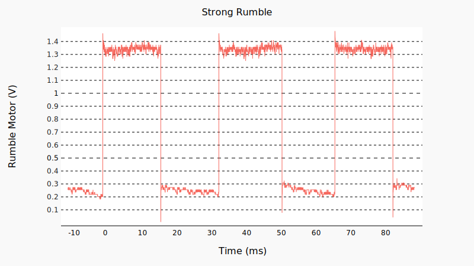
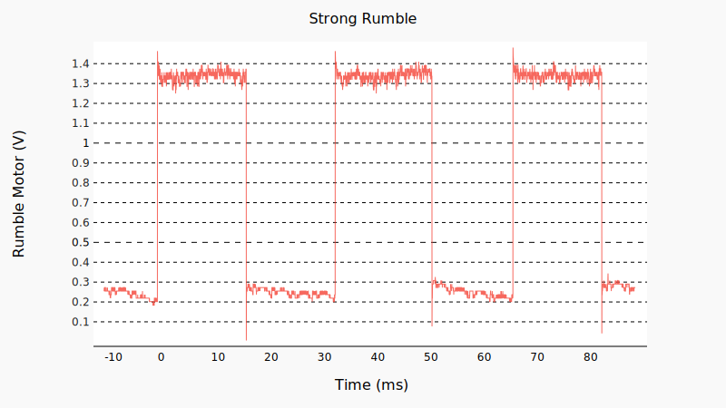

Foreword
This document, started in early 1995, is considered the single most comprehensive technical reference to Game Boy available to the public.
You are reading a new version of it, mantained in the Markdown format and enjoying renewed community attention, correcting and updating it with recent findings. To learn more about the legacy and the mission of this initiative, check History.
SCOPE
The information here is targeted at homebrew development. Emulator developers may be also interested in the Game Boy: Complete Technical Reference document.
Contributing
This project is open source, released under the CC0 license. Everyone is welcome to help, provide feedback and propose additions or improvements. The git repository is hosted at github.com/gbdev/pandocs, where you can learn more about how you can contribute, find detailed contribution guidelines and procedures, file Issues and send Pull Requests.
There is a Discord chat dedicated to the gbdev community.
Finally, you can also contact us and send patches via email: pandocs (at) gbdev.io.
Using this document
In the top navigation bar, you will find a series of icons.
By clicking on the icon you will toggle an interactive table of contents to navigate the document. You can also use → and ← keys on your keyboard to go to the following and previous page.
The lets you choose among 5 different themes and color schemes to please your reading experience.
You can search anywhere by pressing s on your keyboard or clicking the icon.
The icon allows you to suggest an edit on the current page by directly opening the source file in the git repository.
Also available are one-page and printable versions of this document.
This document version was produced from git commit be94eb8 (2022-03-28 09:38:34 +0200).
Acknowledgements
This resource wouldn’t be possible without all the passionate hackers and researchers who contributed on this document in the last three decades.
We would like to thank everyone in the gbdev community for providing precious feedback, content, support and invaluable knowledge.
We are also grateful to DigitalOcean, sponsoring this initiative and lifting us from any hosting and infrastructural cost in the last few years.
Thanks to our economic donors, allowing us to push this community further and spread open culture while staying independent and free.
Thanks also to everyone who directly contributed on Pan Docs codebase.
Authors
Antonio Niño Díaz, Antonio Vivace, Beannaich, Cory Sandlin, Eldred “ISSOtm” Habert, Elizafox, Furrtek, Gekkio, Jeff Frohwein, John Harrison, Lior “LIJI32” Halphon, Mantidactyle, Marat Fayzullin, Martin “nocash” Korth, Pan of ATX, Pascal Felber, Paul Robson, T4g1, TechFalcon, endrift, exezin, jrra, kOOPa, mattcurrie, nitro2k01, pinobatch, Pat Fagan, Alvaro Burnett.
Special thanks
FrankenGraphics, zeta0134.
History
Pan Docs - also known as GAMEBOY.TXT or GBSPEC.TXT - is an old document dating back to early 1995 originally written by Pan of Anthrox. It has been one of the most important references for Game Boy hackers, emulators and homebrew developers during the last 25 years.

ADDRESS1.PCX, one of the diagrams attached to the first version, released January 28th, 1995
After its release (1995-2008), it received a number of revisions, corrections and updates, maintaining its TXT format. This folder provides a historical archive of those versions.
In 2008, a wikified version (using Martin Korth’s 2001 revision as a baseline) has been published. The document was split into different articles and it continued being maintained and updated in that form.
In 2020, after this RFC we migrated the last updated version to plain Markdown and made github.com/gbdev/pandocs the new home of this resource, where it can receive new public discussions and contributions, maintain its legacy and historical relevance, while making use of modern tools and workflows to be visualized and distributed.
We are releasing everything (content, sources, code, figures) under the CC0 license (Public Domain).
Specifications
| Game Boy (DMG) | Game Boy Pocket (MGB) | Super Game Boy (SGB) | Game Boy Color (CGB) | |
|---|---|---|---|---|
| CPU | 8-bit 8080-like Sharp CPU (speculated to be a SM83 core) | |||
| CPU freq | 4.194304 MHz | Depends on revision1 | Up to 8.388608 MHz | |
| Work RAM | 8 KiB | 32 KiB2 (4 + 7 × 4 KiB) | ||
| Video RAM | 8 KiB | 16 KiB2 (2 × 8 KiB) | ||
| Screen | LCD 4.7 × 4.3 cm | LCD 4.8 × 4.4 cm | CRT TV | TFT 4.4 × 4 cm |
| Resolution | 160 × 144 | 160 × 144 within 256 × 224 border | 160 × 144 | |
| OBJ ("sprites") | 8 × 8 or 8 ×16 ; max 40 per screen, 10 per line | |||
| Palettes | BG: 1 × 4, OBJ: 2 × 3 | BG/OBJ: 1 + 4 × 3, border: 4 × 15 | BG: 8 × 4, OBJ: 8 × 32 | |
| Colors | 4 shades of green | 4 shades of gray | 32768 colors (15-bit RGB) | |
| Horizontal sync | 9.198 KHz | Complicated3 | 9.198 KHz | |
| Vertical sync | 59.73 Hz | Complicated3 | 59.73 Hz | |
| Sound | 4 channels with stereo output | 4 GB channels + SNES audio | 4 channels with stereo output | |
| Power | DC 6V, 0.7 W | DC 3V, 0.7 W | Powered by SNES | DC 3V, 0.6 W |
SGB1 cartridges derive the GB CPU clock from the SNES’ clock, yielding a clock speed a bit higher, which differs slightly between NTSC and PAL systems. SGB2 instead uses a clock internal to the cartridge, and so has the same speed as the handhelds.
The same value as on DMG is used in compatibility mode.
The SGB runs two consoles: a Game Boy within the SGB cartridge, and the SNES itself. The GB LCD output is captured and displayed by the SNES, but the two consoles’ frame rates don’t quite sync up, leading to duplicated and/or dropped frames. The GB side of the vertical sync depends on the CPU clock1, with the same ratio as the handhelds.
Memory Map
The Game Boy has a 16-bit address bus, which is used to address ROM, RAM, and I/O.
| Start | End | Description | Notes |
|---|---|---|---|
| 0000 | 3FFF | 16 KiB ROM bank 00 | From cartridge, usually a fixed bank |
| 4000 | 7FFF | 16 KiB ROM Bank 01~NN | From cartridge, switchable bank via mapper (if any) |
| 8000 | 9FFF | 8 KiB Video RAM (VRAM) | In CGB mode, switchable bank 0/1 |
| A000 | BFFF | 8 KiB External RAM | From cartridge, switchable bank if any |
| C000 | CFFF | 4 KiB Work RAM (WRAM) | |
| D000 | DFFF | 4 KiB Work RAM (WRAM) | In CGB mode, switchable bank 1~7 |
| E000 | FDFF | Mirror of C000~DDFF (ECHO RAM) | Nintendo says use of this area is prohibited. |
| FE00 | FE9F | Sprite attribute table (OAM) | |
| FEA0 | FEFF | Not Usable | Nintendo says use of this area is prohibited |
| FF00 | FF7F | I/O Registers | |
| FF80 | FFFE | High RAM (HRAM) | |
| FFFF | FFFF | Interrupt Enable register (IE) |
Jump Vectors in first ROM bank
The following addresses are supposed to be used as jump vectors:
- RST instructions: 0000, 0008, 0010, 0018, 0020, 0028, 0030, 0038
- Interrupts: 0040, 0048, 0050, 0058, 0060
However, this memory area (0000-00FF) may be used for any other purpose in case that your program doesn’t use any (or only some) RST instructions or interrupts. RST is a 1-byte instruction that works similarly to the 3-byte CALL instruction, except that the destination address is restricted. Since it is 1-byte sized, it is also slightly faster.
Cartridge Header in first ROM bank
The memory area at 0100-014F contains the cartridge header. This area contains information about the program, its entry point, checksums, information about the used MBC chip, the ROM and RAM sizes, etc. Most of the bytes in this area are required to be specified correctly.
External Memory and Hardware
The areas from 0000-7FFF and A000-BFFF address external hardware on the cartridge, which is essentially an expansion board. Typically this is a ROM and SRAM or, more often, a Memory Bank Controller (MBC). The RAM area can be read from and written to normally; writes to the ROM area control the MBC. Some MBCs allow mapping of other hardware into the RAM area in this way.
Cartridge RAM is often battery buffered to hold saved game positions, high score tables, and other information when the Game Boy is turned off. For specific information read the chapter about Memory Bank Controllers.
Echo RAM
The range E000-FDFF is mapped to WRAM, but only the lower 13 bits of the address lines are connected, with the upper bits on the upper bank set internally in the memory controller by a bank swap register. This causes the address to effectively wrap around. All reads and writes to this range have the same effect as reads and writes to C000-DDFF.
Nintendo prohibits developers from using this memory range. The behavior is confirmed on all official hardware. Some emulators (such as VisualBoyAdvance <1.8) don’t emulate Echo RAM. In some flash cartridges, echo RAM interferes with SRAM normally at A000-BFFF. Software can check if Echo RAM is properly emulated by writing to RAM (avoid values 00 and FF) and checking if said value is mirrored in Echo RAM and not cart SRAM.
I/O Ranges
The Game Boy uses the following I/O ranges:
| Start | End | First appeared | Purpose |
|---|---|---|---|
| $FF00 | DMG | Joypad input | |
| $FF01 | $FF02 | DMG | Serial transfer |
| $FF04 | $FF07 | DMG | Timer and divider |
| $FF10 | $FF26 | DMG | Sound |
| $FF30 | $FF3F | DMG | Wave pattern |
| $FF40 | $FF4B | DMG | LCD Control, Status, Position, Scrolling, and Palettes |
| $FF4F | CGB | VRAM Bank Select | |
| $FF50 | DMG | Set to non-zero to disable boot ROM | |
| $FF51 | $FF55 | CGB | VRAM DMA |
| $FF68 | $FF69 | CGB | BG / OBJ Palettes |
| $FF70 | CGB | WRAM Bank Select |
FEA0-FEFF range
Nintendo indicates use of this area is prohibited. This area returns $FF when OAM is blocked, and otherwise the behavior depends on the hardware revision.
-
On DMG, MGB, SGB, and SGB2, reads during OAM block trigger OAM corruption. Reads otherwise return $00.
-
On CGB revisions 0-D, this area is a unique RAM area, but is masked with a revision-specific value.
-
On CGB revision E, AGB, AGS, and GBP, it returns the high nibble of the lower address byte twice, e.g. FFAx returns $AA, FFBx returns $BB, and so forth.
Rendering Overview
The Game Boy outputs graphics to a 160x144 pixel LCD, using a quite complex mechanism to facilitate rendering.
Terminology
Sprites/graphics terminology can vary a lot among different platforms, consoles, users and communities. You may be familiar with slightly different definitions. Keep also in mind that some of the definitions refers to lower (hardware) tools and some others to higher abstractions concepts.
Tiles
Similarly to other retro systems, pixels are not manipulated individually, as this would be expensive CPU-wise. Instead, pixels are grouped in 8x8 squares, called tiles (or sometimes “patterns”), often considered as the base unit in Game Boy graphics.
A tile does not encode color information. Instead, a tile assigns a color ID to each of its pixels, ranging from 0 to 3. For this reason, Game Boy graphics are also called 2bpp (2 bits per pixel). When a tile is used in the Background or Window, these color IDs are associated with a palette. When a tile is used in an OBJ, the IDs 1 to 3 are associated with a palette, but ID 0 means transparent.
Palettes
A palette consists of an array of colors, 4 in the Game Boy’s case. Palettes are stored differently in monochrome and color versions of the console.
Modifying palettes enables graphical effects such as quickly flashing some graphics (damage, invulnerability, thunderstorm, etc.), fading the screen, “palette swaps”, and more.
Layers
The Game Boy has three “layers”, from back to front: the Background, the Window, and the Objects. Some features and behaviors break this abstraction, but it works for the most part.
Background
The background is composed of a tilemap. A tilemap is a large grid of tiles. However, tiles aren’t directly written to tilemaps, they merely contain references to the tiles. This makes reusing tiles very cheap, both in CPU time and in required memory space, and it is the main mechanism that helps working around the paltry 8 KiB of video RAM.
The background can be made to scroll as a whole, writing to two hardware registers. This makes scrolling very cheap.
Window
The window is sort of a second background layer on top of the background. It is fairly limited: it has no transparency, it’s always a rectangle and only the position of the top-left pixel can be controlled.
Possible usage include a fixed status bar in an otherwise scrolling game (e.g. Super Mario Bros. 3).
Objects
The background layer is useful for elements scrolling as a whole, but it’s impractical for objects that need to move separately, such as the player.
The objects layer is designed to fill this gap: objects are made of 1 or 2 stacked tiles (8x8 or 8x16 pixels) and can be displayed anywhere on the screen.
NOTE
Several objects can be combined (they can be called metasprites) to draw a larger graphical element, usually called “sprite”. Originally, the term “sprites” referred to fixed-sized objects composited together, by hardware, with a background. Use of the term has since become more general.
To summarise:
- Tile, an 8x8-pixel chunk of graphics.
- Object, an entry in object attribute memory, composed of 1 or 2 tiles. Independent from the background.
VRAM Tile Data
Tile data is stored in VRAM in the memory area at $8000-$97FF; with each tile taking 16 bytes, this area defines data for 384 tiles. In CGB Mode, this is doubled (768 tiles) because of the two VRAM banks.
Each tile has 8x8 pixels and has a color depth of 4 colors/gray shades. Tiles can be displayed as part of the Background/Window maps, and/or as OBJ tiles (foreground sprites). Note that OBJs don’t use color 0 - it’s transparent instead.
There are three “blocks” of 128 tiles each:
| Block | VRAM Address | Corresponding Tile IDs | ||
|---|---|---|---|---|
| OBJs | BG/Win if LCDC.4=1 | BG/Win if LCDC.4=0 | ||
| 0 | $8000–$87FF | 0–127 | 0–127 | |
| 1 | $8800–$8FFF | 128–255 | 128–255 |
128–255 (or -128–-1) |
| 2 | $9000–$97FF | (Can't use) | 0–127 | |
Tiles are always indexed using an 8-bit integer, but the addressing method may differ. The “$8000 method” uses $8000 as its base pointer and uses an unsigned addressing, meaning that tiles 0-127 are in block 0, and tiles 128-255 are in block 1. The “$8800 method” uses $9000 as its base pointer and uses a signed addressing, meaning that tiles 0-127 are in block 2, and tiles -128 to -1 are in block 1, or to put it differently, “$8800 addressing” takes tiles 0-127 from block 2 and tiles 128-255 from block 1. (You can notice that block 1 is shared by both addressing methods)
Sprites always use “$8000 addressing”, but the BG and Window can use either mode, controlled by LCDC bit 4.
Each tile occupies 16 bytes, where each line is represented by 2 bytes:
Byte 0-1 Topmost Line (Top 8 pixels)
Byte 2-3 Second Line
etc.
For each line, the first byte specifies the least significant bit of the color
ID of each pixel, and the second byte specifies the most significant bit. In
both bytes, bit 7 represents the leftmost pixel, and bit 0 the rightmost. For
example, the tile data $3C $7E $42 $42 $42 $42 $42 $42 $7E $5E $7E $0A $7C $56 $38 $7C appears as follows:
For the first row, the values $3C $7E are 00111100 and 01111110 in
binary. The leftmost bits are 0 and 0, thus the color ID is binary 00, or 0.
The next bits are 0 and 1, thus the color ID is binary 10, or 2 (remember to
flip the order of the bits!). The full eight-pixel row evaluates to 0 2 3 3 3 3
2 0.
A tool for viewing tiles can be found here.
So, each pixel has a color ID of 0 to 3. The color numbers are translated into real colors (or gray shades) depending on the current palettes, except that when the tile is used in an OBJ the color ID 0 means transparent. The palettes are defined through registers BGP, OBP0 and OBP1, and BCPS/BGPI, BCPD/BGPD, OCPS/OBPI and OCPD/OBPD (CGB Mode).
VRAM Tile Maps
The Game Boy contains two 32x32 tile maps in VRAM at
the memory areas $9800-$9BFF and $9C00-$9FFF. Any of these maps can be used to
display the Background or the Window.
Tile Indexes
Each tile map contains the 1-byte indexes of the tiles to be displayed.
Tiles are obtained from the Tile Data Table using either of the two addressing modes (described in VRAM Tile Data), which can be selected via the LCDC register.
Since one tile has 8x8 pixels, each map holds a 256x256 pixels picture. Only 160x144 of those pixels are displayed on the LCD at any given time.
BG Map Attributes (CGB Mode only)
In CGB Mode, an additional map of 32x32 bytes is stored in VRAM Bank 1 (each byte defines attributes for the corresponding tile-number map entry in VRAM Bank 0, that is, 1:9800 defines the attributes for the tile at 0:9800):
Bit 7 BG-to-OAM Priority (0=Use OAM Priority bit, 1=BG Priority)
Bit 6 Vertical Flip (0=Normal, 1=Mirror vertically)
Bit 5 Horizontal Flip (0=Normal, 1=Mirror horizontally)
Bit 4 Not used
Bit 3 Tile VRAM Bank number (0=Bank 0, 1=Bank 1)
Bit 2-0 Background Palette number (BGP0-7)
When Bit 7 is set, the corresponding BG tile will have priority above all OBJs (regardless of the priority bits in OAM memory). There’s also a Master Priority flag in LCDC register Bit 0 which overrides all other priority bits when cleared.
Note that, if the map entry at 0:9800 is tile $2A, the attribute at
1:9800 doesn’t define properties for ALL tiles $2A on-screen, but only
the one at 0:9800!
Background (BG)
The SCY and SCX registers can be used to scroll the Background, specifying the origin of the visible 160x144 pixel area within the total 256x256 pixel Background map. The visible area of the Background wraps around the Background map (that is, when part of the visible area goes beyond the map edge, it starts displaying the opposite side of the map).
In Non-CGB mode, the Background (and the Window) can be disabled using LCDC bit 0.
Window
Besides the Background, there is also a Window overlaying it. The content of the Window is not scrollable; it is always displayed starting at the top left tile of its tile map. The only way to adjust the Window is by modifying its position on the screen, which is done via the WX and WY registers. The screen coordinates of the top left corner of the Window are (WX-7,WY). The tiles for the Window are stored in the Tile Data Table. Both the Background and the Window share the same Tile Data Table.
Whether the Window is displayed can be toggled using LCDC bit 5. But in Non-CGB mode this bit is only functional as long as LCDC bit 0 is set. Enabling the Window makes Mode 3 slightly longer on scanlines where it’s visible. (See WX and WY for the definition of “Window visibility”.)
Window Internal Line Counter
The window keeps an internal line counter that’s functionally similar to LY, and increments alongside it. However, it only gets incremented when the window is visible, as described here.
This line counter determines what window line is to be rendered on the current scanline.
VRAM Sprite Attribute Table (OAM)
The Game Boy PPU can display up to 40 sprites either in 8x8 or in 8x16 pixels. Because of a limitation of hardware, only ten sprites can be displayed per scan line. Sprite tiles have the same format as BG tiles, but they are taken from the Sprite Tiles Table located at $8000-8FFF and have unsigned numbering.
Sprite attributes reside in the Sprite Attribute Table (OAM - Object Attribute Memory) at $FE00-FE9F. Each of the 40 entries consists of four bytes with the following meanings:
Byte 0 - Y Position
Y = Sprite’s vertical position on the screen + 16. So for example, Y=0 hides a sprite, Y=2 hides an 8×8 sprite but displays the last two rows of an 8×16 sprite, Y=16 displays a sprite at the top of the screen, Y=144 displays an 8×16 sprite aligned with the bottom of the screen, Y=152 displays an 8×8 sprite aligned with the bottom of the screen, Y=154 displays the first six rows of a sprite at the bottom of the screen, Y=160 hides a sprite.
Byte 1 - X Position
X = Sprite’s horizontal position on the screen + 8. This works similarly to the examples above, except that the width of a sprite is always 8. An off-screen value (X=0 or X>=168) hides the sprite, but the sprite still affects the priority ordering, thus other sprites with lower priority may be left out due to the ten sprites limit per scan-line. A better way to hide a sprite is to set its Y-coordinate off-screen.
Byte 2 - Tile Index
In 8x8 mode (LCDC bit 2 = 0), this byte specifies the sprite’s only tile index ($00-$FF). This unsigned value selects a tile from the memory area at $8000-$8FFF. In CGB Mode this could be either in VRAM bank 0 or 1, depending on bit 3 of the following byte. In 8x16 mode (LCDC bit 2 = 1), the memory area at $8000-$8FFF is still interpreted as a series of 8x8 tiles, where every 2 tiles form a sprite. In this mode, this byte specifies the index of the first (top) tile of the sprite. This is enforced by the hardware: the least significant bit of the tile index is ignored; that is, the top 8x8 tile is “NN & $FE”, and the bottom 8x8 tile is “NN | $01”.
Byte 3 - Attributes/Flags
Bit7 BG and Window over OBJ (0=No, 1=BG and Window colors 1-3 over the OBJ)
Bit6 Y flip (0=Normal, 1=Vertically mirrored)
Bit5 X flip (0=Normal, 1=Horizontally mirrored)
Bit4 Palette number **Non CGB Mode Only** (0=OBP0, 1=OBP1)
Bit3 Tile VRAM-Bank **CGB Mode Only** (0=Bank 0, 1=Bank 1)
Bit2-0 Palette number **CGB Mode Only** (OBP0-7)
Writing data to OAM
The recommended method is to write the data to a buffer in normal RAM (typically WRAM) first, then to copy that buffer to OAM using the DMA transfer functionality.
While it is also possible to write data directly to the OAM area by accessing it normally, this only works during the HBlank and VBlank periods.
Object Priority and Conflicts
There are two kinds of “priorities” as far as objects are concerned. The first one defines which objects are ignored when there are more than 10 on a given scanline. The second one decides which object is displayed on top when some overlap (the Game Boy being a 2D console, there is no Z coordinate).
Selection priority
During each scanline’s OAM scan, the PPU compares LY
(using LCDC bit 2 to determine their size) to each
object’s Y position to select up to 10 objects to be drawn on that line.
The PPU scans OAM sequentially (from $FE00 to $FE9F), selecting the first (up to)
10 suitably-positioned objects.
Since the PPU only checks the Y coordinate to select objects, even off-screen objects count towards the 10-objects-per-scanline limit. Merely setting an object’s X coordinate to X = 0 or X ≥ 168 (160 + 8) will hide it, but it will still count towards the limit, possibly causing another object later in OAM not to be drawn. To keep off-screen objects from affecting on-screen ones, make sure to set their Y coordinate to Y = 0 or Y ≥ 160 (144 + 16). (Y ≤ 8 also works if object size is set to 8x8.)
Drawing priority
When opaque pixels from two different objects overlap, which pixel ends up being displayed is determined by another kind of priority: the pixel belonging to the higher-priority object wins. However, this priority is determined differently when in CGB mode.
- In Non-CGB mode, the smaller the X coordinate, the higher the priority. When X coordinates are identical, the object located first in OAM has higher priority.
- In CGB mode, only the object’s location in OAM determines its priority. The earlier the object, the higher its priority.
Interaction with “BG over OBJ” flag
Object drawing priority and “BG over OBJ” interact in a non-intuitive way.
Internally, the PPU first resolves priority between objects to pick an “object pixel”, which is the first non-transparent pixel encountered when iterating over objects sorted by their drawing priority. The “BG over OBJ” attribute is never considered in this process.
Only after object priority is resolved, the “object pixel” has the “BG over OBJ” attribute of its object checked to determine whether it should be drawn over the background. This means that an object with a higher priority but with “BG over OBJ” enabled will sort of “mask” lower-priority objects, even if those have “BG over OBJ” disabled.
This can be exploited to only hide parts of an object behind the background (video demonstration). A similar behaviour can be seen on the NES.
OAM DMA Transfer
FF46 - DMA (DMA Transfer and Start Address) (R/W)
Writing to this register launches a DMA transfer from ROM or RAM to OAM (Object Attribute Memory). The written value specifies the transfer source address divided by $100, that is, source and destination are:
Source: $XX00-$XX9F ;XX = $00 to $DF
Destination: $FE00-$FE9F
The transfer takes 160 machine cycles: 152 microseconds in normal speed or 76 microseconds in CGB Double Speed Mode. On DMG, during this time, the CPU can access only HRAM (memory at $FF80-$FFFE); on CGB, the bus used by the source area cannot be used (this isn’t understood well at the moment; it’s recommended to assume same behavior as DMG). For this reason, the programmer must copy a short procedure into HRAM, and use this procedure to start the transfer from inside HRAM, and wait until the transfer has finished:
run_dma:
ld a, HIGH(start address)
ldh [$FF46], a ; start DMA transfer (starts right after instruction)
ld a, 40 ; delay for a total of 4×40 = 160 cycles
.wait
dec a ; 1 cycle
jr nz, .wait ; 3 cycles
ret
Because sprites are not displayed while an OAM DMA transfer is in progress, most programs execute this procedure from inside their VBlank handler. But it is also possible to execute it during display redraw (Modes 2 and 3), allowing to display more than 40 sprites on the screen (that is, for example 40 sprites in the top half, and other 40 sprites in the bottom half of the screen), at the cost of a couple lines that lack sprites due to the fact that during those couple lines the PPU reads OAM as $FF. Besides, graphic glitches may happen if an OAM DMA transfer is started during Mode 3.
A more compact procedure is
run_dma: ; This part is in ROM
ld a, HIGH(start address)
ld bc, $2846 ; B: wait time; C: LOW($FF46)
jp run_dma_hrampart
run_dma_hrampart:
ldh [c], a
.wait
dec b
jr nz, .wait
ret
This saves 5 bytes of HRAM, but is slightly slower in most cases due to the jump into the HRAM part.
LCD Control
FF40 - LCDC (LCD Control) (R/W)
LCDC is the main LCD Control register. Its bits toggle what elements are displayed on the screen, and how.
| Bit | Name | Usage notes |
|---|---|---|
| 7 | LCD and PPU enable | 0=Off, 1=On |
| 6 | Window tile map area | 0=9800-9BFF, 1=9C00-9FFF |
| 5 | Window enable | 0=Off, 1=On |
| 4 | BG and Window tile data area | 0=8800-97FF, 1=8000-8FFF |
| 3 | BG tile map area | 0=9800-9BFF, 1=9C00-9FFF |
| 2 | OBJ size | 0=8x8, 1=8x16 |
| 1 | OBJ enable | 0=Off, 1=On |
| 0 | BG and Window enable/priority | 0=Off, 1=On |
LCDC.7 - LCD enable
This bit controls whether the LCD is on and the PPU is active. Setting it to 0 turns both off, which grants immediate and full access to VRAM, OAM, etc.
CAUTION
Stopping LCD operation (Bit 7 from 1 to 0) may be performed during VBlank ONLY, disabling the display outside of the VBlank period may damage the hardware by burning in a black horizontal line similar to that which appears when the GB is turned off. This appears to be a serious issue. Nintendo is reported to reject any games not following this rule.
When the display is disabled the screen is blank, which on DMG is displayed as a white “whiter” than color #0.
On SGB, the screen doesn’t turn white, it appears that the previous picture sticks to the screen. (TODO: research this more.)
When re-enabling the LCD, the PPU will immediately start drawing again, but the screen will stay blank during the first frame.
LCDC.6 - Window tile map area
This bit controls which background map the Window uses for rendering. When it’s reset, the $9800 tilemap is used, otherwise it’s the $9C00 one.
LCDC.5 - Window enable
This bit controls whether the window shall be displayed or not. This bit is overridden on DMG by bit 0 if that bit is reset.
Changing the value of this register mid-frame triggers a more complex behaviour: see further below.
Note that on CGB models, setting this bit to 0 then back to 1 mid-frame may cause the second write to be ignored. (TODO: test this.)
LCDC.4 - BG and Window tile data area
This bit controls which addressing mode the BG and Window use to pick tiles.
Sprites aren’t affected by this, and will always use $8000 addressing mode.
LCDC.3 - BG tile map area
This bit works similarly to LCDC bit 6: if the bit is reset, the BG uses tilemap $9800, otherwise tilemap $9C00.
LCDC.2 - OBJ size
This bit controls the sprite size (1 tile or 2 stacked vertically).
Be cautious when changing this mid-frame from 8x8 to 8x16: “remnants” of the sprites intended for 8x8 could “leak” into the 8x16 zone and cause artifacts.
LCDC.1 - OBJ enable
This bit toggles whether sprites are displayed or not.
This can be toggled mid-frame, for example to avoid sprites being displayed on top of a status bar or text box.
(Note: toggling mid-scanline might have funky results on DMG? Investigation needed.)
LCDC.0 - BG and Window enable/priority
LCDC.0 has different meanings depending on Game Boy type and Mode:
Non-CGB Mode (DMG, SGB and CGB in compatibility mode): BG and Window Display
When Bit 0 is cleared, both background and window become blank (white), and the Window Display Bit is ignored in that case. Only Sprites may still be displayed (if enabled in Bit 1).
CGB Mode: BG and Window Master Priority
When Bit 0 is cleared, the background and window lose their priority - the sprites will be always displayed on top of background and window, independently of the priority flags in OAM and BG Map attributes.
Using LCDC
LCDC is a powerful tool: each bit controls a lot of behavior, and can be modified at any time during the frame.
One of the important aspects of LCDC is that unlike VRAM, the PPU never locks it. It’s thus possible to modify it mid-scanline!
Faux-layer textbox/status bar
A problem often seen especially in NES games is sprites rendering on top of the textbox/status bar. It’s possible to prevent this using LCDC if the textbox/status bar is “alone” on its scanlines:
- Set LCDC.1 to 1 for gameplay scanlines
- Set LCDC.1 to 0 for textbox/status bar scanlines
Usually, these bars are either at the top or bottom of the screen, so the bit can be set by the VBlank handler.
LCD Status Register
TERMINOLOGY
A dot is the shortest period over which the PPU can output one pixel: is it equivalent to 1 T-state on DMG or on CGB single-speed mode or 2 T-states on CGB double-speed mode. On each dot during mode 3, either the PPU outputs a pixel or the fetcher is stalling the FIFOs.
FF41 - STAT (LCD Status) (R/W)
Bit 6 - LYC=LY STAT Interrupt source (1=Enable) (Read/Write)
Bit 5 - Mode 2 OAM STAT Interrupt source (1=Enable) (Read/Write)
Bit 4 - Mode 1 VBlank STAT Interrupt source (1=Enable) (Read/Write)
Bit 3 - Mode 0 HBlank STAT Interrupt source (1=Enable) (Read/Write)
Bit 2 - LYC=LY Flag (0=Different, 1=Equal) (Read Only)
Bit 1-0 - Mode Flag (Mode 0-3, see below) (Read Only)
0: HBlank
1: VBlank
2: Searching OAM
3: Transferring Data to LCD Controller
The two lower STAT bits show the current status of the PPU.
Bit 2 is set when LY contains the same value as LYC. It is constantly updated.
Bits 3-6 select which sources are used for the STAT interrupt.
The LCD controller operates on a 2^22 Hz = 4.194 MHz dot clock. An entire frame is 154 scanlines = 70224 dots = 16.74 ms. On scanlines 0 through 143, the PPU cycles through modes 2, 3, and 0 once every 456 dots. Scanlines 144 through 153 are mode 1.
The following sequence is typical when the display is enabled:
Mode 2 2_____2_____2_____2_____2_____2___________________2____
Mode 3 _33____33____33____33____33____33__________________3___
Mode 0 ___000___000___000___000___000___000________________000
Mode 1 ____________________________________11111111111111_____
When the PPU is accessing some video-related memory, that memory is inaccessible to the CPU: writes are ignored, and reads return garbage values (usually $FF).
- During modes 2 and 3, the CPU cannot access OAM ($FE00-FE9F).
- During mode 3, the CPU cannot access VRAM or CGB palette data registers ($FF69,$FF6B).
| Mode | Action | Duration | Accessible video memory |
|---|---|---|---|
| 2 | Searching OAM for OBJs whose Y coordinate overlap this line | 80 dots (19 µs) | VRAM, CGB palettes |
| 3 | Reading OAM and VRAM to generate the picture | 168 to 291 dots (40 to 60 µs) depending on sprite count | None |
| 0 | Nothing (HBlank) | 85 to 208 dots (20 to 49 µs) depending on previous mode 3 duration | VRAM, OAM, CGB palettes |
| 1 | Nothing (VBlank) | 4560 dots (1087 µs, 10 scanlines) | VRAM, OAM, CGB palettes |
Properties of STAT modes
Unlike most game consoles, the Game Boy can pause the dot clock briefly,
making Mode 3 longer and Mode 0 shorter. It routinely takes a 6 to 11 dot
break to fetch an OBJ’s tile between background tile pattern fetches.
On DMG and GBC in DMG mode, mid-scanline writes to BGP
allow observing this behavior, as the delay from drawing an OBJ shifts the
write’s effect to the left by that many dots.
Three things are known to pause the dot clock:
- Background scrolling: If
SCX % 8is not zero at the start of the scanline, rendering is paused for that many dots while the shifter discards that many pixels from the leftmost tile. - Window: An active window pauses for at least 6 dots, as the background fetching mechanism starts over at the left side of the window.
- Sprites: Each sprite usually pauses for
11 - min(5, (x + SCX) % 8)dots. Because sprite fetch waits for background fetch to finish, a sprite’s cost depends on its position relative to the left side of the background tile under it. It’s greater if a sprite is directly aligned over the background tile, less if the sprite is to the right. If the sprite’s left side is over the window, use255 - WXinstead ofSCXin this formula.
TO BE VERIFIED
The exact pause duration for window start is not confirmed; it may have the same background fetch finish delay as a sprite. If two sprites’ left sides are over the same background or window tile, the second may pause for fewer dots.
A hardware quirk in the monochrome Game Boy makes the LCD interrupt sometimes trigger when writing to STAT (including writing $00) during OAM scan, HBlank, VBlank, or LY=LYC. It behaves as if $FF were written for one cycle, and then the written value were written the next cycle. Because the GBC in DMG mode does not have this quirk, two games that depend on this quirk (Ocean’s Road Rash and Vic Tokai’s Xerd no Densetsu) will not run on a GBC.
LCD Position and Scrolling
These registers can be accessed even during Mode 3, but modifications may not take effect immediately (see further below).
FF42 - SCY (Scroll Y) (R/W), FF43 - SCX (Scroll X) (R/W)
Those specify the top-left coordinates of the visible 160×144 pixel area within the 256×256 pixels BG map. Values in the range 0–255 may be used.
FF44 - LY (LCD Y Coordinate) (R)
LY indicates the current horizontal line, which might be about to be drawn, being drawn, or just been drawn. LY can hold any value from 0 to 153, with values from 144 to 153 indicating the VBlank period.
FF45 - LYC (LY Compare) (R/W)
The Game Boy permanently compares the value of the LYC and LY registers. When both values are identical, the “LYC=LY” flag in the STAT register is set, and (if enabled) a STAT interrupt is requested.
FF4A - WY (Window Y Position) (R/W), FF4B - WX (Window X Position + 7) (R/W)
Specify the top-left coordinates of the Window. (The Window is an alternate background area which can be displayed above of the normal background. OBJs (sprites) may be still displayed above or behind the Window, just as for normal BG.)
The Window is visible (if enabled) when both coordinates are in the ranges WX=0..166, WY=0..143 respectively. Values WX=7, WY=0 place the Window at the top left of the screen, completely covering the background.
Warning
WX values 0 and 166 are unreliable due to hardware bugs.
If WX is set to 0, the window will “stutter” horizontally when SCX changes (depending on SCX % 8).
If WX is set to 166, the window will span the entirety of the following scanline.
Mid-frame behavior
Scrolling
The scroll registers are re-read on each tile fetch, except for the low 3 bits of SCX, which are only read at the beginning of the scanline (for the initial shifting of pixels).
All models before the CGB-D read the Y coordinate once for each bitplane (so a very precisely timed SCY write allows “desyncing” them), but CGB-D and later use the same Y coordinate for both no matter what.
Window
While the Window should work as just mentioned, writing to WX, WY etc. mid-frame shows a more articulated behavior.
For the window to be displayed on a scanline, the following conditions must be met:
- WY condition was triggered: i.e. at some point in this frame the value of WY was equal to LY (checked at the start of Mode 2 only)
- WX condition was triggered: i.e. the current X coordinate being rendered + 7 was equal to WX
- Window enable bit in LCDC is set
If the WY condition has already been triggered and at the start of a row the window enable bit was set, then resetting that bit before the WX condition gets triggered on that row yields a nice window glitch pixel where the window would have been activated.
Palettes
LCD Monochrome Palettes
FF47 - BGP (BG Palette Data) (R/W) - Non CGB Mode Only
This register assigns gray shades to the color indexes of the BG and Window tiles.
Bit 7-6 - Color for index 3
Bit 5-4 - Color for index 2
Bit 3-2 - Color for index 1
Bit 1-0 - Color for index 0
| Value | Color |
|---|---|
| 0 | White |
| 1 | Light gray |
| 2 | Dark gray |
| 3 | Black |
In CGB Mode the color palettes are taken from CGB palette memory instead.
FF48 - OBP0 (OBJ Palette 0 Data) (R/W), FF49 - OBP1 (OBJ Palette 1 Data) (R/W) - Both Non CGB Mode Only
These registers assigns gray shades to the color indexes of the OBJs that use the corresponding palette. They work exactly like BGP, except that the lower two bits are ignored because color index 0 is transparent for OBJs.
LCD Color Palettes (CGB only)
The CGB has a small amount of RAM used to store its color palettes. Unlike most of the hardware interface, palette RAM (or CRAM for Color RAM) is not accessed directly, but instead through the following registers:
FF68 - BCPS/BGPI (Background Color Palette Specification or Background Palette Index) - CGB Mode Only
This register is used to address a byte in the CGB’s background palette RAM. Since there are 8 palettes, 8 palettes × 4 colors/palette × 2 bytes/color = 64 bytes can be addressed.
Bit 7 Auto Increment (0=Disabled, 1=Increment after Writing)
Bit 5-0 Address ($00-3F)
First comes BGP0 color number 0, then BGP0 color number 1, BGP0 color number 2, BGP0 color number 3, BGP1 color number 0, and so on. Thus, address $03 allows accessing the second (upper) byte of BGP0 color #1 via BCPD, which contains the color’s blue and upper green bits.
Data can be read from or written to the specified CRAM address through BCPD/BGPD. If the Auto Increment bit is set, the index gets incremented after each write to BCPD. Auto Increment has no effect when reading from BCPD, so the index must be manually incremented in that case. Writing to BCPD during rendering still causes auto-increment to occur, despite the write being blocked.
Unlike BCPD, this register can be accessed outside VBlank and HBlank.
FF69 - BCPD/BGPD (Background Color Palette Data or Background Palette Data) - CGB Mode Only
This register allows to read/write data to the CGBs background palette memory, addressed through BCPS/BGPI. Each color is stored as little-endian RGB555:
Bit 0-4 Red Intensity ($00-1F)
Bit 5-9 Green Intensity ($00-1F)
Bit 10-14 Blue Intensity ($00-1F)
Much like VRAM, data in palette memory cannot be read or written during the time when the PPU is reading from it, that is, Mode 3.
NOTE
All background colors are initialized as white by the boot ROM, however it is a good idea to initialize all colors yourself, e.g. if implementing a soft-reset mechanic.
FF6A - OCPS/OBPI (OBJ Color Palette Specification / OBJ Palette Index), FF6B - OCPD/OBPD (OBJ Color Palette Data / OBJ Palette Data) - Both CGB Mode Only
These registers function exactly like BCPS and BCPD respectively; the 64 bytes of OBJ palette memory are entirely separate from Background palette memory, but function the same.
Note that while 4 colors are stored per OBJ palette, color #0 is never used, as it’s always transparent. It’s thus fine to write garbage values, or even leave color #0 uninitialized.
NOTE
The boot ROM leaves all object colors uninitialized (and thus somewhat random), aside from setting the first byte of OBJ0 color #0 to $00, which is unused.
RGB Translation by CGBs

When developing graphics on PCs, note that the RGB values will have different appearance on CGB displays as on VGA/HDMI monitors calibrated to sRGB color. Because the GBC is not lit, the highest intensity will produce light gray rather than white. The intensities are not linear; the values $10-$1F will all appear very bright, while medium and darker colors are ranged at $00-0F.
The CGB display’s pigments aren’t perfectly saturated. This means the colors mix quite oddly: increasing the intensity of only one R/G/B color will also influence the other two R/G/B colors. For example, a color setting of $03EF (Blue=$00, Green=$1F, Red=$0F) will appear as Neon Green on VGA displays, but on the CGB it’ll produce a decently washed out Yellow. See the image above.
RGB Translation by GBAs
Even though GBA is described to be compatible to CGB games, most CGB games are completely unplayable on older GBAs because most colors are invisible (black). Of course, colors such like Black and White will appear the same on both CGB and GBA, but medium intensities are arranged completely different. Intensities in range $00–07 are invisible/black (unless eventually under best sunlight circumstances, and when gazing at the screen under obscure viewing angles), unfortunately, these intensities are regularly used by most existing CGB games for medium and darker colors.
WORKAROUND
Newer CGB games may avoid this effect by changing palette data when
detecting GBA hardware (see how).
Based on measurements of GBC and GBA palettes using the
144p Test Suite,
a fairly close approximation is GBA = GBC × 3/4 + $08 for each R/G/B
component. The result isn’t quite perfect, and it may turn
out that the color mixing is different also; anyways, it’d be still
ways better than no conversion.
This problem with low brightness levels does not affect later GBA SP units and Game Boy Player. Thus ideally, the player should have control of this brightness correction.
Pixel FIFO
TERMINOLOGY
All references to a dot are meant as dots (4.19 MHz). Dots remain the same regardless of CGB double speed. When it is stated that a certain action lengthens mode 3 it means that mode 0 (HBlank) is shortened to make up for the additional time in mode 3, as shown in the following diagram.
Introduction
FIFO stands for First In, First Out. The first pixel to be pushed to the FIFO is the first pixel to be popped off. In theory that sounds great, in practice there are a lot of intricacies.
There are two pixel FIFOs. One for background pixels and one for OAM (sprite) pixels. These two FIFOs are not shared. They are independent of each other. The two FIFOs are mixed only when popping items. Sprites take priority unless they’re transparent (color 0) which will be explained in detail later. Each FIFO can hold up to 16 pixels. The FIFO and Pixel Fetcher work together to ensure that the FIFO always contains at least 8 pixels at any given time, as 8 pixels are required for the Pixel Rendering operation to take place. Each FIFO is manipulated only during mode 3 (pixel transfer).
Each pixel in the FIFO has four properties:
- Color: a value between 0 and 3
- Palette: on CGB a value between 0 and 7 and on DMG this only applies to sprites
- Sprite Priority: on CGB this is the OAM index for the sprite and on DMG this doesn’t exist
- Background Priority: holds the value of the OBJ-to-BG Priority bit
FIFO Pixel Fetcher
The fetcher fetches a row of 8 background or window pixels and queues them up to be mixed with sprite pixels. The pixel fetcher has 5 steps. The first four steps take 2 dots each and the fifth step is attempted every dot until it succeeds. The order of the steps are as follows:
- Get tile
- Get tile data low
- Get tile data high
- Sleep
- Push
Get Tile
This step determines which background/window tile to fetch pixels from. By default the tilemap used is the one at $9800 but certain conditions can change that.
When LCDC.3 is enabled and the X coordinate of the current scanline is not inside the window then tilemap $9C00 is used.
When LCDC.6 is enabled and the X coordinate of the current scanline is inside the window then tilemap $9C00 is used.
The fetcher keeps track of which X and Y coordinate of the tile it’s on:
If the current tile is a window tile, the X coordinate for the window tile is used, otherwise the following formula is used to calculate the X coordinate: ((SCX / 8) + fetcher’s X coordinate) & $1F. Because of this formula, fetcherX can be between 0 and 31.
If the current tile is a window tile, the Y coordinate for the window tile is used, otherwise the following formula is used to calculate the Y coordinate: (currentScanline + SCY) & 255. Because of this formula, fetcherY can be between 0 and 159.
The fetcher’s X and Y coordinate can then be used to get the tile from VRAM. However, if the PPU’s access to VRAM is blocked then the value for the tile is read as $FF.
CGB can access both tile index and the attributes in the same clock dot.
Get Tile Data Low
Check LCDC.4 for which tilemap to use. At this step CGB also needs to check which VRAM bank to use and check if the tile is flipped vertically. Once the tilemap, VRAM and vertical flip is calculated the tile data is retrieved from VRAM. However, if the PPU’s access to VRAM is blocked then the tile data is read as $FF.
The tile data retrieved in this step will be used in the push steps.
Get Tile Data High
Same as Get Tile Data Low except the tile address is incremented by 1.
The tile data retrieved in this step will be used in the push steps.
This also pushes a row of background/window pixels to the FIFO. This extra push is not part of the 8 steps, meaning there’s 3 total chances to push pixels to the background FIFO every time the complete fetcher steps are performed.
Push
Pushes a row of background/window pixels to the FIFO. Since tiles are 8 pixels wide, a “row” of pixels is 8 pixels from the tile to be rendered based on the X and Y coordinates calculated in the previous steps.
Pixels are only pushed to the background FIFO if it’s empty.
This is where the tile data retrieved in the two Tile Data steps will come in handy. Depending on if the tile is flipped horizontally the pixels will be pushed to the background FIFO differently. If the tile is flipped horizontally the pixels will be pushed LSB first. Otherwise they will be pushed MSB first.
Sleep
Do nothing.
VRAM Access
At various times during PPU operation read access to VRAM is blocked and the value read is $FF:
- LCD turning off
- At scanline 0 on CGB when not in double speed mode
- When switching from mode 3 to mode 0
- On CGB when searching OAM and index 37 is reached
At various times during PPU operation read access to VRAM is restored:
- At scanline 0 on DMG and CGB when in double speed mode
- On DMG when searching OAM and index 37 is reached
- After switching from mode 2 (oam search) to mode 3 (pixel transfer)
NOTE: These conditions are checked only when entering STOP mode and the PPU’s access to VRAM is always restored upon leaving STOP mode.
Mode 3 Operation
As stated before the pixel FIFO only operates during mode 3 (pixel transfer). At the beginning of mode 3 both the background and OAM FIFOs are cleared.
The Window
When rendering the window the background FIFO is cleared and the fetcher is reset to step 1. When WX is 0 and the SCX & 7 > 0 mode 3 is shortened by 1 dot.
When the window has already started rendering there is a bug that occurs when WX is changed mid-scanline. When the value of WX changes after the window has started rendering and the new value of WX is reached again, a pixel with color value of 0 and the lowest priority is pushed onto the background FIFO.
Sprites
The following is performed for each sprite on the current scanline if LCDC.1 is enabled (this condition is ignored on CGB) and the X coordinate of the current scanline has a sprite on it. If those conditions are not met then sprite fetching is aborted.
At this point the fetcher is advanced one step until it’s at step 5 or until the background FIFO is not empty. Advancing the fetcher one step here lengthens mode 3 by 1 dot. This process may be aborted after the fetcher has advanced a step.
When SCX & 7 > 0 and there is a sprite at X coordinate 0 of the current scanline then mode 3 is lengthened. The amount of dots this lengthens mode 3 by is whatever the lower 3 bits of SCX are. After this penalty is applied object fetching may be aborted. Note that the timing of the penalty is not confirmed. It may happen before or after waiting for the fetcher. More research needs to be done.
After checking for sprites at X coordinate 0 the fetcher is advanced two steps. The first advancement lengthens mode 3 by 1 dot and the second advancement lengthens mode 3 by 3 dots. After each fetcher advancement there is a chance for a sprite fetch abortion to occur.
The lower address for the row of pixels of the target object tile is now retrieved and lengthens mode 3 by 1 dot. Once the address is retrieved this is the last chance for sprite fetch abortion to occur. Exiting object fetch lengthens mode 3 by 1 dot. The upper address for the target object tile is now retrieved and does not shorten mode 3.
At this point VRAM Access is checked for the lower and upper addresses for the target object. Before any mixing is done, if the OAM FIFO doesn’t have at least 8 pixels in it then transparent pixels with the lowest priority are pushed onto the OAM FIFO. Once this is done each pixel of the target object row is checked. On CGB, horizontal flip is checked here. If the target object pixel is not white and the pixel in the OAM FIFO is white, or if the pixel in the OAM FIFO has higher priority than the target object’s pixel, then the pixel in the OAM FIFO is replaced with the target object’s properties.
Now it’s time to render a pixel! The same process described in Sprite Fetch Abortion is performed: a pixel is rendered and the fetcher is advanced one step. This advancement lengthens mode 3 by 1 dot if the X coordinate of the current scanline is not 160. If the X coordinate is 160 the PPU stops processing sprites (because they won’t be visible).
Everything in this section is repeated for every sprite on the current scanline unless it was decided that fetching should be aborted or the X coordinate is 160.
Pixel Rendering
This is where the background FIFO and OAM FIFO are mixed. There are conditions where either a background pixel or a sprite pixel will have display priority.
If there are pixels in the background and OAM FIFOs then a pixel is popped off each. If the OAM pixel is not transparent and LCDC.1 is enabled then the OAM pixel’s background priority property is used if it’s the same or higher priority as the background pixel’s background priority.
Pixels won’t be pushed to the LCD if there is nothing in the background FIFO or the current pixel is pixel 160 or greater.
If LCDC.0 is disabled then the background is disabled on DMG and the background pixel won’t have priority on CGB. When the background pixel is disabled the pixel color value will be 0, otherwise the color value will be whatever color pixel was popped off the background FIFO. When the pixel popped off the background FIFO has a color value other than 0 and it has priority then the sprite pixel will be discarded.
At this point, on DMG, the color of the pixel is retrieved from the BGP register and pushed to the LCD. On CGB when palette access is blocked a black pixel is pushed to the LCD.
When a sprite pixel has priority the color value is retrieved from the popped pixel from the OAM FIFO. On DMG the color for the pixel is retrieved from either the OBP1 or OBP0 register depending on the pixel’s palette property. If the palette property is 1 then OBP1 is used, otherwise OBP0 is used. The pixel is then pushed to the LCD. On CGB when palette access is blocked a black pixel is pushed to the LCD.
The pixel is then finally pushed to the LCD.
CGB Palette Access
At various times during PPU operation read access to the CGB palette is blocked and a black pixel pushed to the LCD when rendering pixels:
- LCD turning off
- First HBlank of the frame
- When searching OAM and index 37 is reached
- After switching from mode 2 (oam search) to mode 3 (pixel transfer)
- When entering HBlank (mode 0) and not in double speed mode, blocked 2 dots later no matter what
At various times during PPU operation read access to the CGB palette is restored and pixels are pushed to the LCD normally when rendering pixels:
- At the end of mode 2 (oam search)
- For only 2 dots when entering HBlank (mode 0) and in double speed mode
Note
These conditions are checked only when entering STOP mode and the PPU’s access to CGB palettes is always restored upon leaving STOP mode.
Sprite Fetch Abortion
Sprite fetching may be aborted if LCDC.1 is disabled while the PPU is fetching an object from OAM. This abortion lengthens mode 3 by the amount of dots the previous instruction took plus the residual dots left for the PPU to process. When OAM fetching is aborted a pixel is rendered, the fetcher is advanced one step. This advancement lengthens mode 3 by 1 dot if the current pixel is not 160. If the current pixel is 160 the PPU stops processing sprites because they won’t be visible.
Sound Controller
There are two sound channels connected to the output terminals SO1 and SO2. There is also an input terminal Vin connected to the cartridge. It can be routed to either of both output terminals. Game Boy circuitry allows producing sound in four different ways:
- Quadrangular wave patterns with sweep and envelope functions (CH1)
- Quadrangular wave patterns with envelope functions (CH2)
- Voluntary wave patterns from wave RAM (CH3)
- White noise with an envelope function (CH4)
These four sounds can be controlled independently and then mixed separately for each of the output terminals.
Sound registers may be set at all times while producing sound.
(Sounds will have a 2.4% higher frequency on Super GB.)
Sound Channel 1 - Tone & Sweep
FF10 - NR10 - Channel 1 Sweep register (R/W)
Bit 6-4 - Sweep Time
Bit 3 - Sweep Increase/Decrease
0: Addition (frequency increases)
1: Subtraction (frequency decreases)
Bit 2-0 - Number of sweep shift (n: 0-7)
Sweep Time:
| Value (binary) | Description |
|---|---|
| 000 | sweep off - no freq change |
| 001 | 7.8 ms (1/128Hz) |
| 010 | 15.6 ms (2/128Hz) |
| 011 | 23.4 ms (3/128Hz) |
| 100 | 31.3 ms (4/128Hz) |
| 101 | 39.1 ms (5/128Hz) |
| 110 | 46.9 ms (6/128Hz) |
| 111 | 54.7 ms (7/128Hz) |
The change of frequency (NR13,NR14) at each shift is calculated by the following formula where X(0) is initial freq & X(t-1) is last freq:
X(t) = X(t-1) +/- X(t-1)/2^n
FF11 - NR11 - Channel 1 Sound length/Wave pattern duty (R/W)
Bit 7-6 - Wave Pattern Duty (Read/Write)
Bit 5-0 - Sound length data (Write Only) (t1: 0-63)
| Bits 7-6 | Wave duty |
|---|---|
| %00 | 12.5% (_-------_-------_-------) |
| %01 | 25% (__------__------__------) |
| %10 | 50% (____----____----____----) (normal) |
| %11 | 75% (______--______--______--) |
Sound Length = (64-t1)*(1/256) seconds. The Length value is used only if Bit 6 in NR14 is set.
FF12 - NR12 - Channel 1 Volume Envelope (R/W)
Bit 7-4 - Initial Volume of envelope (0-0Fh) (0=No Sound)
Bit 3 - Envelope Direction (0=Decrease, 1=Increase)
Bit 2-0 - Number of envelope sweep (n: 0-7)
(If zero, stop envelope operation.)
Length of 1 step = n*(1/64) seconds
FF13 - NR13 - Channel 1 Frequency lo (Write Only)
Lower 8 bits of 11 bit frequency (x). Next 3 bit are in NR14 ($FF14)
FF14 - NR14 - Channel 1 Frequency hi (R/W)
Bit 7 - Initial (1=Restart Sound) (Write Only)
Bit 6 - Counter/consecutive selection (Read/Write)
(1=Stop output when length in NR11 expires)
Bit 2-0 - Frequency's higher 3 bits (x) (Write Only)
Frequency = 131072/(2048-x) Hz
Sound Channel 2 - Tone
This sound channel works exactly as channel 1, except that it doesn’t have a Tone Envelope/Sweep Register.
FF16 - NR21 - Channel 2 Sound Length/Wave Pattern Duty (R/W)
Bit 7-6 - Wave Pattern Duty (Read/Write)
Bit 5-0 - Sound length data (Write Only) (t1: 0-63)
| Bits 7-6 | Wave duty |
|---|---|
| %00 | 12.5% (_-------_-------_-------) |
| %01 | 25% (__------__------__------) |
| %10 | 50% (____----____----____----) (normal) |
| %11 | 75% (______--______--______--) |
Sound Length = (64-t1)*(1/256) seconds. The Length value is used only if Bit 6 in NR24 is set.
FF17 - NR22 - Channel 2 Volume Envelope (R/W)
Bit 7-4 - Initial Volume of envelope (0-0Fh) (0=No Sound)
Bit 3 - Envelope Direction (0=Decrease, 1=Increase)
Bit 2-0 - Number of envelope sweep (n: 0-7)
(If zero, stop envelope operation.)
Length of 1 step = n*(1/64) seconds
FF18 - NR23 - Channel 2 Frequency lo data (W)
Frequency’s lower 8 bits of 11 bit data (x). Next 3 bits are in NR24 ($FF19).
FF19 - NR24 - Channel 2 Frequency hi data (R/W)
Bit 7 - Initial (1=Restart Sound) (Write Only)
Bit 6 - Counter/consecutive selection (Read/Write)
(1=Stop output when length in NR21 expires)
Bit 2-0 - Frequency's higher 3 bits (x) (Write Only)
Frequency = 131072/(2048-x) Hz
Sound Channel 3 - Wave Output
This channel can be used to output digital sound, the length of the sample buffer (Wave RAM) is limited to 32 digits. This sound channel can be also used to output normal tones when initializing the Wave RAM by a square wave. This channel doesn’t have a volume envelope register.
FF1A - NR30 - Channel 3 Sound on/off (R/W)
Bit 7 - Sound Channel 3 Off (0=Stop, 1=Playback) (Read/Write)
FF1B - NR31 - Channel 3 Sound Length (W)
Bit 7-0 - Sound length (Write only) (t1: 0 - 255)
Sound Length = (256-t1)*(1/256) seconds This value is used only if Bit 6 in NR34 is set.
FF1C - NR32 - Channel 3 Select output level (R/W)
Bits 6-5 - Select output level (Read/Write)
| Bits 6-5 | Output level |
|---|---|
| %00 | Mute (No sound) |
| %01 | 100% volume (Produce Wave Pattern RAM Data as it is) |
| %10 | 50% volume (Produce Wave Pattern RAM data shifted once to the right) |
| %11 | 25% volume (Produce Wave Pattern RAM data shifted twice to the right) |
FF1D - NR33 - Channel 3 Frequency’s lower data (W)
Lower 8 bits of an 11 bit frequency (x).
FF1E - NR34 - Channel 3 Frequency’s higher data (R/W)
Bit 7 - Initial (1=Restart Sound) (Write Only)
Bit 6 - Counter/consecutive selection (Read/Write)
(1=Stop output when length in NR31 expires)
Bit 2-0 - Frequency's higher 3 bits (x) (Write Only)
Frequency = 4194304/(64*(2048-x)) Hz = 65536/(2048-x) Hz
FF30-FF3F - Wave Pattern RAM
Contents - Waveform storage for arbitrary sound data
This storage area holds 32 4-bit samples that are played back, upper 4 bits first.
Wave RAM should only be accessed while CH3 is disabled (NR30 bit 7 reset), otherwise accesses will behave weirdly.
On almost all models, the byte will be written at the offset CH3 is currently reading. On GBA, the write will simply be ignored.
Sound Channel 4 - Noise
This channel is used to output white noise. This is done by randomly switching the amplitude between high and low at a given frequency. Depending on the frequency the noise will appear “harder” or “softer”.
It is also possible to influence the function of the random generator, so the that the output becomes more regular, resulting in a limited ability to output Tone instead of Noise.
FF20 - NR41 - Channel 4 Sound Length (W)
Bit 5-0 - Sound length data (Write only) (t1: 0-63)
Sound Length = (64-t1)*(1/256) seconds The Length value is used only if Bit 6 in NR44 is set.
FF21 - NR42 - Channel 4 Volume Envelope (R/W)
Bit 7-4 - Initial Volume of envelope (0-0Fh) (0=No Sound)
Bit 3 - Envelope Direction (0=Decrease, 1=Increase)
Bit 2-0 - Number of envelope sweep (n: 0-7)
(If zero, stop envelope operation.)
Length of 1 step = n*(1/64) seconds
FF22 - NR43 - Channel 4 Polynomial Counter (R/W)
The amplitude is randomly switched between high and low at the given frequency. A higher frequency will make the noise to appear “softer”. When Bit 3 is set, the output will become more regular, and some frequencies will sound more like Tone than Noise.
Bit 7-4 - Shift Clock Frequency (s)
Bit 3 - Counter Step/Width (0=15 bits, 1=7 bits)
Bit 2-0 - Dividing Ratio of Frequencies (r)
Frequency = 524288 Hz / r / 2^(s+1) ;For r=0 assume r=0.5 instead
FF23 - NR44 - Channel 4 Counter/consecutive; Inital (R/W)
Bit 7 - Initial (1=Restart Sound) (Write Only)
Bit 6 - Counter/consecutive selection (Read/Write)
(1=Stop output when length in NR41 expires)
Sound Control Registers
FF24 - NR50 - Channel control / ON-OFF / Volume (R/W)
The volume bits specify the “Master Volume” for Left/Right sound output. SO2 goes to the left headphone, and SO1 goes to the right.
Bit 7 - Output Vin to SO2 terminal (1=Enable)
Bit 6-4 - SO2 output level (volume) (0-7)
Bit 3 - Output Vin to SO1 terminal (1=Enable)
Bit 2-0 - SO1 output level (volume) (0-7)
The Vin signal is an analog signal received from the game cartridge bus, allowing external hardware in the cartridge to supply a fifth sound channel, additionally to the Game Boy’s internal four channels. No licensed games used this feature, and it was omitted from the Game Boy Advance.
(Despite rumors, Pocket Music does not use Vin. It blocks use on the GBA for a different reason: the developer couldn’t figure out how to silence buzzing associated with the wave channel’s DAC.)
FF25 - NR51 - Selection of Sound output terminal (R/W)
Each channel can be panned hard left, center, or hard right.
Bit 7 - Output sound 4 to SO2 terminal
Bit 6 - Output sound 3 to SO2 terminal
Bit 5 - Output sound 2 to SO2 terminal
Bit 4 - Output sound 1 to SO2 terminal
Bit 3 - Output sound 4 to SO1 terminal
Bit 2 - Output sound 3 to SO1 terminal
Bit 1 - Output sound 2 to SO1 terminal
Bit 0 - Output sound 1 to SO1 terminal
FF26 - NR52 - Sound on/off
If your GB programs don’t use sound then write 00h to this register to save 16% or more on GB power consumption. Disabling the sound controller by clearing Bit 7 destroys the contents of all sound registers. Also, it is not possible to access any sound registers (execpt FF26) while the sound controller is disabled.
Bit 7 - All sound on/off (0: stop all sound circuits) (Read/Write)
Bit 3 - Sound 4 ON flag (Read Only)
Bit 2 - Sound 3 ON flag (Read Only)
Bit 1 - Sound 2 ON flag (Read Only)
Bit 0 - Sound 1 ON flag (Read Only)
Bits 0-3 of this register are read only status bits, writing to these bits does NOT enable/disable sound. The flags get set when sound output is restarted by setting the Initial flag (Bit 7 in NR14-NR44), the flag remains set until the sound length has expired (if enabled). A volume envelopes which has decreased to zero volume will NOT cause the sound flag to go off.
Pitfalls
- Enabling or disabling a DAC (resetting NR30 bit 7 or writing %0000 0XXX to NRx2 for other channels), adding or removing it using NR51, or changing the volume in NR50, will cause an audio pop. (This causes a change in DC offset, which is smoothed out by a high-pass circuit over time, but still creates a pop)
- The final output goes through a high-pass filter, which is more aggressive on GBA than on GBC, which is more aggressive than on DMG. (What this means is that the output is “pulled” towards 0V with various degrees of “aggressiveness”)
- When first starting up a pulse channel, it will always output a (digital) zero.
- The pulse channels’ “duty step” (at which position in the duty cycle they are) can’t be reset. The exception to this is turning off the APU, which causes them to start over from 0 when turning it on.
- Restarting a pulse channel causes its “duty step timer” to reset, meaning that “tickling” a pulse channel regularly enough will cause its “duty step” to never advance.
- When restarting CH3, it resumes playing the last 4-bit sample it read from wave RAM, or 0 if no sample has been read since APU reset. (Sample latching is independent of output level control in NR32.) After the latched sample completes, it starts with the second sample in wave RAM (low 4 bits of $FF30). The first sample (high 4 bits of $FF30) is played last.
- CH3 output level control does not, in fact, alter the output level. It shifts the digital value CH3 is outputting (read below), not the analog value.
- On GBA, CH3 is inverted. This causes the channel to output a loud spike when disabled; it’s a good idea to “remove” the channel using NR51 before refreshing wave RAM.
APU technical explanation

Source: Lior Halphon
Game Boy, Game Boy Color
Each of the 4 channels work pretty identically. First, there’s a “generation” circuit, which usually outputs either a 0 or another value (CH3 differs in that it can output multiple values, but regardless). That value is digital, and can range between 0 and 0xF. This is then fed to a DAC, which maps this to an analog value; 7 maps to the lowest (negative) voltage, 0 to the highest (positive) one. Finally, all channels are mixed through NR51, scaled through NR50, and sent to the output.
Each DAC is controlled independently from the generation circuit. For
CH3, the DAC is controlled by NR30 bit 7; for other channels, the DAC is
turned on unless bits 3-7 of NRx2 are reset, and the envelope will be
set to [NRx2] >> 4. (Note: the envelope sweep function changes the
envelope, but not the value in NRx2! It won’t disable the DAC, either.)
The generation circuits are turned on by restarting them for the first
time, and this is what sets the corresponding bit in NR52. Yes, it’s
possible to turn on a DAC but not the generation circuit. Finally,
disabling a DAC also kills the generation circuit.
Note that each DAC has a DC offset, so enabling, disabling, adding to or removing from NR51, will all cause an audio pop; changing the volume in NR50 will as well.
Finally, all the output goes through a high-pass filter to remove the DC offsets from the DACs.
Game Boy Advance
The APU was reworked pretty heavily for the GBA. Instead of mixing being done analogically, it’s instead done digitally; then, sound is converted to an analog signal and an offset is added (see SOUNDBIAS in GBATEK for more details).
This means that the APU has no DACs, or if modelling the GBA as a GB, they’re always on.
Joypad Input
FF00 - P1/JOYP - Joypad (R/W)
The eight Game Boy action/direction buttons are arranged as a 2x4 matrix. Select either action or direction buttons by writing to this register, then read out the bits 0-3.
Bit 7 - Not used
Bit 6 - Not used
Bit 5 - P15 Select Action buttons (0=Select)
Bit 4 - P14 Select Direction buttons (0=Select)
Bit 3 - P13 Input: Down or Start (0=Pressed) (Read Only)
Bit 2 - P12 Input: Up or Select (0=Pressed) (Read Only)
Bit 1 - P11 Input: Left or B (0=Pressed) (Read Only)
Bit 0 - P10 Input: Right or A (0=Pressed) (Read Only)
NOTE
Most programs read from this port several times in a row (the first reads are used as a short delay, allowing the inputs to stabilize, and only the value from the last read is actually used).
Usage in SGB software
Beside for normal joypad input, SGB games mis-use the joypad register to output SGB command packets to the SNES, also, SGB programs may read out gamepad states from up to four different joypads which can be connected to the SNES. See SGB description for details.
Serial Data Transfer (Link Cable)
Communication between two Game Boy systems happens one byte at a time. One Game Boy generates a clock signal internally and thus controls when the exchange happens. In SPI terms, the Game Boy generating the clock is called the “master.” The other one uses an external clock (receiving it from the other Game Boy) and has no control over when the transfer happens. If it hasn’t gotten around to loading up the next data byte at the time the transfer begins, the last one will go out again. Alternately, if it’s ready to send the next byte but the last one hasn’t gone out yet, it has no choice but to wait.
FF01 - SB - Serial transfer data (R/W)
Before a transfer, it holds the next byte that will go out.
During a transfer, it has a blend of the outgoing and incoming bytes. Each cycle, the leftmost bit is shifted out (and over the wire) and the incoming bit is shifted in from the other side:
o7 o6 o5 o4 o3 o2 o1 o0
o6 o5 o4 o3 o2 o1 o0 i7
o5 o4 o3 o2 o1 o0 i7 i6
o4 o3 o2 o1 o0 i7 i6 i5
o3 o2 o1 o0 i7 i6 i5 i4
o2 o1 o0 i7 i6 i5 i4 i3
o1 o0 i7 i6 i5 i4 i3 i2
o0 i7 i6 i5 i4 i3 i2 i1
i7 i6 i5 i4 i3 i2 i1 i0
FF02 - SC - Serial Transfer Control (R/W)
Bit 7 - Transfer Start Flag (0=No transfer is in progress or requested, 1=Transfer in progress, or requested)
Bit 1 - Clock Speed (0=Normal, 1=Fast) ** CGB Mode Only **
Bit 0 - Shift Clock (0=External Clock, 1=Internal Clock)
The master Game Boy will load up a data byte in SB and then set SC to 0x81 (Transfer requested, use internal clock). It will be notified that the transfer is complete in two ways: SC’s Bit 7 will be cleared (that is, SC will be set up 0x01), and also the Serial Interrupt handler will be called (that is, the CPU will jump to 0x0058).
The other Game Boy will load up a data byte and can optionally set SC’s Bit 7 (that is, SC=0x80). Regardless of whether or not it has done this, if and when the master wants to conduct a transfer, it will happen (pulling whatever happens to be in SB at that time). The externally clocked Game Boy will have its serial interrupt handler called at the end of the transfer, and if it bothered to set SC’s Bit 7, it will be cleared.
Internal Clock
In Non-CGB Mode the Game Boy supplies an internal clock of 8192Hz only (allowing to transfer about 1 KByte per second minus overhead for delays). In CGB Mode four internal clock rates are available, depending on Bit 1 of the SC register, and on whether the CGB Double Speed Mode is used:
| Clock freq | Transfer speed | Conditions |
|---|---|---|
| 8192Hz | 1KB/s | Bit 1 cleared, Normal speed |
| 16384Hz | 2KB/s | Bit 1 cleared, Double-speed Mode |
| 262144Hz | 32KB/s | Bit 1 set, Normal speed |
| 524288Hz | 64KB/s | Bit 1 set, Double-speed Mode |
External Clock
The external clock is typically supplied by another Game Boy, but might be supplied by another computer (for example if connected to a PC’s parallel port), in that case the external clock may have any speed. Even the old/monochrome Game Boy is reported to recognizes external clocks of up to 500 kHz. And there is no limitation into the other direction - even when suppling an external clock speed of “1 bit per month”, then the Game Boy will still eagerly wait for the next bit(s) to be transferred. It isn’t required that the clock pulses are sent at an regular interval either.
Timeouts
When using external clock then the transfer will not complete until the last bit is received. In case that the second Game Boy isn’t supplying a clock signal, if it gets turned off, or if there is no second Game Boy connected at all) then transfer will never complete. For this reason the transfer procedure should use a timeout counter, and abort the communication if no response has been received during the timeout interval.
Delays and Synchronization
The master Game Boy should always execute a small delay after each transfer, in order to ensure that the other Game Boy has enough time to prepare itself for the next transfer. That is, the Game Boy with external clock must have set its transfer start bit before the Game Boy with internal clock starts the transfer. Alternately, the two Game Boy systems could switch between internal and external clock for each transferred byte to ensure synchronization.
Transfer is initiated when the master Game Boy sets its Transfer Start Flag, regardless of the value of this flag on the other device. This bit is automatically set to 0 (on both) at the end of transfer. Reading this bit can be used to determine if the transfer is still active.
Timer and Divider Registers
NOTE
The Timer described below is the built-in timer in the gameboy. It has nothing to do with the MBC3s battery buffered Real Time Clock - that’s a completely different thing, described in Memory Bank Controllers.
FF04 - DIV - Divider Register (R/W)
This register is incremented at a rate of 16384Hz (~16779Hz on SGB).
Writing any value to this register resets it to $00.
Additionally, this register is reset when executing the stop instruction, and
only begins ticking again once stop mode ends. This also occurs during a
speed switch.
(TODO: how is it affected by the wait after a speed switch?)
Note: The divider is affected by CGB double speed mode, and will increment at 32768Hz in double speed.
FF05 - TIMA - Timer counter (R/W)
This timer is incremented at the clock frequency specified by the TAC register ($FF07). When the value overflows (exceeds $FF) it is reset to the value specified in TMA (FF06) and an interrupt is requested, as described below.
FF06 - TMA - Timer Modulo (R/W)
When TIMA overflows, it is reset to the value in this register and an interrupt is requested. Example of use: if TMA is set to $FF, an interrupt is requested at the clock frequency selected in TAC (because every increment is an overflow). However, if TMA is set to $FE, an interrupt is only requested every two increments, which effectively divides the selected clock by two. Setting TMA to $FD would divide the clock by three, and so on.
If a TMA write is executed on the same cycle as the content of TMA is transferred to TIMA due to a timer overflow, the old value is transferred to TIMA.
FF07 - TAC - Timer Control (R/W)
Bit 2 - Timer Enable
Bits 1-0 - Input Clock Select
00: CPU Clock / 1024 (DMG, SGB2, CGB Single Speed Mode: 4096 Hz, SGB1: ~4194 Hz, CGB Double Speed Mode: 8192 Hz)
01: CPU Clock / 16 (DMG, SGB2, CGB Single Speed Mode: 262144 Hz, SGB1: ~268400 Hz, CGB Double Speed Mode: 524288 Hz)
10: CPU Clock / 64 (DMG, SGB2, CGB Single Speed Mode: 65536 Hz, SGB1: ~67110 Hz, CGB Double Speed Mode: 131072 Hz)
11: CPU Clock / 256 (DMG, SGB2, CGB Single Speed Mode: 16384 Hz, SGB1: ~16780 Hz, CGB Double Speed Mode: 32768 Hz)
NOTE
The “Timer Enable” bit only affects the timer (TIMA). The divider (DIV) is always counting.
Timer obscure behaviour
Timer Global Circuit

Relation between Timer and Divider register
This is a schematic of the circuit involving TAC and DIV:

Notice how the values that are connected to the inputs of the multiplexer are the values of those bits, not the carry of those bits. This is the reason of a few things:
-
When writing to DIV, the whole counter is reset, so the timer is also affected.
-
When writing to DIV, if the current output is 1 and timer is enabled, as the new value after reseting DIV will be 0, the falling edge detector will detect a falling edge and TIMA will increase.
-
When writing to TAC, if the previously selected multiplexer input was 1 and the new input is 0, TIMA will increase too. This doesnt happen when the timer is disabled, but it also happens when disabling the timer (the same effect as writing to DIV). The following code explains the behaviour in DMG and MGB.
clocks_array[4] = {1024, 16, 64, 256}
old_clocks = clocks_array[old_TAC&3]
new_clocks = clocks_array[new_TAC&3]
old_enable = old_TAC & BIT(2)
new_enable = new_TAC & BIT(2)
sys_clocks = 16 bit system counter
IF old_enable == 0 THEN
glitch = 0 (*)
ELSE
IF new_enable == 0 THEN
glitch = (sys_clocks & (old_clocks/2)) != 0
ELSE
glitch = ((sys_clocks & (old_clocks/2)) != 0) && ((sys_clocks & (new_clocks/2)) == 0)
END IF
END IF
The sentence marked with a (*) has a different behaviour in GBC (AGB and AGS seem to have strange behaviour even in the other statements). When enabling the timer and maintaining the same frequency it doesnt glitch. When disabling the timer it doesnt glitch either. When another change of value happens (so timer is enabled after the write), the behaviour depends on a race condition, so it cannot be predicted for every device.
Timer Overflow Behaviour
When TIMA overflows, the value from TMA is loaded and IF timer flag is set to 1, but this doesnt happen immediately. Timer interrupt is delayed 1 cycle (4 clocks) from the TIMA overflow. The TMA reload to TIMA is also delayed. For one cycle, after overflowing TIMA, the value in TIMA is 00h, not TMA. This happens only when an overflow happens, not when the upper bit goes from 1 to 0, it cant be done manually writing to TIMA, the timer has to increment itself.
For example (SYS is the system internal counter divided by 4 for easier understanding, each increment of the graph is 1 cycle, not 1 clock):
Timer overflows:
[A] [B]
SYS FD FE FF |00| 01 02 03
TIMA FF FF FF |00| 23 23 23
TMA 23 23 23 |23| 23 23 23
IF E0 E0 E0 |E0| E4 E4 E4
Timer doesn't overflow:
[C]
SYS FD FE FF 00 01 02 03
TIMA 45 45 45 46 46 46 46
TMA 23 23 23 23 23 23 23
IF E0 E0 E0 E0 E0 E0 E0
-
During the strange cycle [A] you can prevent the IF flag from being set and prevent the TIMA from being reloaded from TMA by writing a value to TIMA. That new value will be the one that stays in the TIMA register after the instruction. Writing to DIV, TAC or other registers wont prevent the IF flag from being set or TIMA from being reloaded.
-
If you write to TIMA during the cycle that TMA is being loaded to it [B], the write will be ignored and TMA value will be written to TIMA instead.
-
If TMA is written the same cycle it is loaded to TIMA [B], TIMA is also loaded with that value.
-
This is a guessed schematic to explain the priorities with registers TIMA and TMA:

TMA is a latch. As soon as it is written, the output shows that value. That explains that when TMA is written and TIMA is being incremented, the value written to TMA is also written to TIMA. It doesnt affect the IF flag, though.
Interrupts
IME - Interrupt Master Enable Flag (Write Only)
0 - Disable all interrupts
1 - Enable all interrupts that are enabled in the IE register (FFFF)
The IME flag is used to disable all interrupts, overriding any enabled bits in the IE register. It isn’t possible to access the IME flag by using an I/O address. IME can be modified by the following instructions/events only:
EI ; Enables interrupts (that is, IME=1)
DI ; Disables interrupts (that is, IME=0)
RETI ; Enables interrupts and returns (same as the instruction sequence EI, RET)
<INT> ; Disables interrupts and calls interrupt vector
where <INT> means the operation which is automatically executed by the CPU when it executes an interrupt.
The effect of ei is delayed by one instruction. This means that ei
followed immediately by DI does not allow any interrupts between them.
This interacts with the halt bug in an interesting way.
FFFF - IE - Interrupt Enable (R/W)
Bit 0: VBlank Interrupt Enable (INT $40) (1=Enable)
Bit 1: LCD STAT Interrupt Enable (INT $48) (1=Enable)
Bit 2: Timer Interrupt Enable (INT $50) (1=Enable)
Bit 3: Serial Interrupt Enable (INT $58) (1=Enable)
Bit 4: Joypad Interrupt Enable (INT $60) (1=Enable)
FF0F - IF - Interrupt Flag (R/W)
Bit 0: VBlank Interrupt Request (INT $40) (1=Request)
Bit 1: LCD STAT Interrupt Request (INT $48) (1=Request)
Bit 2: Timer Interrupt Request (INT $50) (1=Request)
Bit 3: Serial Interrupt Request (INT $58) (1=Request)
Bit 4: Joypad Interrupt Request (INT $60) (1=Request)
When an interrupt signal changes from low to high, the corresponding bit in the IF register becomes set. For example, Bit 0 becomes set when the LCD controller enters the VBlank period.
Any set bits in the IF register are only requesting an interrupt to be executed. The actual execution happens only if both the IME flag and the corresponding bit in the IE register are set, otherwise the interrupt “waits” until both IME and IE allow its execution.
Since the CPU automatically sets and clears the bits in the IF register, it is usually not required to write to the IF register. However, the user may still do that in order to manually request (or discard) interrupts. Like with real interrupts, a manually requested interrupt isn’t executed unless/until IME and IE allow its execution.
Interrupt Handling
- The IF bit corresponding to this interrupt and the IME flag are reset by the CPU.
The former “acknowledges” the interrupt, while the latter prevents any further interrupts
from being handled until the program re-enables them, typically by using the
retiinstruction. - The corresponding interrupt handler (see the IE and IF register descriptions above) is
called by the CPU. This is a regular call, exactly like what would be performed by a
call <vector>instruction (the current PC is pushed on the stack and then set to the address of the interrupt vector).
The following occurs when control is being transferred to an interrupt handler:
- Two wait states are executed (2 M-cycles pass while nothing
occurs, presumably the CPU is executing
nops during this time). - The current PC is pushed to the stack, consuming 2 more M-cycles.
- The PC register is set to the address of the handler ($40, $48, $50, $58, $60). This consumes one last M-cycle.
The entire ISR should last a total of 5 M-cycles. This has yet to be tested, but is what the Z80 datasheet implies.
Interrupt Priorities
In the following three situations it might happen that more than one bit in the IF register is set, requesting more than one interrupt at once:
- More than one interrupt signal changed from Low to High at the same time.
- Several interrupts have been requested while IME/IE didn’t allow them to be handled directly.
- The user has written a value with several bits set (for example binary 00011111) to the IF register.
If IME and IE allow the execution of more than one of the requested interrupts, the interrupt with the highest priority is executed first. The priorities follow the same order as the bits in the IE and IF registers: Bit 0 (VBlank) has the highest priority, and Bit 4 (Joypad) has the lowest priority.
Nested Interrupts
The CPU automatically disables all the other interrupts by setting IME=0 when it executes an interrupt. Usually IME remains zero until the interrupt handler returns (and sets IME=1 by means of the RETI instruction). However, if you want any other interrupts (of any priority) to be allowed to be executed from inside the interrupt handler, then you can use the EI instruction in the interrupt handler.
Interrupt Sources
INT 40 - VBlank Interrupt
This interrupt is requested every time the Game Boy enters VBlank (Mode 1).
The VBlank interrupt occurs ca. 59.7 times a second on a handheld Game Boy (DMG or CGB) or Game Boy Player and ca. 61.1 times a second on a Super Game Boy (SGB). This interrupt occurs at the beginning of the VBlank period (LY=144). During this period video hardware is not using VRAM so it may be freely accessed. This period lasts approximately 1.1 milliseconds.
INT 48 - STAT Interrupt
There are various sources which can trigger this interrupt to occur as described in STAT register ($FF41).
The various STAT interrupt sources (modes 0-2 and LYC=LY) have their state (inactive=low and active=high) logically ORed into a shared “STAT interrupt line” if their respective enable bit is turned on.
A STAT interrupt will be triggered by a rising edge (transition from low to high) on the STAT interrupt line.
STAT blocking
If a STAT interrupt source logically ORs the interrupt line high while (or immediately after) it’s already set high by another source, then there will be no low-to-high transition and so no interrupt will occur. This phenomenon is known as “STAT blocking” (test ROM example).
As mentioned in the description of the STAT register, the PPU cycles through the different modes in a fixed order. So for example, if interrupts are enabled for two consecutive modes such as Mode 0 and Mode 1, then no interrupt will trigger for Mode 1 (since the STAT interrupt line won’t have a chance to go low between them).
Using the STAT interrupt
One very popular use is to indicate to the user when the video hardware is about to redraw a given LCD line. This can be useful for dynamically controlling the SCX/SCY registers ($FF43/$FF42) to perform special video effects.
Example application: set LYC to WY, enable LY=LYC interrupt, and have the handler disable sprites. This can be used if you use the window for a text box (at the bottom of the screen), and you want sprites to be hidden by the text box.
INT 50 - Timer Interrupt
Every time that the timer overflows (that is, when TIMA exceeds $FF), an interrupt is requested by setting bit 2 in the IF register ($FF0F). As soon as that interrupt is enabled, the CPU will execute it by calling the timer interrupt vector at $0050.
INT 58 - Serial Interrupt
XXXXXX…
Transmitting and receiving serial data is done simultaneously. The received data is automatically stored in SB.
The serial I/O port on the Game Boy is a very simple setup and is crude compared to standard RS-232 (IBM-PC) or RS-485 (Macintosh) serial ports. There are no start or stop bits.
During a transfer, a byte is shifted in at the same time that a byte is shifted out. The rate of the shift is determined by whether the clock source is internal or external. The most significant bit is shifted in and out first.
When the internal clock is selected, it drives the clock pin on the game link port and it stays high when not used. During a transfer it will go low eight times to clock in/out each bit.
The state of the last bit shifted out determines the state of the output line until another transfer takes place.
If a serial transfer with internal clock is performed and no external Game Boy is present, a value of $FF will be received in the transfer.
The following code initiates the process of shifting $75 out the serial port and a byte to be shifted into $FF01:
ld a, $75
ld [$FF01], a
ld a, $81
ld [$FF02], a
The Game Boy does not support wake-on-LAN. Completion of an externally clocked serial transfer does not exit STOP mode.
INT 60 - Joypad Interrupt
The Joypad interrupt is requested when any of P1 bits 0-3 change
from High to Low. This happens when a button is
pressed (provided that the action/direction buttons are enabled by
bit 5/4, respectively), however, due to switch bounce, one or more High to Low
transitions are usually produced when pressing a button.
Using the Joypad Interrupt
This interrupt is useful to identify button presses if we have only selected either action (bit 5) or direction (bit 4), but not both. If both are selected and, for example, a bit is already held Low by an action button, pressing the corresponding direction button would make no difference. The only meaningful purpose of the Joypad interrupt would be to terminate the STOP (low power) standby state. GBA SP, because of the different buttons used, seems to not be affected by switch bounce.
halt
halt is an instruction that pauses the CPU (during which less power is
consumed) when executed. The CPU wakes up as soon as an interrupt is pending,
that is, when the bitwise AND of IE
and IF is non-zero.
Most commonly, IME is
set. In this case, the CPU simply wakes up, and before executing the instruction
after the halt, the interrupt handler is called
normally.
If IME is not set, there are two distinct cases, depending on whether an
interrupt is pending as the halt instruction is first executed.
- If no interrupt is pending,
haltexecutes as normal, and the CPU resumes regular execution as soon as an interrupt becomes pending. However, sinceIME=0, the interrupt is not handled. - If an interrupt is pending,
haltimmediately exits, as expected, however the “haltbug”, explained below, is triggered.
halt bug
Under some circumstances, pc fails to be normally incremented.
The most typical trigger, halt with IME=0 and [IE] & [IF] != 0, causes
the byte after the halt to be read twice.
The behavior is different when ei (whose effect is typically delayed by one
instruction) is followed immediately by a halt, and an interrupt is pending
as the halt is executed. The interrupt is serviced and the handler called,
but the interrupt returns to the halt, which is executed again, and thus
waits for another interrupt.
(Source)
CGB Registers
This chapter describes only Game Boy Color (GBC or CGB) registers that didn’t fit into normal categories - most CGB registers are described in the chapter about Video Display (Color Palettes, VRAM Bank, VRAM DMA Transfers, and changed meaning of Bit 0 of LCDC Control register). Also, a changed bit is noted in the chapter about the Serial/Link port.
Unlocking CGB functions
When using any CGB registers (including those in the Video/Link chapters), you must first unlock CGB features by changing byte 0143h in the cartridge header. Typically use a value of 80h for games which support both CGB and monochrome Game Boy systems, and C0h for games which work on CGBs only. Otherwise, the CGB will operate in monochrome “Non CGB” compatibility mode.
Detecting CGB (and GBA) functions
CGB hardware can be detected by examing the CPU accumulator (A-register) directly after startup. A value of 11h indicates CGB (or GBA) hardware, if so, CGB functions can be used (if unlocked, see above). When A=11h, you may also examine Bit 0 of the CPUs B-Register to separate between CGB (bit cleared) and GBA (bit set), by that detection it is possible to use “repaired” color palette data matching for GBA displays.
Documented registers
LCD VRAM DMA Transfers
FF51 - HDMA1 (New DMA Source, High) (W), FF52 - HDMA2 (New DMA Source, Low) (W) - CGB Mode Only
These two registers specify the address at which the transfer will read data from. Normally, this should be either in ROM, SRAM or WRAM, thus either in range 0000-7FF0 or A000-DFF0. [Note: this has yet to be tested on Echo RAM, OAM, FEXX, IO and HRAM]. Trying to specify a source address in VRAM will cause garbage to be copied.
The four lower bits of this address will be ignored and treated as 0.
FF53 - HDMA3 (New DMA Destination, High) (W), FF54 - HDMA4 (New DMA Destination, Low) (W) - CGB Mode Only
These two registers specify the address within 8000-9FF0 to which the data will be copied. Only bits 12-4 are respected; others are ignored. The four lower bits of this address will be ignored and treated as 0.
FF55 - HDMA5 (New DMA Length/Mode/Start) (W) - CGB Mode Only
These registers are used to initiate a DMA transfer from ROM or RAM to VRAM. The Source Start Address may be located at 0000-7FF0 or A000-DFF0, the lower four bits of the address are ignored (treated as zero). The Destination Start Address may be located at 8000-9FF0, the lower four bits of the address are ignored (treated as zero), the upper 3 bits are ignored either (destination is always in VRAM).
Writing to this register starts the transfer, the lower 7 bits of which specify the Transfer Length (divided by 10h, minus 1), that is, lengths of 10h-800h bytes can be defined by the values 00h-7Fh. The upper bit indicates the Transfer Mode:
Bit 7 = 0 - General Purpose DMA
When using this transfer method, all data is transferred at once. The execution of the program is halted until the transfer has completed. Note that the General Purpose DMA blindly attempts to copy the data, even if the LCD controller is currently accessing VRAM. So General Purpose DMA should be used only if the Display is disabled, or during VBlank, or (for rather short blocks) during HBlank. The execution of the program continues when the transfer has been completed, and FF55 then contains a value of FFh.
Bit 7 = 1 - HBlank DMA
The HBlank DMA transfers 10h bytes of data during each HBlank, that is, at LY=0-143, no data is transferred during VBlank (LY=144-153), but the transfer will then continue at LY=00. The execution of the program is halted during the separate transfers, but the program execution continues during the “spaces” between each data block. Note that the program should not change the Destination VRAM bank (FF4F), or the Source ROM/RAM bank (in case data is transferred from bankable memory) until the transfer has completed! (The transfer should be paused as described below while the banks are switched)
Reading from Register FF55 returns the remaining length (divided by 10h, minus 1), a value of 0FFh indicates that the transfer has completed. It is also possible to terminate an active HBlank transfer by writing zero to Bit 7 of FF55. In that case reading from FF55 will return how many $10 “blocks” remained (minus 1) in the lower 7 bits, but Bit 7 will be read as “1”. Stopping the transfer doesn’t set HDMA1-4 to $FF.
WARNING
HBlank DMA should not be started (write to FF55) during a HBlank period (STAT mode 0).
If the transfer’s destination address overflows, the transfer stops prematurely. The status of the registers if this happens still needs to be investigated.
Confirming if the DMA Transfer is Active
Reading Bit 7 of FF55 can be used to confirm if the DMA transfer is active (1=Not Active, 0=Active). This works under any circumstances - after completion of General Purpose, or HBlank Transfer, and after manually terminating a HBlank Transfer.
Transfer Timings
In both Normal Speed and Double Speed Mode it takes about 8 μs to transfer a block of $10 bytes. That is, 8 M-cycles in Normal Speed Mode [1], and 16 “fast” M-cycles in Double Speed Mode [2]. Older MBC controllers (like MBC1-3) and slower ROMs are not guaranteed to support General Purpose or HBlank DMA, that’s because there are always 2 bytes transferred per microsecond (even if the itself program runs it Normal Speed Mode).
![[1]](imgs/hdma_single_speed.png){kind=link}
![[2]](imgs/hdma_double_speed.png){kind=link}
VRAM Banks
The CGB has twice the VRAM of the DMG, but it is banked and either bank has a different purpose.
FF4F - VBK - CGB Mode Only - VRAM Bank (R/W)
This register can be written to to change VRAM banks. Only bit 0 matters, all other bits are ignored.
VRAM bank 1
VRAM bank 1 is split like VRAM bank 0 ; 8000-97FF also stores tiles (just like in bank 0), which can be accessed the same way as (and at the same time as) bank 0 tiles. 9800-9FFF contains the attributes for the corresponding Tile Maps.
Reading from this register will return the number of the currently loaded VRAM bank in bit 0, and all other bits will be set to 1.
FF4D - KEY1 - CGB Mode Only - Prepare Speed Switch
Bit 7: Current Speed (0=Normal, 1=Double) (Read Only)
Bit 0: Prepare Speed Switch (0=No, 1=Prepare) (Read/Write)
This register is used to prepare the Game Boy to switch between CGB
Double Speed Mode and Normal Speed Mode. The actual speed switch is
performed by executing a stop instruction after Bit 0 has been set. After
that, Bit 0 will be cleared automatically, and the Game Boy will operate
at the “other” speed. The recommended speed switching procedure in
pseudo code would be:
IF KEY1_BIT7 != DESIRED_SPEED THEN
IE = $00 ; (FFFF) = $00
JOYP = $30 ; (FF00) = $30
KEY1 = $01 ; (FF4D) = $01
STOP
ENDIF
The CGB is operating in Normal Speed Mode when it is first turned on. Note that using the Double Speed Mode increases the power consumption; therefore, it would be recommended to use Single Speed whenever possible.
In Double Speed Mode the following will operate twice as fast as normal:
- The CPU (2.10 MHz, so 1 cycle = approx. 0.5 µs)
- Timer and Divider Registers
- Serial Port (Link Cable)
- DMA Transfer to OAM
And the following will keep operating as usual:
- LCD Video Controller
- HDMA Transfer to VRAM
- All Sound Timings and Frequencies
The CPU stops for 2050 cycles (= 8200 clocks) after the stop instruction is
executed. During this time, the CPU is in a strange state. DIV does not tick, so
some audio events are not processed. Additionally, VRAM/OAM/… locking is “frozen”, yielding
different results depending on the STAT mode it’s started in:
- HBlank / VBlank (Mode 0 / Mode 1): The PPU cannot access any videomemory, and produces black pixels
- OAM scan (Mode 2): The PPU can access VRAM just fine, but not OAM, leading to rendering background, but not sprites
- Rendering (Mode 3): The PPU can access everything correctly, and so rendering is not affected
TODO: confirm whether interrupts can occur (just the joypad one?) during the pause, and consequences if so
FF56 - RP - CGB Mode Only - Infrared Communications Port
This register allows to input and output data through the CGBs built-in Infrared Port. When reading data, bit 6 and 7 must be set (and obviously Bit 0 must be cleared - if you don’t want to receive your own Game Boy’s IR signal). After sending or receiving data you should reset the register to 00h to reduce battery power consumption again.
Bit 0: Write Data (0=LED Off, 1=LED On) (Read/Write)
Bit 1: Read Data (0=Receiving IR Signal, 1=Normal) (Read Only)
Bit 6-7: Data Read Enable (0=Disable, 3=Enable) (Read/Write)
Note that the receiver will adapt itself to the normal level of IR pollution in the air, so if you would send a LED ON signal for a longer period, then the receiver would treat that as normal (=OFF) after a while. For example, a Philips TV Remote Control sends a series of 32 LED ON/OFF pulses (length 10us ON, 17.5us OFF each) instead of a permanent 880us LED ON signal. Even though being generally CGB compatible, the GBA does not include an infra-red port.
FF6C - OPRI - CGB Mode Only - Object Priority Mode
This register serves as a flag for which object priority mode to use. While the DMG prioritizes objects by x-coordinate, the CGB prioritizes them by location in OAM. This flag is set by the CGB bios after checking the game’s CGB compatibility.
OPRI has an effect if a PGB value (0xX8, 0xXC) is written to KEY0 but STOP hasn’t been executed yet, and the write takes effect instantly.
TO BE VERIFIED
It does not have an effect, at least not an instant effect, if written to during CGB or DMG mode after the boot ROM has been unmapped. It is not known if triggering a PSM NMI, which remaps the boot ROM, has an effect on this register’s behavior.
Bit 0: OBJ Priority Mode (0=OAM Priority, 1=Coordinate Priority) (Read/Write)
FF70 - SVBK - CGB Mode Only - WRAM Bank
In CGB Mode 32 KBytes internal RAM are available. This memory is divided into 8 banks of 4 KBytes each. Bank 0 is always available in memory at C000-CFFF, Bank 1-7 can be selected into the address space at D000-DFFF.
Bit 0-2 Select WRAM Bank (Read/Write)
Writing a value of 01h-07h will select Bank 1-7, writing a value of 00h will select Bank 1 too.
Undocumented registers
These are undocumented CGB Registers. The purpose of these registers is unknown (if any). It isn’t recommended to use them in your software, but you could, for example, use them to check if you are running on an emulator or on DMG hardware.
FF72 - Bits 0-7 (Read/Write), FF73 - Bits 0-7 (Read/Write)
Both of these registers are fully read/write. Their initial value is $00.
FF74 - Bits 0-7 (Read/Write) - CGB Mode Only
In CGB mode, this register is fully readable and writable. Its initial value is $00.
Otherwise, this register is read-only, and locked at value $FF.
FF75 - Bits 4-6 (Read/Write)
Only bits 4, 5 and 6 of this register are read/write enabled. Their initial value is 0.
FF76 - PCM12 - PCM amplitudes 1 & 2 (Read Only)
This register is read-only. The low nibble is a copy of sound channel #1’s PCM amplitude, the high nibble a copy of sound channel #2’s.
FF77 - PCM34 - PCM amplitudes 3 & 4 (Read Only)
Same, but with channels 3 and 4.
GBC Infrared Communication
This section was originally compiled by Shonumi in the “Dan Docs”. Upstream source can be found here.
The Game Boy Color came with an infrared port on the very top of the handheld. Previously, where IR communications had to be done with special cartridges (like the HuC-1 variants), the Game Boy itself now had the hardware built-in. Unfortunately, the feature was never popular outside of a few games and accessories. The IR port essentially sends out signals and is also capable of receiving them, allowing for fast, wireless, line-of-sight transmission.
- GBC comes with one IR port. Capable of sending and receiving an IR signal (two separate diodes).
- Turning on the IR light does drain battery, hence not recommended to leave it on when not in use
- IR port can communicate with non-GBC devices, e.g. anything that sends an IR signal (TV remotes, Wiimotes, household lamps, etc)
Communication Types
While a number of games may use similar formats for their IR communications, there is no “standard” protocol that all games use. IR communication is entirely determined by the game’s code, hence it can vary wildly depending on needs. However, all communications fall into one of several general categories as described below:
- 1-Player Init: These only require one GBC to initiate IR transfers. Both GBCs typically wait for an infrared signal. When one player presses a button, the GBC starts sending pulses. This setup is not unlike how 2-Player Serial I/O is handled (with master and slave Game Boys). Examples include Super Mario Bros. DX score exchange and the GBC-to-GBC Mystery Gifts in Pokemon Gold/Silver/Crystal. Most IR compatible games fall into this group.
- 2-Player Init: Transfers require both GBCs to initiate at roughly the same time. Examples include Pokemon Pinball score exchange, Pokemon TCG’s “Card Pop”, and trading/fighting Charaboms in the Bomberman games.
- Active Object Init: Transfers require the GBC to interact with another non-GBC device capable of both sending and receiving infrared signals. These objects are designed to work specifically with GBCs and send pulses in much the same manner as a GBC would. Examples include Mystery Gifts via the Pokemon Pikachu 2 and trading Points via the Pocket Sakura.
- Inactive Object Init: Transfers require the GBC to interact with another non-GBC device capable of sending infrared signals but not necessarily receiving them. These objects may not be designed to work specifically with GBCs (notable exception is the Full Changer). Communication is input-only for these cases. Examples include Zok Zok Heroes, Chee Chai Alien, the Bomberman Max games’ special stages, and Mission Impossible’s TV remote feature.
Communication Protocol
Again, there is no set or established infrared protocol that games must follow. Many games vary in their approach. For example, the 2nd Generation Pokemon games use the GBC’s hardware timers, while others have hardcoded values that count cycles to check timing. The simplest form is a barebones communication protocol, i.e. something like a binary Morse code where a “0” is a long ON-OFF pulse and “1” is a short ON-OFF pulse or vice versa. Properly done, data could have been short, compact, and easily converted into bytes in RAM. Sakura Taisen GB seems to follow this model in its communications with the Pocket Sakura. Not all games do this, however, and appear to be doing who knows that, opting instead for customized and specialized communications unique to each title. To illustrate this idea, it would be possible to use a table of given lengths of IR ON-OFF pulses so that individual bytes could be sent all at once instead of in a binary, bit-by-bit manner. A number of games try to send a few pulses when pressing input like the A button and wait for another GBC to echo that in response, but after the handshake, most of the IR pulses are impossible to understand without disassembling the code.
One thing to note is that 4 games in particular do share somewhat similar IR protocols, at least in regards to the initial handshake between 2 GBCs. They are Pokemon TCG 1 & 2 and Bombermax Red & Blue, all from the “2-Player Init” category above. Typically, IR capable GBC games will continually wait for an IR signal on both sides, i.e. the “1-Player Init” category. When one player presses certain input, that GBC takes the initiative and sends out a few IR pulses. That is to say, for most IR games, it only takes just one player to start the entire process.
The handshake for the 4 games previously mentioned, however, requires both players to input at almost the same time. One has to be slightly faster or slower than the other. Each side continually sends a few IR pulses, then reads the sensor to see if anything was received. If so, the GBCs begin to sync. The idea is that one side should be sending while the other is checking, and then the handshake completes. This is why one side needs to be faster or slower to input; if they are sending IR signals at the same time, they don’t see anything when reading the sensor. As a result, both GBCs cannot input at exactly the same time. Practically speaking, this is unlikely to happen under normal circumstances, since most humans can’t synchronize their actions down to a handful of microseconds, so the handshake will normally succeed.
RP Register
The following is just theory. This handshake is possibly an artifact of the HuC-1. Consider that the Japanese version of Pokemon TCG 1 used the HuC-1 for its IR communications, and the developers may have borrowed the “best practices” used by other HuC-1/“GB KISS” games. When bringing Pokemon TCG 1 overseas, the IR handling code was likely minimally adapted to use the GBC’s IR port, with the underlying protocol remaining unchanged in most regards. Pokemon TCG 2 ditched the HuC-1 in favor of the GBC IR port, so the IR code from non-Japanese versions of Pokemon TCG 1 was copy+pasted. The Bomberman games were made by Hudson Soft, literally the same people who created the HuC-1 in the first place. They too probably used the same protocol that had worked forever in their “GB KISS” games, so they used the same handshake method as before, just on the GBC IR port now. More research into the HuC-1 itself and the games needs to be done to confirm any of this.
On the GBC, the MMIO register located at 0xFF56 controls infrared communication. Simply known as “RP” (Radiation Port? Reception Port? Red Port???), it is responsible for sending and receiving IR signals. Below is a diagram of the 8-bit register:
| Bit(s) | Effect | Access |
|---|---|---|
| 0 | Turn IR light ON (1) or OFF (0) | R/W |
| 1 | Bit 1 = 1 | R |
| 2-5 | Unused | |
| 6-7 | Signal Read Enable (0 = Disable) (3 = Enable) | R/W |
Turning on the IR light is as simple as writing to Bit 0 of RP. Reading is a bit more complicated. Bits 6 and 7 must both be set (0xC0), to read Bit 1, otherwise Bit 1 returns 1, acting as if no signal is detected, except in edge cases detailed below in “Obscure Behavior”. With signal reading enabled, Bit 1 will determine the status of any incoming IR signals. Like other Game Boy MMIO registers, unused bits read high (set to 1).
Signal Fade
The IR sensor in the GBC adapts to the current level of IR light. That is to say, if the GBC receives a sustained IR signal beyond a certain amount of time, eventually the sensor treats this as a new “normal” level of IR light, and Bit 1 of RP goes back to 1. This is called the signal “fade” because it may appear as if the signal disappears.
Signal fade time is dependent on length and has an inverse relationship with the distance between a GBC and the IR light. The closer a GBC is to the IR source, the longer the fade time. The farther away a GBC is to the IR source, the shorter the fade time. One possible explanation for everything is that the IR signal is weaker on the receiving end, so the signal is prone to get “lost” to surrounding noise. The GBC IR sensor is probably good at sending IR signals (evidenced by the Mission Impossible cheat to turn a GBC into a TV remote) but not so good at picking up signals (evidenced by Chee Chai Aliens plastic add-on to enhance IR reception).
At about 3.0 to 3.5 inches (7.62 to 8.89cm) signal fade time appears to be around 3ms. Optimal distance seems to be 2.5 to 4.0 inches (6.35 to 10.16cm) to maintain a fade time close to 3ms and avoid potential miscommunication. One oddity of note is that putting two GBCs very close together (physically touching) produced unusually short fade times, far shorter than 3ms. There may be some sort of interference at that range.
Obscure Behavior
The RP register has one very strange quirk. Disabling Bits 6 and 7 and then subsequently re-enabling them causes Bit 1 to go to zero under certain conditions. In other words, the IR sensor will act as if it is detecting a signal if reading the signal is disabled then enabled. It seems this behavior happens in the presence of any light; covering up the sensor during the read signal disable/enable causes the sensor to act normally. It’s possible that the sensor resets itself (to its lowest level of detection???) and immediately detects any infrared sources, even from ambient/environmental light. The presence of any noise may temporarily trick the sensor into “seeing” IR light. By abusing this behavior, the GBC has some rudimentary ability to gauge the type of nearby lighting:
| Result of 1st RP Write (0x00) | Result of 2nd RP Write (0xC0) | Type of Lighting |
|---|---|---|
| Bit 1 = 1 | Bit 1 = 1 | Dark |
| Bit 1 = 0 | Bit 1 = 1 | Ambient |
| Bit 1 = 0 (sometimes 1) | Bit 1 = 0 | Bright |
Writing 0x00 to RP, followed by 0xC0 will trigger these results listed above. One very important thing to note is that when enabling Bits 6 and 7 (writing 0xC0), it does take some time for the sensor to register legitimate IR light coming into the sensor. I.e. if you want to use this method to detect what kind of light a GBC is looking at, the software needs to loop for a bit until Bit 1 of RP changes. Generally a few hundred cycles in double-speed mode will suffice. If Bit 1 of RP remains 1 after the loop, it’s safe to assume the lighting is either ambient or dark. This delay doesn’t seem to happen when Bits 6 and 7 are never disabled (which is what most official GBC software does). Games typically write either 0xC0 or 0xC1 to RP, with a small handful setting it to 0x00 initially when setting up other MMIO registers (Pokemon G/S/C does this).
The downside to this method is that when detecting a bright IR source, the sensor quickly adjusts to this new level, and the next attempt at writing 0x00 followed by 0xC0 to RP will result in readings of dark or ambient (typically dark though). Essentially the bright result only appears briefly when transitioning from lower levels of light, then it “disappears” thanks to the short time it takes for IR signal fade. Designing a game mechanic (darkness and light) around this quirk is still possible, although it would require careful thought and planning to properly work around the observed limitations.
One suggested method: once the Bright setting is detected, switch to writing only 0xC0 to RP so that the IR sensor works normally. If IR light stops being detected, switch to alternating 0x00 and 0xC0 writes as described above to determine Dark or Ambient settings. Whether it’s practical or not to do this in a game remains theoretical at this point.
SGB Description
General Description
Basically, the SGB (Super Game Boy) is an adapter cartridge that allows to play Game Boy games on a SNES (Super Nintendo Entertainment System) gaming console. In detail, you plug the Game Boy cartridge into the SGB cartridge, then plug the SGB cartridge into the SNES, and then connect the SNES to your TV Set. In result, games can be played and viewed on the TV Set, and are controlled by using the SNES joypad(s).
More Technical Description
The SGB cartridge just contains a normal Game Boy CPU and normal Game Boy video controller. Normally the video signal from this controller would be sent to the LCD screen, however, in this special case the SNES read out the video signal and displays it on the TV set by using a special SNES BIOS ROM which is located in the SGB cartridge. Also, normal Game Boy sound output is forwared to the SNES and output to the TV Set, vice versa, joypad input is forwared from the SNES controller(s) to the Game Boy joypad inputs.
Normal Monochrome Games
Any Game Boy games which have been designed for monochrome handheld Game Boy systems will work with the SGB hardware as well. The SGB will apply a four color palette to these games by replacing the normal four grayshades. The 160x144 pixel gamescreen is displayed in the middle of the 256x224 pixel SNES screen (the unused area is filled by a screen border bitmap). The user may access built-in menues, allowing to change color palette data, to select between several pre-defined borders, etc.
Games that have been designed to support SGB functions may also access the following additional features:
Colorized Game Screen
There’s limited ability to colorize the gamescreen by assigning custom color palettes to each 20x18 display characters, however, this works mainly for static display data such like title screens or status bars, the 20x18 color attribute map is non-scrollable, and it is not possible to assign separate colors to moveable foreground sprites (OBJs), so that animated screen regions will be typically restricted to using a single palette of four colors only.
SNES Foreground Sprites
Up to 24 foreground sprites (OBJs) of 8x8 or 16x16 pixels, 16 colors can be displayed. When replacing (or just overlaying) the normal Game Boy OBJs by SNES OBJs it’d be thus possible to display OBJs with other colors than normal background area. This method doesn’t appear to be very popular, even though it appears to be quite easy to implement, however, the bottommost character line of the gamescreen will be masked out because this area is used to transfer OAM data to the SNES.
The SGB Border
The possibly most popular and most impressive feature is to replace the default SGB screen border by a custom bitmap which is stored in the game cartridge.
Multiple Joypads
Up to four joypads can be conected to the SNES, and SGB software may read-out each of these joypads separately, allowing up to four players to play the same game simultaneously. Unlike for multiplayer handheld games, this requires only one game cartridge and only one SGB/SNES, and no link cables are required, the downside is that all players must share the same display screen.
Sound Functions
Beside for normal Game Boy sound, a number of digital sound effects is pre-defined in the SNES BIOS, these effects may be accessed quite easily. Programmers whom are familiar with SNES sounds may also access the SNES sound chip, or use the SNES MIDI engine directly in order to produce other sound effects or music.
Taking Control of the SNES CPU
Finally, it is possible to write program code or data into SNES memory, and to execute such program code by using the SNES CPU.
SGB System Clock
Because the SGB is synchronized to the SNES CPU, the Game Boy system clock is directly chained to the SNES system clock. In result, the Game Boy CPU, video controller, timers, and sound frequencies will be all operated approx 2.4% faster than handheld systems. Basically, this should be no problem, and the game will just run a little bit faster. However sensitive musicians may notice that sound frequencies are a bit too high, programs that support SGB functions may avoid this effect by reducing frequencies of Game Boy sounds when having detected SGB hardware. Also, “PAL version” SNES models which use a 50Hz display refresh rate (rather than 60Hz) result in respectively slower Game Boy timings.
- NTSC SGB: 21.477 MHz master clock, 4.2955 MHz GB clock, 2.41% fast
- PAL SGB: 21.281 MHz master clock, 4.2563 MHz GB clock, 1.48% fast
- NTSC SGB2: Separate 20.972 MHz crystal, correct speed
Unlocking and Detecting SGB Functions
Cartridge Header
SGB games are required to have a cartridge header with Nintendo and proper checksum just as normal Game Boy games. Also, two special entries must be set in order to unlock SGB functions:
- 146h - SGB Flag - Must be set to 03h for SGB games
- 14Bh - Old Licensee Code - Must be set 33h for SGB games
When these entries aren’t set, the game will still work just like all “monochrome” Game Boy games, but it cannot access any of the special SGB functions.
Detecting SGB hardware
SGB hardware can be detected by examining the initial value of the C register directly after startup: a value of $14 indicates SGB or SGB2 hardware. It is also possible to separate between SGB and SGB2 by examining the initial value of the A register directly after startup. Note that the DMG and MGB share initial A register values with the SGB and SGB2 respectively.
| Console | A Register | C Register |
|---|---|---|
| DMG | $01 | $13 |
| SGB | $01 | $14 |
| MGB | $FF | $13 |
| SGB2 | $FF | $14 |
| CGB | $11 | $00 |
| AGB | $11 | $00 |
For initial register values on all systems, see the table of all CPU registers after power-up.
The SGB2 doesn’t have any extra features which’d require separate SGB2 detection except for curiosity purposes, for example, the game “Tetris DX” chooses to display an alternate SGB border on SGB2s.
Only the SGB2 contains a link port.
SGB hardware has traditionally been detected by sending MLT_REQ commands, but this
method is more complicated and slower than checking the value of the A
and C registers after startup. The MLT_REQ command enables two (or four)
joypads; a normal handheld Game Boy will ignore this command, but an SGB
will return incrementing joypad IDs each time when deselecting keypad
lines (see MLT_REQ description). The joypad state/IDs can
then be read out several times, and if the IDs are changing, then it is
an SGB (a normal Game Boy would typically always return $0F as the ID).
Finally, when not intending to use more than one joypad, send another
MLT_REQ command in order to disable the multi-controller mode.
Detection works regardless of how many joypads are physically connected
to the SNES. However, unlike the C register method, this detection works only when
SGB functions are unlocked from the cartridge header.
Command Packet Transfers
Command packets (aka Register Files) are transferred from the Game Boy to the SNES by using P14 and P15 output lines of the JOYPAD register (FF00h). These same lines are also used to select the two rows in the Game Boy keyboard matrix (which still works).
Transferring Bits
A command packet transfer must be initiated by setting both P14 and P15 to LOW, this will reset and start the SNES packet receiving program. Data is then transferred (LSB first), setting P14=LOW will indicate a “0” bit, and setting P15=LOW will indicate a “1” bit. For example:
RESET 0 0 1 1 0 1 0
P14 --_---_---_-----------_-------_--...
P15 --_-----------_---_-------_------...
Data and reset pulses must be kept LOW for at least 5us. P14 and P15 must be kept both HIGH for at least 15us between any pulses. Obviously, it’d be no good idea to access the JOYPAD register during the transfer, for example, in case that your VBlank interrupt procedure reads-out joypad states each frame, be sure to disable that interrupt during the transfer (or disable only the joypad procedure by using a software flag).
Transferring Packets
Each packet is invoked by a RESET pulse, then 128 bits of data are transferred (16 bytes, LSB of first byte first), and finally, a “0” bit must be transferred as stop bit. The structure of normal packets thus is:
- 1 pulse: Start signal
- 1 byte: Header byte (Command Code * 8 + Length)
- 15 bytes: Parameter Data
- 1 bit: Stop Bit (0)
The above “Length” indicates the total number of packets (1-7, including the first packet) which will be sent. If more than 15 parameter bytes are used, then further packet(s) will follow, as such:
- 1 pulse: Start signal
- 16 bytes: Parameter Data
- 1 bit: Stop Bit (0)
By using all 7 packets, up to 111 data bytes (15+16*6) may be sent. Unused bytes at the end of the last packet don’t matter. A 60ms (4 frames) delay should be invoked between each packet transfer.
VRAM Transfers
Overview
Beside for the packet transfer method, larger data blocks of 4KBytes can be transferred by using the video signal. These transfers are invoked by first sending one of the commands with the ending _TRN (by using normal packet transfer), the 4K data block is then read-out by the SNES from Game Boy display memory during the next frame.
Transfer Data
Normally, transfer data should be stored at 8000h-8FFFh in Game Boy VRAM, even though the SNES receives the data in from display scanlines, it will automatically re-produce the same ordering of bits and bytes, as being originally stored at 8000h-8FFFh in Game Boy memory.
Preparing the Display
The above method works only when recursing the following things: BG Map must display unsigned characters 00h-FFh on the screen; 00h..13h in first line, 14h..27h in next line, etc. The Game Boy display must be enabled, the display may not be scrolled, OBJ sprites should not overlap the background tiles, the BGP palette register must be set to E4h.
Transfer Time
Note that the transfer data should be prepared in VRAM before sending the transfer command packet. The actual transfer starts at the beginning of the next frame after the command has been sent, and the transfer ends at the end of the 5th frame after the command has been sent (not counting the frame in which the command has been sent). The displayed data must not be modified during the transfer, as the SGB reads it in multiple chunks.
Avoiding Screen Garbage
The display will contain “garbage” during the transfer, this dirt-effect can be avoided by freezing the screen (in the state which has been displayed before the transfer) by using the MASK_EN command. Of course, this works only when actually executing the game on an SGB (and not on handheld Game Boy systems), it’d be thus required to detect the presence of SGB hardware before blindly sending VRAM data.
Color Palettes Overview
Available SNES Palettes
The SGB/SNES provides 8 palettes of 16 colors each, each color may be defined out of a selection of 32768 colors (15 bit). Palettes 0-3 are used to colorize the gamescreen, only the first four colors of each of these palettes are used. Palettes 4-7 are used for the SGB Border, all 16 colors of each of these palettes may be used.
Color format
Colors are encoded as 16-bit RGB numbers, in the following way:
FEDC BA98 7654 3210
0BBB BBGG GGGR RRRR
Here’s a formula to convert 24-bit RGB into SNES format:
(color & 0xF8) << 7 | (color & 0xF800) >> 6 | (color & 0xF80000) >> 19
The palettes are encoded little-endian, thus, the R/G byte comes first in memory.
Color 0 Restriction
Color 0 of each of the eight palettes is transparent, causing the backdrop color to be displayed instead. The backdrop color is typically defined by the most recently color being assigned to Color 0 (regardless of the palette number being used for that operation). Effectively, gamescreen palettes can have only three custom colors each, and SGB border palettes only 15 colors each, additionally, color 0 can be used for for all palettes, which will then all share the same color though.
Translation of Grayshades into Colors
Because the SGB/SNES reads out the Game Boy video controllers display signal, it translates the different grayshades from the signal into SNES colors as such:
White --> Color #0
Light Gray --> Color #1
Dark Gray --> Color #2
Black --> Color #3
Note that Game Boy colors 0-3 are assigned to user-selectable grayshades by the Game Boy’s BGP, OBP0, and OBP1 registers. There is thus no fixed relationship between Game Boy colors 0-3 and SNES colors 0-3.
Using Game Boy BGP/OBP Registers
A direct translation of GB color 0-3 into SNES color 0-3 may be produced by setting BGP/OBPx registers to a value of 0E4h each. However, in case that your program uses black background for example, then you may internally assign background as “White” at the Game Boy side by BGP/OBP registers (which is then interpreted as SNES color 0, which is shared for all SNES palettes). The advantage is that you may define Color 0 as Black at the SNES side, and may assign custom colors for Colors 1-3 of each SNES palette.
System Color Palette Memory
Beside for the actually visible palettes, up to 512 palettes of 4 colors each may be defined in SNES RAM. The palettes are just stored in RAM without any relationship to the displayed picture; however, these pre-defined colors may be transferred to actually visible palettes slightly faster than when transferring palette data by separate command packets.
Command Summary
SGB System Command Table
| Code | Name | Explanation |
|---|---|---|
| $00 | PAL01 | Set SGB Palette 0 & 1 |
| $01 | PAL23 | Set SGB Palette 2 & 3 |
| $02 | PAL03 | Set SGB Palette 0 & 3 |
| $03 | PAL12 | Set SGB Palette 1 & 2 |
| $04 | ATTR_BLK | “Block” Area Designation Mode |
| $05 | ATTR_LIN | “Line” Area Designation Mode |
| $06 | ATTR_DIV | “Divide” Area Designation Mode |
| $07 | ATTR_CHR | “1CHR” Area Designation Mode |
| $08 | SOUND | Sound On/Off |
| $09 | SOU_TRN | Transfer Sound PRG/DATA |
| $0A | PAL_SET | Set SGB Palette Indirect |
| $0B | PAL_TRN | Set System Color Palette Data |
| $0C | ATRC_EN | Enable/disable Attraction Mode |
| $0D | TEST_EN | Speed Function |
| $0E | ICON_EN | SGB Function |
| $0F | DATA_SND | SUPER NES WRAM Transfer 1 |
| $10 | DATA_TRN | SUPER NES WRAM Transfer 2 |
| $11 | MLT_REQ | Multiple Controllers Request |
| $12 | JUMP | Set SNES Program Counter |
| $13 | CHR_TRN | Transfer Character Font Data |
| $14 | PCT_TRN | Set Screen Data Color Data |
| $15 | ATTR_TRN | Set Attribute from ATF |
| $16 | ATTR_SET | Set Data to ATF |
| $17 | MASK_EN | Game Boy Window Mask |
| $18 | OBJ_TRN | Super NES OBJ Mode |
Palette Commands
SGB Command 00h - PAL01
Transmit color data for SGB palette 0, color 0-3, and for SGB palette 1, color 1-3 (without separate color 0).
Byte Content
0 Command*8+Length (fixed length=01h)
1-E Color Data for 7 colors of 2 bytes (16 bits) each:
Bit 0-4 - Red Intensity (0-31)
Bit 5-9 - Green Intensity (0-31)
Bit 10-14 - Blue Intensity (0-31)
Bit 15 - Not used (zero)
F Not used (00h)
This is the same RGB5 format as Game Boy Color palette entry, though without the LCD correction. The value transferred as color 0 will be applied for all four palettes.
SGB Command 01h - PAL23
Same as above PAL01, but for Palettes 2 and 3 respectively.
SGB Command 02h - PAL03
Same as above PAL01, but for Palettes 0 and 3 respectively.
SGB Command 03h - PAL12
Same as above PAL01, but for Palettes 1 and 2 respectively.
SGB Command 0Ah - PAL_SET
Used to copy pre-defined palette data from SGB system color palettes to actual SNES palettes.
Note: all palette numbers are little-endian.
Byte Content
0 Command*8+Length (fixed length=1)
1-2 System Palette number for SGB Color Palette 0 (0-511)
3-4 System Palette number for SGB Color Palette 1 (0-511)
5-6 System Palette number for SGB Color Palette 2 (0-511)
7-8 System Palette number for SGB Color Palette 3 (0-511)
9 Attribute File
Bit 0-5 - Attribute File Number (00h-2Ch) (Used only if Bit7=1)
Bit 6 - Cancel Mask (0=No change, 1=Yes)
Bit 7 - Use Attribute File (0=No, 1=Apply above ATF Number)
A-F Not used (zero)
Before using this function, System Palette data should be initialized by PAL_TRN command, and (when used) Attribute File data should be initialized by ATTR_TRN.
SGB Command 0Bh - PAL_TRN
Used to initialize SGB system color palettes in SNES RAM. System color palette memory contains 512 pre-defined palettes, these palettes do not directly affect the display, however, the PAL_SET command may be later used to transfer four of these “logical” palettes to actual visible “physical” SGB palettes. Also, the OBJ_TRN function will use groups of 4 System Color Palettes (4*4 colors) for SNES OBJ palettes (16 colors).
Byte Content
0 Command*8+Length (fixed length=1)
1-F Not used (zero)
The palette data is sent by VRAM-Transfer (4 KBytes).
000-FFF Data for System Color Palette 0-511
Each Palette consists of four 16-bit color definitions (8 bytes). Note: The data is stored at 3000h-3FFFh in SNES memory.
Color Attribute Commands
SGB Command 04h - ATTR_BLK
Used to specify color attributes for the inside or outside of one or more rectangular screen regions.
Byte Content
0 Command*8+Length (length=1..7)
1 Number of Data Sets (01h..12h)
2-7 Data Set #1
Byte 0 - Control Code (0-7)
Bit 0 - Change Colors inside of surrounded area (1=Yes)
Bit 1 - Change Colors of surrounding character line (1=Yes)
Bit 2 - Change Colors outside of surrounded area (1=Yes)
Bit 3-7 - Not used (zero)
Exception: When changing only the Inside or Outside, then the
Surrounding line becomes automatically changed to same color.
Byte 1 - Color Palette Designation
Bit 0-1 - Palette Number for inside of surrounded area
Bit 2-3 - Palette Number for surrounding character line
Bit 4-5 - Palette Number for outside of surrounded area
Bit 6-7 - Not used (zero)
Data Set Byte 2 - Coordinate X1 (left)
Data Set Byte 3 - Coordinate Y1 (upper)
Data Set Byte 4 - Coordinate X2 (right)
Data Set Byte 5 - Coordinate Y2 (lower)
Specifies the coordinates of the surrounding rectangle.
8-D Data Set #2 (if any)
E-F Data Set #3 (continued at 0-3 in next packet) (if any)
When sending three or more data sets, data is continued in further packet(s). Unused bytes at the end of the last packet should be set to zero. The format of the separate Data Sets is described below.
SGB Command 05h - ATTR_LIN
Used to specify color attributes of one or more horizontal or vertical character lines.
Byte Content
0 Command*8+Length (length=1..7)
1 Number of Data Sets (01h..6Eh) (one byte each)
2 Data Set #1
Bit 0-4 - Line Number (X- or Y-coordinate, depending on bit 7)
Bit 5-6 - Palette Number (0-3)
Bit 7 - H/V Mode Bit (0=Vertical line, 1=Horizontal Line)
3 Data Set #2 (if any)
4 Data Set #3 (if any)
etc.
When sending 15 or more data sets, data is continued in further packet(s). Unused bytes at the end of the last packet should be set to zero. The format of the separate Data Sets (one byte each) is described below. The length of each line reaches from one end of the screen to the other end. In case that some lines overlap each other, then lines from lastmost data sets will overwrite lines from previous data sets.
SGB Command 06h - ATTR_DIV
Used to split the screen into two halfes, and to assign separate color attributes to each half, and to the division line between them.
Byte Content
0 Command*8+Length (fixed length=1)
1 Color Palette Numbers and H/V Mode Bit
Bit 0-1 Palette Number below/right of division line
Bit 2-3 Palette Number above/left of division line
Bit 4-5 Palette Number for division line
Bit 6 H/V Mode Bit (0=split left/right, 1=split above/below)
2 X- or Y-Coordinate (depending on H/V bit)
3-F Not used (zero)
SGB Command 07h - ATTR_CHR
Used to specify color attributes for separate characters.
Byte Content
0 Command*8+Length (length=1..6)
1 Beginning X-Coordinate
2 Beginning Y-Coordinate
3-4 Number of Data Sets (1-360)
5 Writing Style (0=Left to Right, 1=Top to Bottom)
6 Data Sets 1-4 (Set 1 in MSBs, Set 4 in LSBs)
7 Data Sets 5-8 (if any)
8 Data Sets 9-12 (if any)
etc.
When sending 41 or more data sets, data is continued in further packet(s). Unused bytes at the end of the last packet should be set to zero. Each data set consists of two bits, indicating the palette number for one character. Depending on the writing style, data sets are written from left to right, or from top to bottom. In either case the function wraps to the next row/column when reaching the end of the screen.
SGB Command 15h - ATTR_TRN
Used to initialize Attribute Files (ATFs) in SNES RAM. Each ATF consists of 20x18 color attributes for the Game Boy screen. This function does not directly affect display attributes. Instead, one of the defined ATFs may be copied to actual display memory at a later time by using ATTR_SET or PAL_SET functions.
Byte Content
0 Command*8+Length (fixed length=1)
1-F Not used (zero)
The ATF data is sent by VRAM-Transfer (4 KBytes).
000-FD1 Data for ATF0 through ATF44 (4050 bytes)
FD2-FFF Not used
Each ATF consists of 90 bytes, that are 5 bytes (20x2bits) for each of the 18 character lines of the Game Boy window. The two most significant bits of the first byte define the color attribute (0-3) for the first character of the first line, the next two bits the next character, and so on.
SGB Command 16h - ATTR_SET
Used to transfer attributes from Attribute File (ATF) to Game Boy window.
Byte Content
0 Command*8+Length (fixed length=1)
1 Attribute File Number (00-2Ch), Bit 6=Cancel Mask
2-F Not used (zero)
When above Bit 6 is set, the Game Boy screen becomes re-enabled after the transfer (in case it has been disabled/frozen by MASK_EN command). Note: The same functions may be (optionally) also included in PAL_SET commands, as described in the chapter about Color Palette Commands.
Sound Functions
SGB Command 08h - SOUND
Used to start/stop internal sound effect, start/stop sound using internal tone data.
Byte Content
0 Command*8+Length (fixed length=1)
1 Sound Effect A (Port 1) Decrescendo 8-bit Sound Code
2 Sound Effect B (Port 2) Sustain 8-bit Sound Code
3 Sound Effect Attributes
Bit 0-1 - Sound Effect A Pitch (0..3=Low..High)
Bit 2-3 - Sound Effect A Volume (0..2=High..Low, 3=Mute on)
Bit 4-5 - Sound Effect B Pitch (0..3=Low..High)
Bit 6-7 - Sound Effect B Volume (0..2=High..Low, 3=Not used)
4 Music Score Code (must be zero if not used)
5-F Not used (zero)
See Sound Effect Tables below for a list of available pre-defined effects.
Notes:
- Mute is only active when both bits D2 and D3 are 1.
- When the volume is set for either Sound Effect A or Sound Effect B, mute is turned off.
- When Mute on/off has been executed, the sound fades out/fades in.
- Mute on/off operates on the (BGM) which is reproduced by Sound Effect A, Sound Effect B, and the Super NES APU. A “mute off” flag does not exist by itself. When mute flag is set, volume and pitch of Sound Effect A (port 1) and Sound Effect B (port 2) must be set.
SGB Command 09h - SOU_TRN
Used to transfer sound code or data to SNES Audio Processing Unit memory (APU-RAM).
Byte Content
0 Command*8+Length (fixed length=1)
1-F Not used (zero)
The sound code/data is sent by VRAM-Transfer (4 KBytes). All 16-bit values are little-endian.
000-001 Size of transfer data
002-003 Destination address in S-APU RAM (typically $2B00, see below)
004-XXX Data to be transferred
X+1-X+2 "End marker" (???), should be $0000
X+3-X+4 S-APU jump address, should be $0400
X+5-FFF Remaining bytes ignored
Possible destinations in APU-RAM are:
| Memory range | Description |
|---|---|
| $0400-2AFF | APU-RAM Program Area (9.75KBytes) |
| $2B00-4AFF | APU-RAM Sound Score Area (8Kbytes) |
| $4DB0-EEFF | APU-RAM Sampling Data Area (40.25 Kbytes) |
This function may be used to take control of the SNES sound chip, and/or to access the SNES MIDI engine. In either case it requires deeper knowledge of SNES sound programming.
SGB Sound Effect A/B Tables
Below lists the digital sound effects that are pre-defined in the SGB BIOS, and which can be used with the SGB “SOUND” Command. Effect A and B may be simultaneously used. Sound Effect A uses channels 6 and 7, Sound Effect B uses channels 0, 1, 4 and 5. Effects that use less channels will use only the upper channels (eg. 4 and 5 for a B Effect with only two channels).
Sound Effect A Flag Table
| Code | Description | Recommended pitch | Nb of channels used |
|---|---|---|---|
| 00 | Dummy flag, re-trigger | - | 2 |
| 01 | Nintendo | 3 | 1 |
| 02 | Game Over | 3 | 2 |
| 03 | Drop | 3 | 1 |
| 04 | OK … A | 3 | 2 |
| 05 | OK … B | 3 | 2 |
| 06 | Select…A | 3 | 2 |
| 07 | Select…B | 3 | 1 |
| 08 | Select…C | 2 | 2 |
| 09 | Mistake…Buzzer | 2 | 1 |
| 0A | Catch Item | 2 | 2 |
| 0B | Gate squeaks 1 time | 2 | 2 |
| 0C | Explosion…small | 1 | 2 |
| 0D | Explosion…medium | 1 | 2 |
| 0E | Explosion…large | 1 | 2 |
| 0F | Attacked…A | 3 | 1 |
| 10 | Attacked…B | 3 | 2 |
| 11 | Hit (punch)…A | 0 | 2 |
| 12 | Hit (punch)…B | 0 | 2 |
| 13 | Breath in air | 3 | 2 |
| 14 | Rocket Projectile…A | 3 | 2 |
| 15 | Rocket Projectile…B | 3 | 2 |
| 16 | Escaping Bubble | 2 | 1 |
| 17 | Jump | 3 | 1 |
| 18 | Fast Jump | 3 | 1 |
| 19 | Jet (rocket) takeoff | 0 | 1 |
| 1A | Jet (rocket) landing | 0 | 1 |
| 1B | Cup breaking | 2 | 2 |
| 1C | Glass breaking | 1 | 2 |
| 1D | Level UP | 2 | 2 |
| 1E | Insert air | 1 | 1 |
| 1F | Sword swing | 1 | 1 |
| 20 | Water falling | 2 | 1 |
| 21 | Fire | 1 | 1 |
| 22 | Wall collapsing | 1 | 2 |
| 23 | Cancel | 1 | 2 |
| 24 | Walking | 1 | 2 |
| 25 | Blocking strike | 1 | 2 |
| 26 | Picture floats on & off | 3 | 2 |
| 27 | Fade in | 0 | 2 |
| 28 | Fade out | 0 | 2 |
| 29 | Window being opened | 1 | 2 |
| 2A | Window being closed | 0 | 2 |
| 2B | Big Laser | 3 | 2 |
| 2C | Stone gate closes/opens | 0 | 2 |
| 2D | Teleportation | 3 | 1 |
| 2E | Lightning | 0 | 2 |
| 2F | Earthquake | 0 | 2 |
| 30 | Small Laser | 2 | 2 |
| 80 | Effect A, stop/silent | - | 2 |
Sound effect A is used for formanto sounds (percussion sounds).
Sound Effect B Flag Table
| Code | Description | Recommended pitch | Nb of channels used |
|---|---|---|---|
| 00 | Dummy flag, re-trigger | - | 4 |
| 01 | Applause…small group | 2 | 1 |
| 02 | Applause…medium group | 2 | 2 |
| 03 | Applause…large group | 2 | 4 |
| 04 | Wind | 1 | 2 |
| 05 | Rain | 1 | 1 |
| 06 | Storm | 1 | 3 |
| 07 | Storm with wind/thunder | 2 | 4 |
| 08 | Lightning | 0 | 2 |
| 09 | Earthquake | 0 | 2 |
| 0A | Avalanche | 0 | 2 |
| 0B | Wave | 0 | 1 |
| 0C | River | 3 | 2 |
| 0D | Waterfall | 2 | 2 |
| 0E | Small character running | 3 | 1 |
| 0F | Horse running | 3 | 1 |
| 10 | Warning sound | 1 | 1 |
| 11 | Approaching car | 0 | 1 |
| 12 | Jet flying | 1 | 1 |
| 13 | UFO flying | 2 | 1 |
| 14 | Electromagnetic waves | 0 | 1 |
| 15 | Score UP | 3 | 1 |
| 16 | Fire | 2 | 1 |
| 17 | Camera shutter, formanto | 3 | 4 |
| 18 | Write, formanto | 0 | 1 |
| 19 | Show up title, formanto | 0 | 1 |
| 80 | Effect B, stop/silent | - | 4 |
Sound effect B is mainly used for looping sounds (sustained sounds).
System Control Commands
SGB Command 17h - MASK_EN
Used to mask the Game Boy window, among others this can be used to freeze the Game Boy screen before transferring data through VRAM (the SNES then keeps displaying the Game Boy screen, even though VRAM doesn’t contain meaningful display information during the transfer).
Byte Content
0 Command*8+Length (fixed length=1)
1 Game Boy Screen Mask (0-3)
0 Cancel Mask (Display activated)
1 Freeze Screen (Keep displaying current picture)
2 Blank Screen (Black)
3 Blank Screen (Color 0)
2-F Not used (zero)
Freezing works only if the SNES has stored a picture, that is, if necessary wait one or two frames before freezing (rather than freezing directly after having displayed the picture). The Cancel Mask function may be also invoked (optionally) by completion of PAL_SET and ATTR_SET commands.
SGB Command 0Ch - ATRC_EN
Used to enable/disable Attraction mode, which is enabled by default.
Built-in borders other than the Game Boy frame and the plain black border have a “screen saver” activated by pressing R, L, L, L, L, R or by leaving the controller alone for roughly 7 minutes (tested with 144p Test Suite). It is speculated that the animation may have interfered with rarely-used SGB features, such as OBJ_TRN or JUMP, and that Attraction Disable disables this animation.
Byte Content
0 Command*8+Length (fixed length=1)
1 Attraction Disable (0=Enable, 1=Disable)
2-F Not used (zero)
SGB Command 0Dh - TEST_EN
Used to enable/disable test mode for “SGB-CPU variable clock speed function”. This function is disabled by default.
This command does nothing on some SGB revisions. (SGBv2 confirmed, unknown on others)
Byte Content
0 Command*8+Length (fixed length=1)
1 Test Mode Enable (0=Disable, 1=Enable)
2-F Not used (zero)
Maybe intended to determine whether SNES operates at 50Hz or 60Hz display refresh rate ??? Possibly result can be read-out from joypad register ???
SGB Command 0Eh - ICON_EN
Used to enable/disable ICON function. Possibly meant to enable/disable SGB/SNES popup menues which might otherwise activated during Game Boy game play. By default all functions are enabled (0).
Byte Content
0 Command*8+Length (fixed length=1)
1 Disable Bits
Bit 0 - Use of SGB-Built-in Color Palettes (1=Disable)
Bit 1 - Controller Set-up Screen (0=Enable, 1=Disable)
Bit 2 - SGB Register File Transfer (0=Receive, 1=Disable)
Bit 3-6 - Not used (zero)
2-F Not used (zero)
Above Bit 2 will suppress all further packets/commands when set, this might be useful when starting a monochrome game from inside of the SGB-menu of a multi-gamepak which contains a collection of different games.
SGB Command 0Fh - DATA_SND
Used to write one or more bytes directly into SNES Work RAM.
Byte Content
0 Command*8+Length (fixed length=1)
1 SNES Destination Address, low
2 SNES Destination Address, high
3 SNES Destination Address, bank number
4 Number of bytes to write (01h-0Bh)
5 Data Byte #1
6 Data Byte #2 (if any)
7 Data Byte #3 (if any)
etc.
Unused bytes at the end of the packet should be set to zero, this function is restricted to a single packet, so that not more than 11 bytes can be defined at once. Free Addresses in SNES memory are Bank 0 1800h-1FFFh, Bank 7Fh 0000h-FFFFh.
SGB Command 10h - DATA_TRN
Used to transfer binary code or data directly into SNES RAM.
Byte Content
0 Command*8+Length (fixed length=1)
1 SNES Destination Address, low
2 SNES Destination Address, high
3 SNES Destination Address, bank number
4-F Not used (zero)
The data is sent by VRAM-Transfer (4 KBytes).
000-FFF Data
Free Addresses in SNES memory are Bank 0 1800h-1FFFh, Bank 7Fh 0000h-FFFFh. The transfer length is fixed at 4KBytes ???, so that directly writing to the free 2KBytes at 0:1800h would be a not so good idea ???
SGB Command 12h - JUMP
Used to set the SNES program counter and NMI (vblank interrupt) handler to specific addresses.
Byte Content
0 Command*8+Length (fixed length=1)
1 SNES Program Counter, low
2 SNES Program Counter, high
3 SNES Program Counter, bank number
4 SNES NMI Handler, low
5 SNES NMI Handler, high
6 SNES NMI Handler, bank number
7-F Not used, zero
The game Space Invaders uses this function when selecting “Arcade mode” to execute SNES program code which has been previously transferred from the SGB to the SNES. The SNES CPU is a Ricoh 5A22, which combines a 65C816 core licensed from WDC with a custom memory controller. For more information, see “fullsnes” by nocash.
Some notes for intrepid Super NES programmers seeking to use a flash cartridge in a Super Game Boy as a storage server:
- JUMP overwrites the NMI handler even if it is $000000.
- The SGB system software does not appear to use NMIs.
- JUMP can return to SGB system software via a 16-bit RTS. To do this, JML to a location in bank $00 containing byte value $60, such as any of the stubbed commands.
- IRQs and COP and BRK instructions are not useful because their handlers still point into SGB ROM. Use SEI WAI.
- If a program called through JUMP does not intend to return to SGB system software, it can overwrite all Super NES RAM except $0000BB through $0000BD, the NMI vector.
- To enter APU boot ROM, write $FE to $2140. Echo will still be on though.
Multiplayer Command
SGB Command 11h - MLT_REQ
Used to request multiplayer mode (that is, input from more than one joypad). Because this function provides feedback from the SGB/SNES to the Game Boy program, it can also be used to detect SGB hardware.
Byte Content
0 Command*8+Length (fixed length=1)
1 Multiplayer Control (0-3) (Bit0=Enable, Bit1=Two/Four Players)
0 = One player
1 = Two players
3 = Four players
2-F Not used (zero)
In one-player mode, the second joypad (if any) can only be used for the SGB BIOS. In two-player mode, both joypads are used for the game. Because SNES only has two joypad sockets, four-player mode requires an external “Multiplayer 5” adapter.
Changing the number of active players ANDs the currently selected player
minus one with the number of players in that mode minus one. For example,
if you go from four players to two players while player 4 was active,
player 2 will then be active because 3 & 1 = 1. However, sending the
MLT_REQ command will increment the counter several times so results may
not be exactly as expected. The most frequent case is going from one
player to two-or-four player which will always start with player 1
active.
Reading Multiple Controllers (Joypads)
When having enabled multiple controllers by MLT_REQ, data for each
joypad can be read out through the P1 register as follows: First
set P14 and P15 both HIGH (deselect both Buttons and Cursor keys), you
can now read the lower 4 bits of P1, which indicate the joypad ID for
the following joypad input:
| Byte | Player # |
|---|---|
| $xF | 1 |
| $xE | 2 |
| $xD | 3 |
| $xC | 4 |
Next, read joypad state normally. The next joypad is automatically selected when P15 goes from LOW (0) to HIGH (1) (source), so you can simply repeat reading the joypad state normally until all two (or four) joypads have been read out.
Border and OBJ Commands
SGB Command 13h - CHR_TRN
Used to transfer tile data (characters) to SNES Tile memory in VRAM. This normally used to define BG tiles for the SGB Border (see PCT_TRN), but might be also used to define moveable SNES foreground sprites (see OBJ_TRN).
Byte Content
0 Command*8+Length (fixed length=1)
1 Tile Transfer Destination
Bit 0 - Tile Numbers (0=Tiles 00h-7Fh, 1=Tiles 80h-FFh)
Bit 1 - Tile Type (0=BG Tiles, 1=OBJ Tiles)
Bit 2-7 - Not used (zero)
2-F Not used (zero)
The tile data is sent by VRAM-Transfer (4 KBytes).
000-FFF Bitmap data for 128 Tiles
Each tile occupies 32 bytes (8x8 pixels, 16 colors each). When intending to transfer more than 128 tiles, call this function twice (once for tiles 00h-7Fh, and once for tiles 80h-FFh). Note: The BG/OBJ Bit seems to have no effect and writes to the same VRAM addresses for both BG and OBJ ???
TODO: explain tile format
SGB Command 14h - PCT_TRN
Used to transfer tile map data and palette data to SNES BG Map memory in VRAM to be used for the SGB border. The actual tiles must be separately transferred by using the CHR_TRN function.
Byte Content
0 Command*8+Length (fixed length=1)
1-F Not used (zero)
The map data is sent by VRAM-Transfer (4 KBytes).
000-6FF BG Map 32x28 Entries of 16 bits each (1792 bytes)
700-7FF Not used, don't care
800-87F BG Palette Data (Palettes 4-7, each 16 colors of 16 bits each)
880-FFF Not used, don't care
Each BG Map Entry consists of a 16-bit value as such: `VH01 PP00 NNNN NNNN```
Bit 0-9 - Character Number (use only 00h-FFh, upper 2 bits zero)
Bit 10-12 - Palette Number (use only 4-7, officially use only 4-6)
Bit 13 - BG Priority (use only 0)
Bit 14 - X-Flip (0=Normal, 1=Mirror horizontally)
Bit 15 - Y-Flip (0=Normal, 1=Mirror vertically)
The 32x28 map entries correspond to 256x224 pixels of the Super NES screen. The 20x18 entries in the center of the 32x28 area should be set to a blank (solid color 0) tile as transparent space for the Game Boy window to be displayed inside. Non-transparent border data will cover the Game Boy window (for example, Mario’s Picross does this, as does WildSnake to a lesser extent).
All borders repeat tiles. Assuming that the blank space for the GB screen is a single tile, as is the letterbox in a widescreen border, a border defining all unique tiles would have to define this many tiles:
- (256*224-160*144)/64+1 = 537 tiles in fullscreen border
- (256*176-160*144)/64+2 = 346 tiles in widescreen border
But the CHR RAM allocated by SGB for border holds only 256 tiles. This means a fullscreen border must repeat at least 281 tiles and a widescreen border at least 90.
SGB Command 18h - OBJ_TRN
Used to transfer OBJ attributes to SNES OAM memory. Unlike all other functions with the ending _TRN, this function does not use the usual one-shot 4KBytes VRAM transfer method. Instead, when enabled (below execute bit set), data is permanently (each frame) read out from the lower character line of the Game Boy screen. To suppress garbage on the display, the lower line is masked, and only the upper 20x17 characters of the Game Boy window are used - the masking method is unknwon - frozen, black, or recommended to be covered by the SGB border, or else ??? Also, when the function is enabled, “system attract mode is not performed” - whatever that means ???
This command does nothing on some SGB revisions. (SGBv2, SGB2?)
Byte Content
0 Command*8+Length (fixed length=1)
1 Control Bits
Bit 0 - SNES OBJ Mode enable (0=Cancel, 1=Enable)
Bit 1 - Change OBJ Color (0=No, 1=Use definitions below)
Bit 2-7 - Not used (zero)
2-3 System Color Palette Number for OBJ Palette 4 (0-511)
4-5 System Color Palette Number for OBJ Palette 5 (0-511)
6-7 System Color Palette Number for OBJ Palette 6 (0-511)
8-9 System Color Palette Number for OBJ Palette 7 (0-511)
These color entries are ignored if above Control Bit 1 is zero.
Because each OBJ palette consists of 16 colors, four system
palette entries (of 4 colors each) are transferred into each
OBJ palette. The system palette numbers are not required to be
aligned to a multiple of four, and will wrap to palette number
0 when exceeding 511. For example, a value of 511 would copy
system palettes 511, 0, 1, 2 to the SNES OBJ palette.
A-F Not used (zero)
The recommended method is to “display” Game Boy BG tiles F9h..FFh from left to right as first 7 characters of the bottom-most character line of the Game Boy screen. As for normal 4KByte VRAM transfers, this area should not be scrolled, should not be overlapped by Game Boy OBJs, and the Game Boy BGP palette register should be set up properly. By following that method, SNES OAM data can be defined in the 70h bytes of the Game Boy BG tile memory at following addresses:
8F90-8FEF SNES OAM, 24 Entries of 4 bytes each (96 bytes)
8FF0-8FF5 SNES OAM MSBs, 24 Entries of 2 bits each (6 bytes)
8FF6-8FFF Not used, don't care (10 bytes)
The format of SNES OAM Entries is:
Byte 0 OBJ X-Position (0-511, MSB is separately stored, see below)
Byte 1 OBJ Y-Position (0-255)
Byte 2-3 Attributes (16bit)
Bit 0-8 Tile Number (use only 00h-FFh, upper bit zero)
Bit 9-11 Palette Number (use only 4-7)
Bit 12-13 OBJ Priority (use only 3)
Bit 14 X-Flip (0=Normal, 1=Mirror horizontally)
Bit 15 Y-Flip (0=Normal, 1=Mirror vertically)
The format of SNES OAM MSB Entries is:
Actually, the format is unknown ??? However, 2 bits are used per entry: One bit is the most significant bit of the OBJ X-Position. The other bit specifies the OBJ size (8x8 or 16x16 pixels).
Undocumented SGB commands
The following information has been extracted from disassembling a SGB1v2 firmware; it should be verified on other SGB revisions.
The SGB firmware explicitly ignores all commands with ID >= $1E. This leaves undocumented commands $19 to $1D inclusive.
Stubbed commands
Commands $1A to $1F (inclusive)’s handlers are stubs (only contain an
RTS). This is interesting, since the command-processing function
explicitly ignores commands $1E and $1F.
SGB command 19h
The game Donkey Kong (1994) appears to send this command, and it appears to set a flag in the SGB’s memory. It’s not known yet what it does, though.
CPU registers and flags
Registers
| 16-bit | Hi | Lo | Name/Function |
|---|---|---|---|
| AF | A | - | Accumulator & Flags |
| BC | B | C | BC |
| DE | D | E | DE |
| HL | H | L | HL |
| SP | - | - | Stack Pointer |
| PC | - | - | Program Counter/Pointer |
As shown above, most registers can be accessed either as one 16-bit register, or as two separate 8-bit registers.
The Flags Register (lower 8 bits of AF register)
| Bit | Name | Explanation |
|---|---|---|
| 7 | z | Zero flag |
| 6 | n | Subtraction flag (BCD) |
| 5 | h | Half Carry flag (BCD) |
| 4 | c | Carry flag |
Contains information about the result of the most recent instruction that has affected flags.
The Zero Flag (Z)
This bit is set if and only if the result of an operation is zero. Used by conditional jumps.
The Carry Flag (C, or Cy)
Is set in these cases:
- When the result of an 8-bit addition is higher than $FF.
- When the result of a 16-bit addition is higher than $FFFF.
- When the result of a subtraction or comparison is lower than zero (like in Z80 and 80x86 CPUs, but unlike in 65XX and ARM CPUs).
- When a rotate/shift operation shifts out a “1” bit.
Used by conditional jumps and instructions such as ADC, SBC, RL, RLA, etc.
The BCD Flags (N, H)
These flags are used by the DAA instruction only. N indicates whether the previous instruction has been a subtraction, and H indicates carry for the lower 4 bits of the result. DAA also uses the C flag, which must indicate carry for the upper 4 bits. After adding/subtracting two BCD numbers, DAA is used to convert the result to BCD format. BCD numbers range from $00 to $99 rather than $00 to $FF. Because only two flags (C and H) exist to indicate carry-outs of BCD digits, DAA is ineffective for 16-bit operations (which have 4 digits), and use for INC/DEC operations (which do not affect C-flag) has limits.
CPU Instruction Set
Tables below specify the mnemonic, encoding, clock cycles, affected flags (ordered as znhc), and description. The timings assume a CPU clock frequency of 4.194304 MHz (or 8.4 MHz for CGB in double speed mode), called “T-states”. Because all Game Boy timings are divisible by 4, many people specify timings and clock frequency divided by 4, called “M-cycles”.
8-bit Load instructions
| Mnemonic | Encoding | Clock cycles | Flags | Description |
|---|---|---|---|---|
| ld r,r | xx | 4 | –– | r=r |
| ld r,n | xx nn | 8 | –– | r=n |
| ld r,(HL) | xx | 8 | –– | r=(HL) |
| ld (HL),r | 7x | 8 | –– | (HL)=r |
| ld (HL),n | 36 nn | 12 | –– | (HL)=n |
| ld A,(BC) | 0A | 8 | –– | A=(BC) |
| ld A,(DE) | 1A | 8 | –– | A=(DE) |
| ld A,(nn) | FA | 16 | –– | A=(nn) |
| ld (BC),A | 02 | 8 | –– | (BC)=A |
| ld (DE),A | 12 | 8 | –– | (DE)=A |
| ld (nn),A | EA | 16 | –– | (nn)=A |
| ld A,(FF00+n) | F0 nn | 12 | –– | read from io-port n (memory FF00+n) |
| ld (FF00+n),A | E0 nn | 12 | –– | write to io-port n (memory FF00+n) |
| ld A,(FF00+C) | F2 | 8 | –– | read from io-port C (memory FF00+C) |
| ld (FF00+C),A | E2 | 8 | –– | write to io-port C (memory FF00+C) |
| ldi (HL),A | 22 | 8 | –– | (HL)=A, HL=HL+1 |
| ldi A,(HL) | 2A | 8 | –– | A=(HL), HL=HL+1 |
| ldd (HL),A | 32 | 8 | –– | (HL)=A, HL=HL-1 |
| ldd A,(HL) | 3A | 8 | –– | A=(HL), HL=HL-1 |
16-bit Load instructions
| Mnemonic | Encoding | Clock cycles | Flags | Description |
|---|---|---|---|---|
| ld rr,nn | x1 nn nn | 12 | –– | rr=nn (rr may be BC,DE,HL or SP) |
| ld (nn),SP | 08 nn nn | 20 | –– | (nn)=SP |
| ld SP,HL | F9 | 8 | –– | SP=HL |
| push rr | x5 | 16 | –– | SP=SP-2 (SP)=rr ; rr may be BC,DE,HL,AF |
| pop rr | x1 | 12 | (AF) | rr=(SP) SP=SP+2 ; rr may be BC,DE,HL,AF |
8-bit Arithmetic/Logic instructions
| Mnemonic | Encoding | Clock cycles | Flags | Description |
|---|---|---|---|---|
| add A,r | 8x | 4 | z0hc | A=A+r |
| add A,n | C6 nn | 8 | z0hc | A=A+n |
| add A,(HL) | 86 | 8 | z0hc | A=A+(HL) |
| adc A,r | 8x | 4 | z0hc | A=A+r+cy |
| adc A,n | CE nn | 8 | z0hc | A=A+n+cy |
| adc A,(HL) | 8E | 8 | z0hc | A=A+(HL)+cy |
| sub r | 9x | 4 | z1hc | A=A-r |
| sub n | D6 nn | 8 | z1hc | A=A-n |
| sub (HL) | 96 | 8 | z1hc | A=A-(HL) |
| sbc A,r | 9x | 4 | z1hc | A=A-r-cy |
| sbc A,n | DE nn | 8 | z1hc | A=A-n-cy |
| sbc A,(HL) | 9E | 8 | z1hc | A=A-(HL)-cy |
| and r | Ax | 4 | z010 | A=A & r |
| and n | E6 nn | 8 | z010 | A=A & n |
| and (HL) | A6 | 8 | z010 | A=A & (HL) |
| xor r | Ax | 4 | z000 | A=A xor r |
| xor n | EE nn | 8 | z000 | A=A xor n |
| xor (HL) | AE | 8 | z000 | A=A xor (HL) |
| or r | Bx | 4 | z000 | A=A | r |
| or n | F6 nn | 8 | z000 | A=A | n |
| or (HL) | B6 | 8 | z000 | A=A | (HL) |
| cp r | Bx | 4 | z1hc | compare A-r |
| cp n | FE nn | 8 | z1hc | compare A-n |
| cp (HL) | BE | 8 | z1hc | compare A-(HL) |
| inc r | xx | 4 | z0h- | r=r+1 |
| inc (HL) | 34 | 12 | z0h- | (HL)=(HL)+1 |
| dec r | xx | 4 | z1h- | r=r-1 |
| dec (HL) | 35 | 12 | z1h- | (HL)=(HL)-1 |
| daa | 27 | 4 | z-0c | decimal adjust A |
| cpl | 2F | 4 | -11- | A = A xor FF |
16-bit Arithmetic/Logic instructions
| Mnemonic | Encoding | Clock cycles | Flags | Description |
|---|---|---|---|---|
| add HL,rr | x9 | 8 | -0hc | HL = HL+rr ; rr may be BC,DE,HL,SP |
| inc rr | x3 | 8 | –– | rr = rr+1 ; rr may be BC,DE,HL,SP |
| dec rr | xB | 8 | –– | rr = rr-1 ; rr may be BC,DE,HL,SP |
| add SP,dd | E8 dd | 16 | 00hc | SP = SP +/- dd ; dd is 8-bit signed number |
| ld HL,SP+dd | F8 dd | 12 | 00hc | HL = SP +/- dd ; dd is 8-bit signed number |
Rotate and Shift instructions
| Mnemonic | Encoding | Clock cycles | Flags | Description |
|---|---|---|---|---|
| rlca | 07 | 4 | 000c | rotate A left |
| rla | 17 | 4 | 000c | rotate A left through carry |
| rrca | 0F | 4 | 000c | rotate A right |
| rra | 1F | 4 | 000c | rotate A right through carry |
| rlc r | CB 0x | 8 | z00c | rotate left |
| rlc (HL) | CB 06 | 16 | z00c | rotate left |
| rl r | CB 1x | 8 | z00c | rotate left through carry |
| rl (HL) | CB 16 | 16 | z00c | rotate left through carry |
| rrc r | CB 0x | 8 | z00c | rotate right |
| rrc (HL) | CB 0E | 16 | z00c | rotate right |
| rr r | CB 1x | 8 | z00c | rotate right through carry |
| rr (HL) | CB 1E | 16 | z00c | rotate right through carry |
| sla r | CB 2x | 8 | z00c | shift left arithmetic (b0=0) |
| sla (HL) | CB 26 | 16 | z00c | shift left arithmetic (b0=0) |
| swap r | CB 3x | 8 | z000 | exchange low/hi-nibble |
| swap (HL) | CB 36 | 16 | z000 | exchange low/hi-nibble |
| sra r | CB 2x | 8 | z00c | shift right arithmetic (b7=b7) |
| sra (HL) | CB 2E | 16 | z00c | shift right arithmetic (b7=b7) |
| srl r | CB 3x | 8 | z00c | shift right logical (b7=0) |
| srl (HL) | CB 3E | 16 | z00c | shift right logical (b7=0) |
Single-bit Operation instructions
| Mnemonic | Encoding | Clock cycles | Flags | Description |
|---|---|---|---|---|
| bit n,r | CB xx | 8 | z01- | test bit n |
| bit n,(HL) | CB xx | 12 | z01- | test bit n |
| set n,r | CB xx | 8 | –– | set bit n |
| set n,(HL) | CB xx | 16 | –– | set bit n |
| res n,r | CB xx | 8 | –– | reset bit n |
| res n,(HL) | CB xx | 16 | –– | reset bit n |
CPU Control instructions
| Mnemonic | Encoding | Clock cycles | Flags | Description |
|---|---|---|---|---|
| ccf | 3F | 4 | -00c | cy=cy xor 1 |
| scf | 37 | 4 | -001 | cy=1 |
| nop | 00 | 4 | –– | no operation |
| halt | 76 | N*4 | –– | halt until interrupt occurs (low power) |
| stop | 10 00 | ? | –– | low power standby mode (VERY low power) |
| di | F3 | 4 | –– | disable interrupts, IME=0 |
| ei | FB | 4 | –– | enable interrupts, IME=1 |
Jump instructions
| Mnemonic | Encoding | Clock cycles | Flags | Description |
|---|---|---|---|---|
| jp nn | C3 nn nn | 16 | –– | jump to nn, PC=nn |
| jp HL | E9 | 4 | –– | jump to HL, PC=HL |
| jp f,nn | xx nn nn | 16/12 | –– | conditional jump if nz,z,nc,c |
| jr PC+dd | 18 dd | 12 | –– | relative jump to nn (PC=PC+8-bit signed) |
| jr f,PC+dd | xx dd | 12/8 | –– | conditional relative jump if nz,z,nc,c |
| call nn | CD nn nn | 24 | –– | call to nn, SP=SP-2, (SP)=PC, PC=nn |
| call f,nn | xx nn nn | 24/12 | –– | conditional call if nz,z,nc,c |
| ret | C9 | 16 | –– | return, PC=(SP), SP=SP+2 |
| ret f | xx | 20/8 | –– | conditional return if nz,z,nc,c |
| reti | D9 | 16 | –– | return and enable interrupts (IME=1) |
| rst n | xx | 16 | –– | call to 00,08,10,18,20,28,30,38 |
CPU Comparison with Z80
Comparison with 8080
The Game Boy CPU has a bit more in common with an older Intel 8080 CPU than the more powerful Zilog Z80 CPU. It is missing a handful of 8080 instructions but does support JR and almost all CB-prefixed instructions. Also, all known Game Boy assemblers use the more obvious Z80-style syntax, rather than the chaotic 8080-style syntax.
Unlike the 8080 and Z80, the Game Boy has no dedicated I/O bus and no IN/OUT opcodes. Instead, I/O ports are accessed directly by normal LD instructions, or by new LD (FF00+n) opcodes.
The sign and parity/overflow flags have been removed, as have the 12 RET, CALL, and JP instructions conditioned on them. So have EX (SP),HL (XTHL) and EX DE,HL (XCHG).
Comparison with Z80
In addition to the removed 8080 instructions, the other exchange instructions have been removed (including total absence of second register set).
All DD- and FD-prefixed instructions are missing. That means no IX- or IY-registers.
All ED-prefixed instructions are missing. That means 16-bit memory accesses are mostly missing, 16-bit arithmetic functions are heavily cut-down, and some other missing instructions. IN/OUT (C) are replaced with new LD ($FF00+C) opcodes. Block instructions are gone, but autoincrementing HL accesses are added.
The Game Boy operates approximately as fast as a 4 MHz Z80 (8 MHz in CGB double speed mode), with execution time of all instructions having been rounded up to a multiple of 4 cycles.
Moved, Removed, and Added Opcodes
| Opcode | Z80 | GB CPU |
|---|---|---|
| 08 | EX AF,AF | LD (nn),SP |
| 10 | DJNZ PC+dd | STOP |
| 22 | LD (nn),HL | LDI (HL),A |
| 2A | LD HL,(nn) | LDI A,(HL) |
| 32 | LD (nn),A | LDD (HL),A |
| 3A | LD A,(nn) | LDD A,(HL) |
| D3 | OUT (n),A | - |
| D9 | EXX | RETI |
| DB | IN A,(n) | - |
| DD | <IX> prefix | - |
| E0 | RET PO | LD (FF00+n),A |
| E2 | JP PO,nn | LD (FF00+C),A |
| E3 | EX (SP),HL | - |
| E4 | CALL P0,nn | - |
| E8 | RET PE | ADD SP,dd |
| EA | JP PE,nn | LD (nn),A |
| EB | EX DE,HL | - |
| EC | CALL PE,nn | - |
| ED | <prefix> | - |
| F0 | RET P | LD A,(FF00+n) |
| F2 | JP P,nn | LD A,(FF00+C) |
| F4 | CALL P,nn | - |
| F8 | RET M | LD HL,SP+dd |
| FA | JP M,nn | LD A,(nn) |
| FC | CALL M,nn | - |
| FD | <IY> prefix | - |
| CB 3X | SLL r/(HL) | SWAP r/(HL) |
Note: The unused (-) opcodes will lock up the Game Boy CPU when used.
The Cartridge Header
An internal information area is located at $0100-014F in each cartridge. It contains the following values:
0100-0103 - Entry Point
After displaying the Nintendo Logo, the built-in boot procedure jumps to
this address ($0100), which should then jump to the actual main program
in the cartridge. Usually this 4 byte area contains a nop instruction,
followed by a jp $0150 instruction. But not always.
0104-0133 - Nintendo Logo
These bytes define the bitmap of the Nintendo logo that is displayed when the Game Boy gets turned on. The hex dump of this bitmap is:
CE ED 66 66 CC 0D 00 0B 03 73 00 83 00 0C 00 0D
00 08 11 1F 88 89 00 0E DC CC 6E E6 DD DD D9 99
BB BB 67 63 6E 0E EC CC DD DC 99 9F BB B9 33 3E
The Game Boy’s boot procedure verifies the content of this bitmap (after it has displayed it), and LOCKS ITSELF UP if these bytes are incorrect. A CGB verifies only the first half ($18 bytes of) the bitmap, but others (for example a Game Boy pocket) verify all $30 bytes, as does the Game Boy Advance.
0134-0143 - Title
Title of the game in UPPER CASE ASCII. If it is less than 16 characters then the remaining bytes are filled with $00 bytes. When inventing the CGB, Nintendo has reduced the length of this area to 15 characters, and some months later they had the fantastic idea to reduce it to 11 characters only. The new meaning of the ex-title bytes is described below.
013F-0142 - Manufacturer Code
In older cartridges this area has been part of the Title (see above), in newer cartridges this area contains an 4 character uppercase manufacturer code. Purpose and Deeper Meaning unknown.
0143 - CGB Flag
In older cartridges this byte has been part of the Title (see above). In CGB cartridges the upper bit is used to enable CGB functions. This is required, otherwise the CGB switches itself into Non-CGB-Mode. Typical values are:
80h - Game supports CGB functions, but also works on old Game Boys.
C0h - Game works on CGB only (physically the same as $80).
Values with Bit 7 set, and either Bit 2 or 3 set, will switch the Game Boy into a special non-CGB-mode called “PGB mode”.
TODO: research and document PGB modes…
0144-0145 - New Licensee Code
Specifies a two-character ASCII licensee code, indicating the company or
publisher of the game. These two bytes are used in newer games only
(games that have been released after the SGB has been invented). Older
games are using the header entry at $014B instead.
Sample licensee codes:
| Code | Publisher |
|---|---|
00 | None |
01 | Nintendo R&D1 |
08 | Capcom |
13 | Electronic Arts |
18 | Hudson Soft |
19 | b-ai |
20 | kss |
22 | pow |
24 | PCM Complete |
25 | san-x |
28 | Kemco Japan |
29 | seta |
30 | Viacom |
31 | Nintendo |
32 | Bandai |
33 | Ocean/Acclaim |
34 | Konami |
35 | Hector |
37 | Taito |
38 | Hudson |
39 | Banpresto |
41 | Ubi Soft |
42 | Atlus |
44 | Malibu |
46 | angel |
47 | Bullet-Proof |
49 | irem |
50 | Absolute |
51 | Acclaim |
52 | Activision |
53 | American sammy |
54 | Konami |
55 | Hi tech entertainment |
56 | LJN |
57 | Matchbox |
58 | Mattel |
59 | Milton Bradley |
60 | Titus |
61 | Virgin |
64 | LucasArts |
67 | Ocean |
69 | Electronic Arts |
70 | Infogrames |
71 | Interplay |
72 | Broderbund |
73 | sculptured |
75 | sci |
78 | THQ |
79 | Accolade |
80 | misawa |
83 | lozc |
86 | Tokuma Shoten Intermedia |
87 | Tsukuda Original |
91 | Chunsoft |
92 | Video system |
93 | Ocean/Acclaim |
95 | Varie |
96 | Yonezawa/s’pal |
97 | Kaneko |
99 | Pack in soft |
A4 | Konami (Yu-Gi-Oh!) |
0146 - SGB Flag
Specifies whether the game supports SGB functions, common values are:
$00: No SGB functions (Normal Game Boy or CGB only game)$03: Game supports SGB functions
The SGB disables its SGB functions if this byte is set to a value other than $03.
0147 - Cartridge Type
Specifies which Memory Bank Controller (if any) is used in the cartridge, and if further external hardware exists in the cartridge.
| Code | Type |
|---|---|
| $00 | ROM ONLY |
| $01 | MBC1 |
| $02 | MBC1+RAM |
| $03 | MBC1+RAM+BATTERY |
| $05 | MBC2 |
| $06 | MBC2+BATTERY |
| $08 | ROM+RAM 1 |
| $09 | ROM+RAM+BATTERY 1 |
| $0B | MMM01 |
| $0C | MMM01+RAM |
| $0D | MMM01+RAM+BATTERY |
| $0F | MBC3+TIMER+BATTERY |
| $10 | MBC3+TIMER+RAM+BATTERY 2 |
| $11 | MBC3 |
| $12 | MBC3+RAM 2 |
| $13 | MBC3+RAM+BATTERY 2 |
| $19 | MBC5 |
| $1A | MBC5+RAM |
| $1B | MBC5+RAM+BATTERY |
| $1C | MBC5+RUMBLE |
| $1D | MBC5+RUMBLE+RAM |
| $1E | MBC5+RUMBLE+RAM+BATTERY |
| $20 | MBC6 |
| $22 | MBC7+SENSOR+RUMBLE+RAM+BATTERY |
| $FC | POCKET CAMERA |
| $FD | BANDAI TAMA5 |
| $FE | HuC3 |
| $FF | HuC1+RAM+BATTERY |
No licensed cartridge makes use of this option. Exact behaviour is unknown.
MBC3 with RAM size 64 KByte refers to MBC30, used only in Pocket Monsters Crystal Version for Japan.
0148 - ROM Size
Specifies the ROM Size of the cartridge. Typically calculated as “N such that 32 KiB << N”.
| Code | Size | Amount of banks |
|---|---|---|
| $00 | 32 KByte | 2 (No ROM banking) |
| $01 | 64 KByte | 4 |
| $02 | 128 KByte | 8 |
| $03 | 256 KByte | 16 |
| $04 | 512 KByte | 32 |
| $05 | 1 MByte | 64 |
| $06 | 2 MByte | 128 |
| $07 | 4 MByte | 256 |
| $08 | 8 MByte | 512 |
| $52 | 1.1 MByte | 72 3 |
| $53 | 1.2 MByte | 80 3 |
| $54 | 1.5 MByte | 96 3 |
Only listed in unofficial docs. No cartridges or ROM files using these sizes are known. As the other ROM sizes are all powers of 2, these are likely inaccurate. The source for these values is unknown.
0149 - RAM Size
Specifies the size of the external RAM in the cartridge (if any).
| Code | Size | Comment |
|---|---|---|
| $00 | 0 | No RAM 4 |
| $01 | - | Unused 5 |
| $02 | 8 KB | 1 bank |
| $03 | 32 KB | 4 banks of 8 KB each |
| $04 | 128 KB | 16 banks of 8 KB each |
| $05 | 64 KB | 8 banks of 8 KB each |
When using a MBC2 chip, $00 must be specified as the RAM Size, even though the MBC2 includes a built-in RAM of 512 x 4 bits.
Listed in various unofficial docs as 2KB. However, a 2KB RAM chip was never used in a cartridge. The source for this value is unknown.
Various “PD” ROMs (“Public Domain” homebrew ROMs generally tagged “(PD)” in the filename) are known to use the $01 RAM Size tag, but this is believed to have been a mistake with early homebrew tools and the PD ROMs often don’t use cartridge RAM at all.
014A - Destination Code
Specifies if this version of the game is supposed to be sold in Japan, or anywhere else. Only two values are defined.
- $00: Japanese
- $01: Non-Japanese
014B - Old Licensee Code
Specifies the games company/publisher code in range $00-FF. A value of $33 signals that the New Licensee Code (in header bytes $0144-0145) is used instead. (Super Game Boy functions won’t work if <> $33.) A list of licensee codes can be found here.
014C - Mask ROM Version number
Specifies the version number of the game. That is usually $00.
014D - Header Checksum
Contains an 8 bit checksum across the cartridge header bytes $0134-014C.
The boot ROM computes x as follows:
x = 0
i = $0134
while i <= $014C
x = x - [i] - 1
If the byte at $014D does not match the lower 8 bits of x, the boot ROM will lock up,
and the cartridge program won’t run.
014E-014F - Global Checksum
Contains a 16 bit checksum (upper byte first) across the whole cartridge ROM. Produced by adding all bytes of the cartridge (except for the two checksum bytes). The Game Boy doesn’t verify this checksum.
MBCs
As the Game Boy’s 16-bit address bus offers only limited space for ROM and RAM addressing, many games are using Memory Bank Controllers (MBCs) to expand the available address space by bank switching. These MBC chips are located in the game cartridge (that is, not in the Game Boy itself).
In each cartridge, the required (or preferred) MBC type should be specified in the byte at $0147 of the ROM, as described in the cartridge header. Several different MBC types are available:
MBC Timing Issues
Among Nintendo MBCs, only the MBC5 is guaranteed by Nintendo to support the tighter timing of CGB Double Speed Mode. There have been rumours that older MBCs (like MBC1-3) wouldn’t be fast enough in that mode. If so, it might be nevertheless possible to use Double Speed during periods which use only code and data which is located in internal RAM. However, despite of the above, a self-made MBC1-EPROM card appears to work stable and fine even in Double Speed Mode though.
No MBC
(32 KiB ROM only)
Small games of not more than 32 KiB ROM do not require a MBC chip for ROM banking. The ROM is directly mapped to memory at $0000-7FFF. Optionally up to 8 KiB of RAM could be connected at $A000-BFFF, using a discrete logic decoder in place of a full MBC chip.
MBC1
(max 2MByte ROM and/or 32 KiB RAM)
This is the first MBC chip for the Game Boy. Any newer MBC chips work similarly, so it is relatively easy to upgrade a program from one MBC chip to another - or to make it compatible with several different types of MBCs.
Note that the memory in range 0000-7FFF is used both for reading from ROM and writing to the MBCs Control Registers.
Memory
0000-3FFF - ROM Bank X0 (Read Only)
This area normally contains the first 16 KiB (bank 00) of the cartridge ROM. Can contain banks $20/$40/$60 in mode 1 (see below), or banks $10/$20/$30 in mode 1 for a 1MB MBC1 multi-cart (see below).
4000-7FFF - ROM Bank 01-7F (Read Only)
This area may contain any of the further 16 KiB banks of the ROM. Cannot address any banks where the main ROM banking register would be $00, which usually means banks $00/$20/$40/$60. Instead, it automatically maps to 1 bank higher ($01/$21/$41/$61).
A000-BFFF - RAM Bank 00-03, if any (Read/Write)
This area is used to address external RAM in the cartridge (if any). External RAM is often battery-backed, allowing for the storage of game data while the Game Boy is turned off, or if the cartridge is removed from the Game Boy. Available RAM sizes are: 2 KiB (at $A000-$A7FF), 8 KiB (at $A000-$BFFF) and 32 KiB (in form of four 8K banks at $A000-$BFFF).
Registers
0000-1FFF - RAM Enable (Write Only)
Before external RAM can be read or written, it must be enabled by writing to this address space. It is recommended to disable external RAM after accessing it, in order to protect its contents from corruption during power down of the Game Boy. Usually the following values are used:
00h Disable RAM (default)
0Ah Enable RAM
Practically any value with 0Ah in the lower 4 bits enables RAM and any other value disables RAM. RAM is automatically disabled when the gameboy is powered off. It is unknown why Ah is the value used to enable RAM.
2000-3FFF - ROM Bank Number (Write Only)
This 5-bit register (range $01-$1F) selects the ROM bank number. Higher bits are discarded - $E1 (binary ~~111~~00001) would select bank $01. If the ROM Bank Number is set to a higher value than the number of banks in the cart, the bank number is masked to the required number of bits. e.g. a 256 KiB cart only needs a 4-bit bank number to address all of its 16 banks, so this register is masked to 4 bits. The upper bit would be ignored.
On larger carts which need a >5 bit bank number, the secondary banking
register at 4000-5FFF is used to supply an additional 2 bits for the
effective bank number:
Selected ROM Bank = (Secondary Bank << 5) + ROM Bank.
The ROM Bank Number defaults to 01 at power-on. When 00 is written, the MBC translates that to bank 01 also. Not being able to select bank 00 isn’t normally a problem, because bank 00h is usually mapped to the 0000-3FFF range. But on large carts (using the secondary banking register to specify the upper ROM Bank bits), the same happens for banks $20, $40, and $60, as this register would need to be 00 for those addresses. Any attempt to address these ROM Banks will select Bank $21, $41 and $61 instead. The only way to access banks $20, $40 or $60 is to enter mode 1, which remaps the 0000-3FFF range. This has its own problems for game developers as that range contains interrupt handlers, so it’s usually only used in multi-game compilation carts (see below).
4000-5FFF - RAM Bank Number - or - Upper Bits of ROM Bank Number (Write Only)
This second 2-bit register can be used to select a RAM Bank in range from $00-$03 (32 KiB ram carts only), or to specify the upper two bits (bits 5-6) of the ROM Bank number (1 MiB ROM or larger carts only). If neither ROM nor RAM is large enough, setting this register does nothing.
In 1MB MBC1 multi-carts (see below), this 2-bit register is instead applied to bits 4-5 of the ROM bank number and the top bit of the main 5-bit main ROM banking register is ignored.
6000-7FFF - Banking Mode Select (Write Only)
This 1-bit register selects between the two MBC1 banking modes, controlling the behaviour of the secondary 2-bit banking register (above). If the cart is not large enough to use the 2-bit register (<= 8 KiB RAM / <= 512 KiB ROM) this mode select has no observable effect. The program may freely switch between the two modes at any time.
00 = Simple ROM Banking Mode (default)
01 = RAM Banking Mode / Advanced ROM Banking Mode
In mode 0, the 2-bit secondary banking register can only affect the 4000-7FFF banked ROM area. If the cart is a “small ROM”/“large RAM” cart (< 1 MiB ROM, > 8 KiB RAM) then 4000-7FFF is unaffected by this register anyway, so the practical effect is that RAM banking is disabled and A000-BFFF is locked to only be able to access bank 0 of RAM, with the 2-bit secondary banking register entirely ignored.
In mode 1, the behaviour differs depending on whether the current cart is a “large RAM” cart (> 8 KiB RAM) or “large ROM” cart (1 MB or larger). For large RAM carts, switching to mode 1 enables RAM banking and (if RAM is enabled) immediately switches the A000-BFFF RAM area to the bank selected by the 2-bit secondary banking register.
For “large ROM” carts, mode 1 has the 4000-7FFF banked ROM area behave the same as mode 0, but additionally the “unbankable” “bank 0” area 0000-3FFF is now also affected by the 2-bit secondary banking register, meaning it can now be switched between banks $00, $20, $40 and $60. These banks are inaccessible in mode 0 - they cannot be mapped to the 4000-7FFF banked ROM area.
Note for 1 MB Multi-Game Compilation Carts
Also known as MBC1m, these carts have an alternative wiring, that ignores the top bit of the main ROM banking register (making it a 4-bit register) and applies the 2-bit register to bits 4-5 of the bank number (instead of the usual bits 5-6). This means that in mode 1 the 2-bit register selects banks $00, $10, $20, or $30, rather than the usual $00, $20, $40 or $60.
These carts make use of the fact that mode 1 remaps the 0000-3FFF area to switch games. The 2-bit register is used to select the game - switching the zero bank and the region of banks that the 4000-7FFF rom area can access to those for the selected game and then the game only changes the main ROM banking register. As far as the selected game knows, it’s running from a 256 KiB cart!
These carts can normally be identified by having a Nintendo copyright header in bank $10. A badly dumped multi-cart ROM can be identified by having duplicate content in banks $10-$1F (dupe of $00-$0F) and banks $30-$3F (dupe of $20-$2F). There is a known bad dump of the Mortal Kombat I & II collection around.
An “MBC1M” compilation cart ROM can be converted into a regular MBC1 ROM by increasing the ROM size to 2MB and duplicating each sub-rom - 00-0Fh duplicated into $10-$1F, the original $10-$1F placed in $20-$2F and duplicated into $30-$3F and so on.
MBC2
(max 256 KiB ROM and 512x4 bits RAM)
Memory
0000-3FFF - ROM Bank 00 (Read Only)
Contains the first 16 KiB of the ROM.
4000-7FFF - ROM Bank 01-0F (Read Only)
Same as for MBC1, but only a total of 16 ROM banks is supported.
A000-A1FF - 512x4bits RAM, built-in into the MBC2 chip (Read/Write)
The MBC2 doesn’t support external RAM, instead it includes 512x4 bits of built-in RAM (in the MBC2 chip itself). It still requires an external battery to save data during power-off though. As the data consists of 4bit values, only the lower 4 bits of the bit octets in this memory area are used. The upper 4 bits of each byte are undefined and should not be relied upon.
A200-BFFF - 15 “echoes” of A000-A1FF
Only the bottom 9 bits of the address are used to index into the internal RAM, so RAM access repeats. As with the A000-A1FF region, only the lower 4 bits of the “bytes” are used, and the upper 4 bits of each byte are undefined and should not be relied upon.
Registers
0000-3FFF - RAM Enable and ROM Bank Number (Write Only)
This address range is responsible for both enabling/disabling the RAM and for controlling the ROM bank number. Bit 8 of the address (the least significant bit of the upper address byte) determines whether to control the RAM enable flag or the ROM bank number.
When Bit 8 is Clear
When the least significant bit of the upper address byte is zero, the
value that is written controls whether the RAM is enabled. When the
value written to this address range is equal to 0Ah, RAM is enabled.
If any other value is written, RAM is disabled.
Examples of address that can control RAM: 0000-00FF, 0200-02FF, 0400-04FF, …, 3E00-3EFF.
RAM is disabled by default.
When Bit 8 is Set
When the least significant bit of the upper address byte is one, the value that is written controls the selected ROM bank at 4000-7FFF.
Specifically, the lower 4 bits of the value written to this address range specify the ROM bank number. If bank 0 is written, the resulting bank will be bank 1 instead.
Examples of address that can control ROM: 0100-01FF, 0300-03FF, 0500-05FF, …, 3F00-3FFF.
The ROM bank is set to 1 by default.
MBC3
(max 2MByte ROM and/or 32KByte RAM and Timer)
Beside for the ability to access up to 2MB ROM (128 banks), and 32KB RAM (4 banks), the MBC3 also includes a built-in Real Time Clock (RTC). The RTC requires an external 32.768 kHz Quartz Oscillator, and an external battery (if it should continue to tick when the Game Boy is turned off).
Memory
0000-3FFF - ROM Bank 00 (Read Only)
Contains the first 16 KiB of the ROM.
4000-7FFF - ROM Bank 01-7F (Read Only)
Same as for MBC1, except that accessing banks 20h, 40h, and 60h is supported now.
A000-BFFF - RAM Bank 00-03, if any (Read/Write)
Depending on the current Bank Number/RTC Register selection (see below), this memory space is used to access an 8 KiB external RAM Bank, or a single RTC Register.
Registers
A000-BFFF - RTC Register 08-0C (Read/Write)
Depending on the current Bank Number/RTC Register selection (see below), this memory space is used to access an 8KByte external RAM Bank, or a single RTC Register.
0000-1FFF - RAM and Timer Enable (Write Only)
Mostly the same as for MBC1, a value of 0Ah will enable reading and writing to external RAM - and to the RTC Registers! A value of 00h will disable either.
2000-3FFF - ROM Bank Number (Write Only)
Same as for MBC1, except that the whole 7 bits of the RAM Bank Number are written directly to this address. As for the MBC1, writing a value of 00h, will select Bank 01h instead. All other values 01-7Fh select the corresponding ROM Banks.
4000-5FFF - RAM Bank Number - or - RTC Register Select (Write Only)
As for the MBC1s RAM Banking Mode, writing a value in range for 00h-03h maps the corresponding external RAM Bank (if any) into memory at A000-BFFF. When writing a value of 08h-0Ch, this will map the corresponding RTC register into memory at A000-BFFF. That register could then be read/written by accessing any address in that area, typically that is done by using address A000.
6000-7FFF - Latch Clock Data (Write Only)
When writing 00h, and then 01h to this register, the current time becomes latched into the RTC registers. The latched data will not change until it becomes latched again, by repeating the write 00h->01h procedure. This provides a way to read the RTC registers while the clock keeps ticking.
The Clock Counter Registers
08h RTC S Seconds 0-59 (0-3Bh)
09h RTC M Minutes 0-59 (0-3Bh)
0Ah RTC H Hours 0-23 (0-17h)
0Bh RTC DL Lower 8 bits of Day Counter (0-FFh)
0Ch RTC DH Upper 1 bit of Day Counter, Carry Bit, Halt Flag
Bit 0 Most significant bit of Day Counter (Bit 8)
Bit 6 Halt (0=Active, 1=Stop Timer)
Bit 7 Day Counter Carry Bit (1=Counter Overflow)
The Halt Flag is supposed to be set before writing to the RTC Registers.
The Day Counter
The total 9 bits of the Day Counter allow to count days in range from 0-511 (0-1FFh). The Day Counter Carry Bit becomes set when this value overflows. In that case the Carry Bit remains set until the program does reset it. Note that you can store an offset to the Day Counter in battery RAM. For example, every time you read a non-zero Day Counter, add this Counter to the offset in RAM, and reset the Counter to zero. This method allows to count any number of days, making your program Year-10000-Proof, provided that the cartridge gets used at least every 511 days.
Delays
When accessing the RTC Registers it is recommended to execute a 4ms delay (4 Cycles in Normal Speed Mode) between the separate accesses.
MBC5
It can map up to 64 Mbits (8 MiB) of ROM.
MBC5 (Memory Bank Controller 5) is the 4th generation MBC. There apparently was no MBC4, presumably because of the superstition about the number 4 in Japanese culture. It is the first MBC that is guaranteed to work properly with GBC double speed mode.
Memory
0000-3FFF - ROM Bank 00 (Read Only)
Contains the first 16 KiB of the ROM.
4000-7FFF - ROM bank 00-1FF (Read Only)
Same as for MBC1, except that accessing up to bank $1FF is supported now. Also, bank 0 is actually bank 0.
A000-BFFF - RAM bank 00-0F, if any (Read/Write)
Same as for MBC1, except that RAM sizes are 8 KiB, 32 KiB and 128 KiB.
Registers
0000-1FFF - RAM Enable (Write Only)
Mostly the same as for MBC1. Writing $0A will enable reading and writing to external RAM. Writing $00 will disable it.
Actual MBCs actually enable RAM when writing any value whose bottom 4 bits equal $A (so $0A, $1A, and so on), and disable it when writing anything else. Relying on this behavior is not recommended for compatibility reasons.
2000-2FFF - 8 least significant bits of ROM bank number (Write Only)
The 8 least significant bits of the ROM bank number go here. Writing 0 will indeed give bank 0 on MBC5, unlike other MBCs.
3000-3FFF - 9th bit of ROM bank number (Write Only)
The 9th bit of the ROM bank number goes here.
4000-5FFF - RAM bank number (Write Only)
As for the MBC1s RAM Banking Mode, writing a value in the range $00-$0F maps the corresponding external RAM bank (if any) into the memory area at A000-BFFF.

Rumble
On cartridges which feature a rumble motor, bit 3 of the RAM Bank register is connected to the Rumble circuitry instead of the RAM chip. Setting the bit to 1 enables the rumble motor and keeps it enabled until the bit is reset again.
To control the rumble’s intensity, it should be turned on and off repeatedly, as seen with these two examples from Pokémon Pinball:
 

MBC6
MBC6 (Memory Bank Controller 6) is an unusual MBC that contains two separately switchable ROM banks ($4000 and $6000) and RAM banks ($A000 and $B000), SRAM and an 8 Mbit Macronix MX29F008TC-14 flash memory chip. It is only used in one game, Net de Get: Minigame @ 100, which uses the Mobile Adapter to connect to the web to download minigames onto the local flash. Both ROM banks and both RAM banks are views into the same ROM and RAM, but with separately adjustable offsets. Since the banked regions are smaller the effective number of banks is twice what it usually would be; 8 kB ROM banks instead of 16 kB and 4 kB RAM banks instead of 8 kB.
Memory
0000-3FFF - ROM Bank 00 (Read Only)
Contains the first 16 KiB of the ROM.
4000-5FFF - ROM/Flash Bank A 00-7F (Read/Write for flash, Read Only for ROM)
Read-only access to ROM and flash banks 00-7F, switchable independently from ROM/Flash Bank B.
6000-7FFF - ROM/Flash Bank B 00-7F (Read/Write for flash, Read Only for ROM)
Read-only access to ROM and flash banks 00-7F, switchable independently from ROM/Flash Bank A.
A000-AFFF - RAM Bank A 00-07 (Read/Write)
Read/write access to RAM banks 00-07, switchable independently from RAM Bank B.
B000-BFFF - RAM Bank B 00-07 (Read/Write)
Read/write access to RAM banks 00-07, switchable independently from RAM Bank A.
Registers
0000-03FF - RAM Enable (Write Only)
Mostly the same as for MBC1, a value of 0Ah will enable reading and writing to external RAM. A value of 00h will disable it.
0400-07FF - RAM Bank A Number (Write Only)
Select the active RAM Bank A (A000-AFFF)
0800-0BFF - RAM Bank B Number (Write Only)
Select the active RAM Bank B (B000-BFFF)
0C00-0FFF - Flash Enable (Write Only)
Enable or disable access to the flash chip. Only the lowest bit (0 for disable, 1 for enable) is used. Flash Write Enable must be active to change this.
1000 - Flash Write Enable (Write Only)
Enable or disable write mode for the flash chip. Only the lowest bit (0 for disable, 1 for enable) is used. Note that this maps to the /WE pin on the flash chip, not whether or not writing to the bus is enabled; some flash commands (e.g. JEDEC ID query) still work with this off so long as Flash Enable is on.
2000-27FF - ROM/Flash Bank A Number (Write Only)
The number for the active bank in ROM/Flash Bank A.
2800-2FFF - ROM/Flash Bank A Select (Write Only)
Selects whether the ROM or the Flash is mapped into ROM/Flash Bank A. A value of 00 selects the ROM and 08 selects the flash.
3000-37FF - ROM/Flash Bank B Number (Write Only)
The number for the active bank in ROM/Flash Bank B.
3800-3FFF - ROM/Flash Bank B Select (Write Only)
Selects whether the ROM or the Flash is mapped into ROM/Flash Bank B. A value of 00 selects the ROM and 08 selects the flash.
Flash Commands
The flash chip is mapped directly into the A or B address space, which means standard flash access commands are used. To issue a command, you must write the value $AA to $5555 then $55 to $2AAA and, which are mapped as 2:5555/1:4AAA for bank A or 2:7555/1:6AAA for bank B followed by the command at either 2:5555/2:7555, or a relevant address, depending on the command.
The commands and access sequences are as follows, were X refers to either 4 or 6 and Y to 5 or 7, depending on the bank region:
------------- ------------- ------------- ------------- ------------- ------------- ------------------------------------------------
2:Y555=$AA 1:XAAA=$55 2:Y555=$80 2:Y555=$AA 1:XAAA=$55 ?:X000=$30 Erase sector\* (set 8 kB region to $FFs)
2:Y555=$AA 1:XAAA=$55 2:Y555=$80 2:Y555=$AA 1:XAAA=$55 ?:Y555=$10 Erase chip\* (set entire flash to $FFs)
2:Y555=$AA 1:XAAA=$55 2:Y555=$90 ID mode (reads out JEDEC ID (C2,81) at $X000)
2:Y555=$AA 1:XAAA=$55 2:Y555=$A0 Program mode\*
2:Y555=$AA 1:XAAA=$55 2:Y555=$F0 Exit ID/erase chip mode
2:Y555=$AA 1:XAAA=$55 ?:X000=$F0 Exit erase sector mode
?:????=$F0 Exit program mode
------------- ------------- ------------- ------------- ------------- ------------- ------------------------------------------------
Commands marked with * require the Write Enable bit to be 1. These will make the flash read out status bytes instead of values. A status of $80 means the operation has finished and you should exit the mode using the appropriate command. A status of $10 indicates a timeout.
Programming must be done by first erasing a sector, activating write mode, writing out 128 bytes (aligned), then writing a 0 to the final address to commit the write, waiting for the status to indicate completion, and writing $F0 to the final address again to exit program mode. If a sector is not erased first programming will not work properly. In some cases it will only allow the stored bytes to be anded instead of replaced; in others it just won’t work at all. The only way to set the bits back to 1 is to erase the sector entirely. It is recommended to check the flash to make sure all bytes were written properly and re-write (without erasing) the 128 byte block if some bits didn’t get set to 0 properly. After writing all blocks in a sector Flash Write Enable should be set to 0.
External links
- Source: GBDev Forums thread by endrift
MBC7
MBC7 (Memory Bank Controller 7) is an MBC containing a 2-axis accelerometer (ADXL202E) and a 256 byte EEPROM (93LC56). A000-BFFF does not directly address the EEPROM, as most MBCs do, but rather contains several registers that can be read or written one at a time. This makes EEPROM access very slow due to needing multiple writes per address.
Memory
0000-3FFF - ROM Bank 00 (Read Only)
Contains the first 16 KiB of the ROM.
4000-7FFF - ROM Bank 00-7F (Read Only)
Same as for MBC5. (Bank 0 mapping needs confirmation)
Registers
A000-AFFF - RAM Registers (Read/Write)
Must be enabled via 0000 and 4000 region writes (see respective sections), otherwise reads read FFh and writes do nothing. Registers are addressed through bits 4-7 of the address. Bits 0-3 and 8-11 are ignored.
Accelerometer data must be latched before reading. Data is 16-bit and centered at the value 81D0. Earth’s gravity affects the value by roughly 70h, with larger acceleration providing a larger range. Maximum range is unknown.
Ax0x/Ax1x - Latch Accelerometer (Write Only)
Write 55h to Ax0x to erase the latched data (reset back to 8000) then AAh to Ax1x to latch the accelerometer and update the addressable registers. Reads return FFh. Other writes do not appear to do anything (Partially unconfirmed). Note that you cannot re-latch the accelerometer value without first erasing it; attempts to do so yield no change.
Ax2x/Ax3x - Accelerometer X value (Read Only)
Ax2x contains the low byte of the X value (lower values are towards the right and higher values are towards the left), and Ax3x contains the high byte. Reads 8000 before first latching.
Ax4x/Ax5x - Accelerometer Y value (Read Only)
Ax4x contains the low byte of the Y value (lower values are towards the bottom and higher values are towards the top), and Ax5x contains the high byte. Reads 8000 before first latching.
Ax6x/Ax7x - Unknown
Ax6x always reads 00h and Ax7x always reads FFh. Possibly reserved for Z axis, which does not exist on this accelerometer.
Ax8x - EEPROM (Read/Write)
Values in this register correspond to 4 pins on the EEPROM:
- Bit 0: Data Out (DO)
- Bit 1: Data In (DI)
- Bit 6: Clock (CLK or SK in existing code)
- Bit 7: Chip Select (CS)
The other pins (notably ORG, which controls 8-bit vs 16-bit addressing) do not appear to be connected to this register.
Commands are sent to the EEPROM by shifting in a bitstream to DI while manually clocking CLK. All commands must be preceded by a 1 bit, and existing games precede the 1 bit with a 0 bit (though this is not necessary):
- Write 00h (lower CS)
- Write 80h (raise CS)
- Write C0h (shift in 0 bit)
- Write 82h (lower CS, raise DI)
- Write C2h (shift in 1 bit)
- Write command
The following commands exist, each 10 bits (excluding data shifted in or out). “x” means the value of this bit is ignored. “A” means the relevant bit of the address. All data is shifted in or out MSB first. Note that data is addressed 16 bits at a time, so address 1 corresponds to bits 16-31, thus bytes 2-3.
- READ: 10xAAAAAAAb (then shift out 16 bits)
- EWEN (Erase/Write enable): 0011xxxxxxb
- EWDS (Erase/Write disable): 0000xxxxxxb
- WRITE: 01xAAAAAAAb (then shift in 16 bits)
- ERASE (fill address with FFFF): 11xAAAAAAAb
- ERAL (fill EEPROM with FFFF): 0010xxxxxxb
- WRAL (fill EEPROM with value): 0001xxxxxxb (then shift in 16 bits)
All programming operations (WRITE/ERASE/WRAL/ERAL) must be preceded with EWEN.
According to the datasheet, programming operations take time to settle. Continue clocking and check the value of DO to verify if command is still running. Data sheet says that the signal to DO is RDY, thus it reads a 1 when the command finishes.
Datasheet: 1
Ax9x-AxFx - Unused
Reads out FFh.
B000-BFFF - Unknown
Only seems to read out FFh.
0000-1FFF - RAM Enable 1 (Write Only)
Mostly the same as for MBC1, a value of 0Ah will enable reading and writing to RAM registers. A value of 00h will disable it. Please note that the RAM must second be enabled in the second RAM enable section as well (4000-5FFF)
2000-3FFF - ROM Bank Number (Write Only)
The ROM bank number goes here.
4000-5FFF - RAM Enable 2 (Write Only)
Writing 40h to this region enables access to the RAM registers. Writing any other value appears to disable access to RAM, but this is not fully tested. Please note that the RAM must first be enabled in the first RAM enable section as well (0000-1FFF)
External links
- Source: GBDev Forums thread by endrift
HuC1
HuC1 is an MBC used by some Game Boy games which besides doing the usual MBC stuff, also provides IR comms. A lot of sources on the internet said that HuC1 was “similar to MBC1”, but they didn’t provide any detail. I took a look, and it turns out that HuC1 differs from MBC1 quite a lot.
Memory Map
| Address range | Feature |
|---|---|
| $0000-1FFF | RAM/IR select (when writing only) |
| $2000-3FFF | ROM bank select (when writing only) |
| $4000-5FFF | RAM bank select (when writing only) |
| $6000-7FFF | Nothing? |
| $A000-BFFF | Cart RAM or IR register |
0000-1FFF IR Select (Write Only)
Most MBCs let you disable the cartridge RAM to prevent accidental writes. HuC1 doesn’t do this, instead you use this register to switch the A000-BFFF region between “RAM mode” and “IR mode” (described below). Write 0x0E to switch to IR mode, and anything else to switch to RAM mode. Nevertheless some HuC1 games attempt to write 0x0A and 0x00 to this region as if it would enable/disable cart RAM.
2000-3FFF ROM Bank Number (Write Only)
HuC1 can accept a bank number of at least 6 bits here.
4000-5FFF RAM Bank Select (Write Only)
HuC1 can accept a bank number of at least 2 bits here.
6000-7FFF Nothing? (Write Only)
Writes to this region seem to have no effect. Even so, some games do write to this region, as if it had the same effect as on MBC1. You may safely ignore these writes.
A000-BFFF Cart RAM or IR register (Read/Write)
When in “IR mode” (wrote 0x0E to 0x0000), the IR register is visible here. Write to this region to control the IR transmitter. 0x01 turns it on, 0x00 turns it off. Read from this region to see either 0xC1 (saw light) or 0xC0 (did not see light). When in “RAM mode” (wrote something other than 0x0E to 0x000) this region behaves like normal cart RAM.
External links
Other MBCs
Multicart MBCs
MBC1M uses the MBC1 IC, but the board does not connect the MBC1’s A18 address output to the ROM. This allows including multiple 2 Mbit (16 bank) games, with SRAM bank select ($4000) to select which of up to four games is switched in. In theory, a MBC1M board could be made for 1 Mbit or 512 kbit games by additionally not connecting A17 and A16 outputs, but this appears not to have been done in licensed games.
MMM01 is a more complex that allows for games of different sizes. Docs on Tauwasser.eu
Bung and EMS MBCs are reported to exist.
EMS
PinoBatch learned the game selection protocol for EMS flash carts from beware, who in turn learned it from nitro2k01. Take this with a grain of salt, as it hasn’t been verified on the authentic EMS hardware.
A header matching any of the following is detected as EMS mapper:
- Header name is “EMSMENU”, NUL-padded
- Header name is “GB16M”, NUL-padded
- Cartridge type ($0147) = $1B and region ($014A) = $E1
Registers:
$2000 write: Normal behavior, plus save written value in $2000 latch $1000 write: $A5 enables configure mode, $98 disables, and other values have no known effect $7000 write while configure mode is on: Copy $2000 latch to OR mask
After the OR mask has been set, all reads from ROM will OR A21-A14 (the bank number) with the OR mask. This chooses which game is visible to the CPU. If the OR mask is not aligned to the game size, the results may be nonsensical.
The mapper does not support an outer bank for battery SRAM.
To start a game, do the following in code run from RAM: Write $A5 to $1000, write game starting bank number to $2000, write any value to $7000, write $98 to $1000, write $01 to $2000 (so that 32K games work), jump to $0100.
Wisdom Tree
The Wisdom Tree mapper is a simple, cost-optimized one chip design consisting of a 74LS377 octal latch, aside from the ROM chip. Because the mapper consists of a single standard 74 series logic chip, it has two unusual properties:
First, unlike a usual MBC, it switches the whole 32 kiB ROM area instead of just the $4000-$7FFF area. If you want to use the interrupt vectors with this cart, you should duplicate them across all banks. Additionally, since the initial state of the ’377 can’t be guaranteed, the ROM header and some code for switching to a known bank should also be included in every bank. This also means that the Wisdom Tree mapper could be used as a multicart mapper for 32 kiB ROMs, assuming there was enough ROM space in each bank for some small initialization code, and none of the ROMs wrote to the $0000-$7FFF area. For example, if the last 5 bytes of all banks are unused, games can be patched as follows:
; At $0100 in all banks but the first
nop
jp $7FFB
; At $7FFB in all banks
ld hl, $0100
ld [hl], a
jp hl
Second, because the ’377 latches data on the positive edge, and the value on the Game Boy data bus is no longer valid when the positive edge of the write pulse arrives, the designer of this mapper chose to use the A7-A0 address lines for selecting a bank instead of the data lines. Thus, the value you write is ignored, and the lower 8 bits of the address is used. For example, to select bank $XX, you would write any value to address $YYXX, where $YY is in the range $00-$7F.
An emulator can detect a ROM designed for Wisdom Tree mapper in one of two ways:
- ROM contains “WISDOM TREE” or “WISDOM\x00TREE” (the space can be $20 or $00), $0147 = $00, $0148 = $00, size > 32k. This method works for the games released by Wisdom Tree, Inc.
- $0147 = $C0, $014A = $D1. These are the values recommended by beware for 3rd party developers to indicate that the ROM is targeting Wisdom Tree mapper hardware. (See below.)
Magic values for detection of multicarts in emulators
Sometimes it may be useful to allow a ROM to be detected as a multicart in emulator, for example for development of a menu for physical multicart hardware. These are values suggested by beware, and supported in BGB, for signaling that your ROM is supposed to interface a multicart mapper. Emulator authors who are interested in supporting multicart mappers are encouraged to support detection of these values in addition to the values described in each section, which are heuristics based on ROMs in the wild, which may not always be suitable for newly produced software. The values are deliberately chosen to be high entropy (“random”) such that the risk of an accidental false positive is unlikely.
- $0147 = $c0, $014a = $d1 -> Detect as Wisdom Tree
- $0147 = $1b, $014a = $e1 -> Detect as EMS multicart
- $0147 = $be -> Detect as Bung multicart
Game Boy Printer
The Game Boy Printer is a portable thermal printer made by SII for Nintendo, which a few games used to print out bonus artwork, certificates, pictures (Game Boy Camera).
It can use standard 38mm paper and interfaces with the Game Boy through the Link port.
It is operated by an embedded 8-bit microcontroller which has its own 8 KiB of RAM to buffer incoming graphics data. Those 8 KiB allow a maximum bitmap area of 160*200 (8192/160*4) pixels between prints.
Communication
The Game Boy Printer doesn’t use the full-duplex capability of the Link port. It accepts variable length data packets and then answers back its status after two $00 writes.
The packets all follow this format:
| Content | Size (bytes) | GB -> Printer | Printer -> GB |
|---|---|---|---|
| Magic bytes | 2 | $88, $33 | $00 |
| Command | 1 | See below | $00 |
| Compression flag | 1 | 0/1 | $00 |
| Length of data | 2 | LSB, MSB | $00 |
| Command-specific data | Variable | See below | $00 |
| Checksum | 2 | LSB, MSB | $00 |
| Alive indicator | 1 | $00 | |
| Status | 1 | See below | $00 |
The checksum is simply a sum of every byte sent except the magic bytes and obviously, the checksum itself.
Detection
Send these 9 bytes: $88,$33,$0F,$00,$00,$00,$0F,$00 (Command $0F, no data).
Send $00 and read input, if the byte is $81, then the printer is there. Send a last $00, just for good measure. Input can be ignored.
Commands
Command 1: Initialize
This clears the printer’s buffer RAM.
No data required. The normal status replied should be $00.
Command 2: Start printing
Data length: 4 bytes
- Byte 1: Number of sheets to print (0-255). 0 means line feed only.
- Byte 2: Margins, high nibble is the feed before printing, low nibble is after printing. GB Camera sends $13 by default.
- Byte 3: Palette, typically $E4 (%11100100)
- Byte 4: 7 bits exposure value, sets the burning time for the print head. GB Camera sends $40 by default. Official manual mentions -25% darkness for $00 and +25% for $7F.
Command 4: Fill buffer
Data length: max. $280 (160*16 pixels in 2BPP) To transfer more than $280 bytes, multiple “command 4 packets” have to be sent.
The graphics are organized in the normal tile format (16 bytes per tile), and the tiles are sent in the same order they occur on your tilemap (do keep in mind though that the printer does *not* have 32x32 tiles space for a map, but only 20x18).
An empty data packet must be sent before sending command 2 to print the data, otherwise the print command will be ignored.
Command $F: Read status
No data required, this is a “nop” command used only to read the Status byte.
Status byte
A nonzero value for the higher nibble indicates something went wrong.
| Bit # | Name | Description |
|---|---|---|
| 7 | Low Battery | Set when the voltage is below threshold |
| 6 | Other error | |
| 5 | Paper jam | Set when the encoder gives no pulses when the motor is powered |
| 4 | Packet error | |
| 3 | Unprocessed data | Set when there’s unprocessed data in memory - AKA ready to print |
| 2 | Image data full | |
| 1 | Currently printing | Set as long as the printer’s burnin’ paper |
| 0 | Checksum error | Set when the calculated checksum doesn’t match the received one |
Example
- Send command 1, the answer should be $81, $00
- Send command 4 with $280 of your graphics, the answer should still be $81, $00
- Ask for status with command $F, the answer should now be $81, $08 (ready to print)
- Send an empty command 4 packet, the answer should still be $81, $08
- Send command 2 with your arguments (margins, palette, exposure), the answer should still be $81, $08
- Ask for status with command $F until it changes to $81, $06 (printing !)
- Ask for status with command $F until it changes to $81, $04 (printing done)
- Optionally send 16 zero bytes to clear the printer’s receive buffer (GB Camera does it)
Tips
- The printer has a timeout of 100ms for packets. If no packet is received within that time, the printer will return to an initialized state (meaning the link and graphics buffers are reset).
- There appears to be an undocumented timeout for the bytes of a packet. It’s best to send a packet completely or with very little delay between the individual bytes, otherwise the packet may not be accepted.
- To print things larger than 20x18 (like GB Camera images with big borders), multiple data packets with a following print command need to be sent. The print command should be set to no linefeed (neither before nor after) to allow for continuous printing.
Compression
Some sort of RLE? The GB Camera doesn’t use it.
(Details and pictures, need to be copied here)
Game Boy Camera
SOURCE
This section was originally compiled by Antonio Niño Díaz during his work on reverse engineering the Game Boy Camera. The upstream source can be found here.
Camera Cartridge
The Game Boy Camera cartridge contains 4 ICs: the usual ROM and RAM ICs, a big controller IC (like a MBC) and a sensor (M64282FP “retina” chip).
The main board contains all ICs except from the sensor.
| Component# | Part#/inscription | Description |
|---|---|---|
| U1 | MAC-GBD Nintendo 9807 SA | I/O, memory control. |
| U2 | GBD-PCAX-0 F M538011-E - 08 8145507 | 1MB ROM |
| U3 | 52CV1000SF85LL SHARP JAPAN 9805 5 0A | 128KB RAM |
The U1 is the only one connected to the GB cartridge pins (besides some of the address pins of the ROM IC). The U2 and U3 (ROM and RAM) are connected to U1. The M64282FP “retina” chip is in a separate PCB, and is connected to the U1. The M64282FP handles most of the configuration of the capturing process. The U1 transforms the commands from the Game Boy CPU into the correct signals needed for the M64282FP. The detailed timings are described below. It is a good idea to have the datasheet of the M64282FP, but it is very poorly explained, so this document will try to explain everything about it (except from limits like voltage or signal timings). There are datasheets of similar sensors (M64283FP and M64285FP) that can be very useful to understand some things about the sensor of the GB Camera.
Game Boy Camera MBC
The Game Boy Camera controller works pretty much the same as a MBC3.
0000-3FFF - ROM Bank 00 (Read Only)
First 16 KB of the ROM.
4000-7FFF - ROM Bank 01-3F (Read Only)
This area may contain any ROM bank (0 included). The initial mapped bank is 01.
A000-BFFF - CAM Registers (Read/Write)
Depending on the current RAM Bank Number, this memory space is used to access the cartridge RAM or the CAM registers. RAM can only be read if the capture unit is not working, it returns 00h otherwise.
0000-1FFF - RAM Enable (Write Only)
A value of 0Ah will enable writing to RAM, 00h will disable it. Reading from RAM or registers is always enabled. Writing to registers is always enabled. Disabled on reset.
2000-3FFF - ROM Bank Number (Write Only)
Writing a value of 00-3Fh selects the corresponding ROM Bank for area 4000-7FFF.
4000-5FFF - RAM Bank Number/CAM Registers Select (Write Only)
Writing a value in range for 00h-0Fh maps the corresponding external RAM Bank to memory at A000-BFFF. Writing any value with bit 4 set to ‘1’ will select CAM registers. Usually bank 10h is used to select the registers. All registers are mirrored every 80h bytes. RAM bank 0 selected on reset.
NOTE
Unlike most games, the GB Camera RAM can only be written when PHI pin = ‘1’. It’s an enable signal for the RAM chip. Most cartridge readers and writers can’t handle PHI pin so they can’t restore a saved backup. It isn’t needed to change ROM banks.
I/O Registers
The Game Boy Camera I/O registers are mapped to all banks with bit 4 set to ‘1’. The GB Camera ROM usually changes to bank 16 (10h) to use the registers.
There are 3 groups of registers:
- The first group is composed by the trigger register A000. This register starts the capture process and returns the current status (working/capture finished).
- The second group is composed by registers A001-A005, used to configure most parameters of the M64282FP sensor.
- The third group is composed by 48 registers that form a 4×4 matrix. Each element of the matrix is formed by 3 bytes. This matrix is used by the controller for contrast and dithering.
All registers are write-only, except the register A000. The others return 00h when read. The initial values of all registers on reset is 00h.
Register A000
The lower 3 bits of this register can be read and write. The other bits return ‘0’. Writing any value with bit 0 set to ‘1’ will start the capturing process. Any write with bit 0 set to ‘0’ is a normal write and won’t trigger the capture. The value of bits 1 and 2 affects the value written to registers 4, 5 and 6 of the M64282FP, which are used in 1-D filtering mode (effects described in following chapters). Bit 0 of this register is also used to verify if the capturing process is finished. It returns ‘1’ when the hardware is working and ‘0’ if the capturing process is over. When the capture process is active all RAM banks will return 00h when read (and writes are ignored), but the register A000 can still be read to know when the transfer is finished. The capturing process can be stopped by writing a ‘0’ to bit 0. When a ‘1’ is written again it will continue the previous capture process with the old capture parameters, even if the registers are changed in between. If the process is stopped RAM can be read again.
Register A001
This register is mapped to register 1 of M64282FP. It controls the output gain and the edge operation mode.
Register A002, A003
This registers are mapped to registers 2 and 3 of M64282FP. They control the exposure time. Register 2 is the MSB, register 3 is the LSB.
u16 exposure_steps = [A003] | ([A002]<<8);
Register A004
This register is mapped to register 7 of M64282FP. It sets the output voltage reference, the edge enhancement ratio and it can invert the image.
Register A005
This register is mapped to register 0 of M64282FP. It sets the output reference voltage and enables the zero point calibration.
Register A006-A035
Those registers form a 4×4 matrix with 3 bytes per element. They handle dithering and contrast, and they are sorted by rows:
| X | ||||
|---|---|---|---|---|
| Y | 00 | 10 | 20 | 30 |
| 01 | 11 | 21 | 31 | |
| 02 | 12 | 23 | 33 | |
| 03 | 13 | 23 | 33 | |


Sample code for emulators
The following code is used to convert a greyscale image to the Game Boy Camera format. GB_CameraTakePicture() should be called when bit 0 of A000 register is st to ‘1’. The emulator should wait CAM_CLOCKS_LEFT until the bit 0 is cleared. The gain and level control are not needed to emulate the Game Boy Camera because webcams do that automatically. In fact, trying to emulate that will probably break the image. The code is not very clean because it has been extracted from GiiBiiAdvance, but it seems to handle all used configurations of edge handling.
Note that the actual Game Boy Camera sensor is affected by infrared so the emulation can’t be perfect anyway. A good way of converting a RGB image into grayscale is to do:
//--------------------------------------------------------------------
// The actual sensor image is 128x126 or so.
#define GBCAM_SENSOR_EXTRA_LINES (8)
#define GBCAM_SENSOR_W (128)
#define GBCAM_SENSOR_H (112+GBCAM_SENSOR_EXTRA_LINES)
#define GBCAM_W (128)
#define GBCAM_H (112)
#define BIT(n) (1<<(n))
// Webcam image
static int gb_camera_webcam_output[GBCAM_SENSOR_W][GBCAM_SENSOR_H];
// Image processed by sensor chip
static int gb_cam_retina_output_buf[GBCAM_SENSOR_W][GBCAM_SENSOR_H];
//--------------------------------------------------------------------
static inline int clamp(int min, int value, int max)
{
if(value < min) return min;
if(value > max) return max;
return value;
}
static inline int min(int a, int b) { return (a < b) ? a : b; }
static inline int max(int a, int b) { return (a > b) ? a : b; }
//--------------------------------------------------------------------
static inline u32 gb_cam_matrix_process(u32 value, u32 x, u32 y)
{
x = x & 3;
y = y & 3;
int base = 6 + (y*4 + x) * 3;
u32 r0 = CAM_REG[base+0];
u32 r1 = CAM_REG[base+1];
u32 r2 = CAM_REG[base+2];
if(value < r0) return 0x00;
else if(value < r1) return 0x40;
else if(value < r2) return 0x80;
return 0xC0;
}
static void GB_CameraTakePicture(void)
{
int i, j;
//------------------------------------------------
// Get webcam image
// ----------------
GB_CameraWebcamCapture();
//------------------------------------------------
// Get configuration
// -----------------
// Register 0
u32 P_bits = 0;
u32 M_bits = 0;
switch( (CAM_REG[0]>>1)&3 )
{
case 0: P_bits = 0x00; M_bits = 0x01; break;
case 1: P_bits = 0x01; M_bits = 0x00; break;
case 2: case 3: P_bits = 0x01; M_bits = 0x02; break;
default: break;
}
// Register 1
u32 N_bit = (CAM_REG[1] & BIT(7)) >> 7;
u32 VH_bits = (CAM_REG[1] & (BIT(6)|BIT(5))) >> 5;
// Registers 2 and 3
u32 EXPOSURE_bits = CAM_REG[3] | (CAM_REG[2]<<8);
// Register 4
const float edge_ratio_lut[8] = { 0.50, 0.75, 1.00, 1.25, 2.00, 3.00, 4.00, 5.00 };
float EDGE_alpha = edge_ratio_lut[(CAM_REG[4] & 0x70)>>4];
u32 E3_bit = (CAM_REG[4] & BIT(7)) >> 7;
u32 I_bit = (CAM_REG[4] & BIT(3)) >> 3;
//------------------------------------------------
// Calculate timings
// -----------------
CAM_CLOCKS_LEFT = 4 * ( 32446 + ( N_bit ? 0 : 512 ) + 16 * EXPOSURE_bits );
//------------------------------------------------
// Sensor handling
// ---------------
//Copy webcam buffer to sensor buffer applying color correction and exposure time
for(i = 0; i < GBCAM_SENSOR_W; i++) for(j = 0; j < GBCAM_SENSOR_H; j++)
{
int value = gb_camera_webcam_output[i][j];
value = ( (value * EXPOSURE_bits ) / 0x0300 ); // 0x0300 could be other values
value = 128 + (((value-128) * 1)/8); // "adapt" to "3.1"/5.0 V
gb_cam_retina_output_buf[i][j] = gb_clamp_int(0,value,255);
}
if(I_bit) // Invert image
{
for(i = 0; i < GBCAM_SENSOR_W; i++) for(j = 0; j < GBCAM_SENSOR_H; j++)
{
gb_cam_retina_output_buf[i][j] = 255-gb_cam_retina_output_buf[i][j];
}
}
// Make signed
for(i = 0; i < GBCAM_SENSOR_W; i++) for(j = 0; j < GBCAM_SENSOR_H; j++)
{
gb_cam_retina_output_buf[i][j] = gb_cam_retina_output_buf[i][j]-128;
}
int temp_buf[GBCAM_SENSOR_W][GBCAM_SENSOR_H];
u32 filtering_mode = (N_bit<<3) | (VH_bits<<1) | E3_bit;
switch(filtering_mode)
{
case 0x0: // 1-D filtering
{
for(i = 0; i < GBCAM_SENSOR_W; i++) for(j = 0; j < GBCAM_SENSOR_H; j++)
{
temp_buf[i][j] = gb_cam_retina_output_buf[i][j];
}
for(i = 0; i < GBCAM_SENSOR_W; i++) for(j = 0; j < GBCAM_SENSOR_H; j++)
{
int ms = temp_buf[i][gb_min_int(j+1,GBCAM_SENSOR_H-1)];
int px = temp_buf[i][j];
int value = 0;
if(P_bits&BIT(0)) value += px;
if(P_bits&BIT(1)) value += ms;
if(M_bits&BIT(0)) value -= px;
if(M_bits&BIT(1)) value -= ms;
gb_cam_retina_output_buf[i][j] = gb_clamp_int(-128,value,127);
}
break;
}
case 0x2: //1-D filtering + Horiz. enhancement : P + {2P-(MW+ME)} * alpha
{
for(i = 0; i < GBCAM_SENSOR_W; i++) for(j = 0; j < GBCAM_SENSOR_H; j++)
{
int mw = gb_cam_retina_output_buf[gb_max_int(0,i-1)][j];
int me = gb_cam_retina_output_buf[gb_min_int(i+1,GBCAM_SENSOR_W-1)][j];
int px = gb_cam_retina_output_buf[i][j];
temp_buf[i][j] = gb_clamp_int(0,px+((2*px-mw-me)*EDGE_alpha),255);
}
for(i = 0; i < GBCAM_SENSOR_W; i++) for(j = 0; j < GBCAM_SENSOR_H; j++)
{
int ms = temp_buf[i][gb_min_int(j+1,GBCAM_SENSOR_H-1)];
int px = temp_buf[i][j];
int value = 0;
if(P_bits&BIT(0)) value += px;
if(P_bits&BIT(1)) value += ms;
if(M_bits&BIT(0)) value -= px;
if(M_bits&BIT(1)) value -= ms;
gb_cam_retina_output_buf[i][j] = gb_clamp_int(-128,value,127);
}
break;
}
case 0xE: //2D enhancement : P + {4P-(MN+MS+ME+MW)} * alpha
{
for(i = 0; i < GBCAM_SENSOR_W; i++) for(j = 0; j < GBCAM_SENSOR_H; j++)
{
int ms = gb_cam_retina_output_buf[i][gb_min_int(j+1,GBCAM_SENSOR_H-1)];
int mn = gb_cam_retina_output_buf[i][gb_max_int(0,j-1)];
int mw = gb_cam_retina_output_buf[gb_max_int(0,i-1)][j];
int me = gb_cam_retina_output_buf[gb_min_int(i+1,GBCAM_SENSOR_W-1)][j];
int px = gb_cam_retina_output_buf[i][j];
temp_buf[i][j] = gb_clamp_int(-128,px+((4*px-mw-me-mn-ms)*EDGE_alpha),127);
}
for(i = 0; i < GBCAM_SENSOR_W; i++) for(j = 0; j < GBCAM_SENSOR_H; j++)
{
gb_cam_retina_output_buf[i][j] = temp_buf[i][j];
}
break;
}
case 0x1:
{
// In my GB Camera cartridge this is always the same color. The datasheet of the
// sensor doesn't have this configuration documented. Maybe this is a bug?
for(i = 0; i < GBCAM_SENSOR_W; i++) for(j = 0; j < GBCAM_SENSOR_H; j++)
{
gb_cam_retina_output_buf[i][j] = 0;
}
break;
}
default:
{
// Ignore filtering
printf("Unsupported GB Cam mode: 0x%X\n"
"%02X %02X %02X %02X %02X %02X",
filtering_mode,
CAM_REG[0],CAM_REG[1],CAM_REG[2],
CAM_REG[3],CAM_REG[4],CAM_REG[5]);
break;
}
}
// Make unsigned
for(i = 0; i < GBCAM_SENSOR_W; i++) for(j = 0; j < GBCAM_SENSOR_H; j++)
{
gb_cam_retina_output_buf[i][j] = gb_cam_retina_output_buf[i][j]+128;
}
//------------------------------------------------
// Controller handling
// -------------------
int fourcolorsbuffer[GBCAM_W][GBCAM_H]; // buffer after controller matrix
// Convert to Game Boy colors using the controller matrix
for(i = 0; i < GBCAM_W; i++) for(j = 0; j < GBCAM_H; j++)
fourcolorsbuffer[i][j] =
gb_cam_matrix_process(
gb_cam_retina_output_buf[i][j+(GBCAM_SENSOR_EXTRA_LINES/2)],i,j);
// Convert to tiles
u8 finalbuffer[14][16][16]; // final buffer
memset(finalbuffer,0,sizeof(finalbuffer));
for(i = 0; i < GBCAM_W; i++) for(j = 0; j < GBCAM_H; j++)
{
u8 outcolor = 3 - (fourcolorsbuffer[i][j] >> 6);
u8 * tile_base = finalbuffer[j>>3][i>>3];
tile_base = &tile_base[(j&7)*2];
if(outcolor & 1) tile_base[0] |= 1<<(7-(7&i));
if(outcolor & 2) tile_base[1] |= 1<<(7-(7&i));
}
// Copy to cart ram...
memcpy(&(SRAM[0][0x0100]),finalbuffer,sizeof(finalbuffer));
}
//--------------------------------------------------------------------
4-Player Adapter
The 4-Player Adapter (DMG-07) is an accessory that allows 4 Game Boys to connect for multiplayer via serial data transfer. The device is primarily designed for DMG consoles, with later models requiring Link Cable adapters.
Communication
The DMG-07 protocol can be divided into 2 sections, the “ping” phase, and the “transmission” phase. The initial ping phase involves sending packets back and forth between connected Game Boys probing for their current connection status. Afterwards, the DMG-07 enters into transmission mode where the Game Boys exchange data across the network.
A very important thing to note is that all Game Boys transfer data across the DMG-07 via an external clock source. Apparently, the clock source is provided by the DMG-07 itself. Trying to send data via an internal clock results in garbage data.
Ping Phase
When a “master” Game Boy (Player 1) is first connected to the adapter, setting Bit 7 of SC to 1 and setting Bit 0 of SC to 0 causes the accessory to send out “ping” packets periodically. All connected Game Boys will receive 4 bytes as part of the ping packet at a rate of about 2048 bits per second, or about 256 bytes per second. Essentially, the ping seems to run 1/4 as fast as the clock used for normal serial transfers on the DMG (1KB/s). The ping data looks like this:
| Byte | Value | Description |
|---|---|---|
| 1 | 0xFE | ID Byte |
| 2 | 0x?? | STAT1 |
| 3 | 0x?? | STAT2 |
| 4 | 0x?? | STAT3 |
3 “STAT” bytes are sent indicating the current connection status of the other Game Boys. Each byte is usually the same, however, sometimes the status can change mid-way through a ping, typically on STAT2 or STAT3. Each STAT byte looks like such:
| Bit | Name |
|---|---|
| 7 | Player 4 Connected |
| 6 | Player 3 Connected |
| 5 | Player 2 Connected |
| 4 | Player 1 Connected |
| 0-2 | Player ID (1-4) |
The Player ID’s value is determined by whichever port a Game Boy is connected to. As more Game Boys connect, the upper bits of the STAT bytes are turned on.
When talking about Game Boys and the “connection”, this refers to a Game Boy properly responding to STAT1 and STAT2 bytes when receiving a ping packet from the DMG-07. In this way, the Game Boy broadcasts across the Link Cable network that it is an active participant in communications. It also acts as a sort of acknowledgement signal, where software can drop a Game Boy if the DMG-07 detects an improper response during a ping, or a Game Boy simply quits the network. The proper response is to send 0x88 after receiving the ID Byte and STAT1, in which case the upper-half of STAT1, STAT2, and STAT3 are updated to show that a Game Boy is “connected”. If for whatever reason, the acknowledgement codes are not sent, the above bits are unset.
Some examples of ping packets are shown below:
| Packet | Description |
|---|---|
0xFE 0x01 0x01 0x01 | Ping packet received by Player 1 with no other Game Boys connected. |
0xFE 0x11 0x11 0x11 | Ping packet received by Player 1 when Player 1 has connected. |
0xFE 0x31 0x31 0x31 | Ping packet received by Player 1 when Players 1 & 2 have connected. |
0xFE 0x71 0x71 0x71 | Ping packet received by Player 1 when Players 1, 2, & 3 have connected. |
0xFE 0x62 0x62 0x62 | Ping packet received by Player 2 when Players 2 & 3 are connected (but not Player 1). |
It’s possible to have situations where some players are connected but others are not; the gaps don’t matter. For example, Player 1 and Player 4 can be connected, while Player 2 and Player 3 can be disconnected (or non-existant, same thing); most games do not care so long as Player 1 is active, as that Game Boy acts as master and orchestrates the multiplayer session from a software point of view. Because of the way the DMG-07 hardcodes player IDs based on which port a Game Boy is physically connected to, in the above situation Player 4 wouldn’t suddenly become Player 2.
During the ping phase, the master Game Boy is capable of setting up two parameters that will be used during the transmission phase. The clock rate for the transmission phase can be adjusted, as well as the packet size each Game Boy will use. The master Game Boy needs to respond with one byte for STAT2 and STAT3 respectively. The chart below illustrates how a master Game Boy should respond to all bytes in a ping packet:
----------------------------
DMG-07 Game Boy
----------------------------
0xFE <--> (ACK1) = 0x88
STAT1 <--> (ACK2) = 0x88
STAT2 <--> (RATE) = Link Cable Speed
STAT3 <--> (SIZE) = Packet Size
The new clock rate is only applied when entering the transmission phase; the ping phase runs at a constant 2048 bits-per-second. The formula for the ne clock rate is as follows:
DMG-07 Bits-Per-Second --> 4194304 / ((6 * RATE) + 512)
The lowest setting (RATE = 0) runs the DMG-07 at the normal speed DMGs usually transfer data (1KB/s), while setting it to 0xFF runs it close to the slowest speed (2042 bits-per-second).
SIZE sets the length of packets exchanged between all Game Boys. Nothing fancy, just the number of bytes in each packet. It probably shouldn’t be set to zero.
Transmission Phase
When the master Game Boy (Player 1) is ready, it should send 4 bytes
(0xAA 0xAA 0xAA 0xAA, if those are actually required should be investigated further).
This alerts the DMG-07 to start the transmission phase. The RATE and SIZE parameters
are applied at this point. The protocol is simple: Each Game Boy sends a packet to
the DMG-07 simultaneously, then the DMG-07 outputs each packet to all connected
Game Boys. All data is buffered, so there is a 4 packet delay after each Game
Boy submits their data (the delay is still 4 packets long even if some Game Boys
are not connected). For example, say the packet size is 4 bytes; the flow of
data would look like this when sending:
| P1 send | P2 send | P3 send | P4 send | Transfer count |
|---|---|---|---|---|
| P1 (byte 1) | P2 (byte 1) | P3 (byte 1) | P4 (byte 1) | 0 |
| P1 (byte 2) | P2 (byte 2) | P3 (byte 2) | P4 (byte 2) | 1 |
| P1 (byte 3) | P2 (byte 3) | P3 (byte 3) | P4 (byte 3) | 2 |
| P1 (byte 4) | P2 (byte 4) | P3 (byte 4) | P4 (byte 4) | 3 |
| 0 | 0 | 0 | 0 | 4 (Typically supposed to be zero, but DMG-07 ignores anything here) |
| 0 | 0 | 0 | 0 | 5 |
| 0 | 0 | 0 | 0 | 6 |
| 0 | 0 | 0 | 0 | 7 |
| 0 | 0 | 0 | 0 | 8 |
| 0 | 0 | 0 | 0 | 9 |
| 0 | 0 | 0 | 0 | 10 |
| 0 | 0 | 0 | 0 | 11 |
| 0 | 0 | 0 | 0 | 12 |
| 0 | 0 | 0 | 0 | 13 |
| 0 | 0 | 0 | 0 | 14 |
| 0 | 0 | 0 | 0 | 15 |
And when receiving, the flow of data would look like this:
| P1 receive | P2 receive | P3 receive | P4 receive | Transfer count |
|---|---|---|---|---|
| P1 (byte 1) | P1 (byte 1) | P1 (byte 1) | P1 (byte 1) | 16 |
| P1 (byte 2) | P1 (byte 2) | P1 (byte 2) | P1 (byte 2) | 17 |
| P1 (byte 3) | P1 (byte 3) | P1 (byte 3) | P1 (byte 3) | 18 |
| P1 (byte 4) | P1 (byte 4) | P1 (byte 4) | P1 (byte 4) | 19 |
| P2 (byte 1) | P2 (byte 1) | P2 (byte 1) | P2 (byte 1) | 20 |
| P2 (byte 2) | P2 (byte 2) | P2 (byte 2) | P2 (byte 2) | 21 |
| P2 (byte 3) | P2 (byte 3) | P2 (byte 3) | P2 (byte 3) | 22 |
| P2 (byte 4) | P2 (byte 4) | P2 (byte 4) | P2 (byte 4) | 23 |
| P3 (byte 1) | P3 (byte 1) | P3 (byte 1) | P3 (byte 1) | 24 |
| P3 (byte 2) | P3 (byte 2) | P3 (byte 2) | P3 (byte 2) | 25 |
| P3 (byte 3) | P3 (byte 3) | P3 (byte 3) | P3 (byte 3) | 26 |
| P3 (byte 4) | P3 (byte 4) | P3 (byte 4) | P3 (byte 4) | 27 |
| P4 (byte 1) | P4 (byte 1) | P4 (byte 1) | P4 (byte 1) | 28 |
| P4 (byte 2) | P4 (byte 2) | P4 (byte 2) | P4 (byte 2) | 29 |
| P4 (byte 3) | P4 (byte 3) | P4 (byte 3) | P4 (byte 3) | 30 |
| P4 (byte 4) | P4 (byte 4) | P4 (byte 4) | P4 (byte 4) | 31 |
Again, due to buffering, data output to the DMG-07 is actually delayed by several transfers according to the size of the packets. All connected Game Boys should send their data into the buffer during the first few transfers. Here, the packet size is 4 bytes, so each Game Boy should submit their data during the first 4 transfers. The other 12 transfers don’t care what the Game Boys send; it won’t enter into the buffer. The next 16 transfers return the packets each Game Boy previously sent (if no Game Boy exists for player, that slot is filled with zeroes).
With the buffering system, Game Boys would normally be reading data from previous packets during transfers 0-15, in addition to sending new packets. Likewise, during transfers 16-19 each Game Boy is sending new packets. In effect, while receiving old data, Game Boys are supposed to pump new data into the network.
When the DMG-07 enters the transmission phase, the buffer is initially filled with garbage data that is based on output the master Game Boy had sent during the ping phase. At this time, it is recommended to ignore the earliest packets received, however, it is safe to start putting new, relevant data into the buffer.
Restarting Ping Phase
It’s possible to restart the ping phase while operating in the transmission
phase. To do so, the master Game Boy should send 4 or more bytes
(0xFF 0xFF 0xFF 0xFF, it’s possible fewer 0xFF bytes need to be sent,
but this has not been extensively investigated yet). The bytes alert the DMG-07
that the ping phase should begin again, after which it sends ping packets after
a brief delay. During this delay, the transmission protocol is still working as
intended until the switch happens.
Game Shark and Game Genie are external cartridge adapters that can be plugged in between the Game Boy and the actual game cartridge.
Game Genie (ROM patches)
Game Genie codes consist of nine-digit hex numbers, formatted as
ABC-DEF-GHI, the meaning of the separate digits is:
AB, new dataFCDE, memory address, XORed by 0F000hGI, old data, XORed by 0BAh and rotated left by twoH, Unknown, maybe checksum and/or else
The address should be located in ROM area 0000h-7FFFh, the adapter permanently compares address/old data with address/data being read by the game, and replaces that data by new data if necessary. That method (more or less) prohibits unwanted patching of wrong memory banks. Eventually it is also possible to patch external RAM ? Newer devices reportedly allow to specify only the first six digits (optionally). Three codes can be used at once.
Check the Game Genie manual for reference.
Game Shark (RAM patches)
Game Shark codes consist of eight-digit hex numbers, formatted as ABCDEFGH, the meaning of the separate digits is:
AB External RAM bank number
CD New Data
GHEF Memory Address (internal or external RAM, A000-DFFF)
As far as it is understood, patching is implemented by hooking the original VBlank interrupt handler, and re-writing RAM values each frame. The downside is that this method steals some CPU time, also, it cannot be used to patch program code in ROM. 10-25 codes can be used simultaneously.
Power-Up Sequence
When the Game Boy is powered up, the CPU actually does not start executing instructions at $0100, but actually at $0000. A program called the boot ROM, burned inside the CPU, is mapped “over” the cartridge ROM at first. This program is responsible for the boot-up animation played before control is handed over to the cartridge’s ROM. Since the boot ROM hands off control to the game ROM at address $0100, and developers typically need not care about the boot ROM, the “start address” is usually documented as $0100 and not $0000.
8 different known official boot ROMs are known to exist:
| Name | Size (bytes) | Notes |
|---|---|---|
| DMG0 | 256 | Blinks on failed checks, no ® |
| DMG | 256 | |
| MGB | 256 | One-byte difference to DMG |
| SGB | 256 | Only forwards logo to SGB BIOS, performs no checks |
| SGB2 | 256 | Same difference to SGB than between MGB and DMG |
| CGB0 | 256 + 1792 | Does not init wave RAM |
| CGB | 256 + 1792 | Split in two parts, with the cartridge header in the middle |
| AGB | 256 + 1792 | Fixes “logo TOCTTOU” |
A disassembly of all of them is available online.
Monochrome models (DMG0, DMG, MGB)
The monochrome boot ROMs read the logo from the header, unpack it into VRAM, and then start slowly scrolling it down. Since reads from an absent cartridge usually return $FF, this explains why powering the console on without a cartridge scrolls a black box. Additionally, fauly or dirty connections can cause the data read to be corrupted, resulting in a jumbled-up logo.
Once the logo has finished scrolling, the boot ROM plays the famous “ba-ding!” sound, and reads the logo again, this time comparing it to a copy it stores. Then, it also computes the header checksum, and compares it to the checksum stored in the header. If either of these checks fail, the boot ROM locks up, and control is never passed to the cartridge ROM.
Finally, the boot ROM writes to the BANK register at $FF50, which unmaps the boot ROM.
The ldh [$FF50], a instruction being located at $00FE (and being two bytes long), the first instruction executed from the cartridge ROM is at $0100.
Since the A register is used to write to $FF50, its value is passed to the cartridge ROM; the only difference between the DMG and MGB boot ROMs is that the former writes $01, and the latter uses $FF.
DMG0
The DMG0 is a rare “early bird” variant of the DMG boot ROM present in few early DMGs. The behavior of the boot ROM is globally the same, but significant portions of the code have been rearranged.
Interestingly, the DMG0 boot ROM performs both the logo and checksum checks before displaying anything. If either verification fails, the screen is made to blink while the boot ROM locks up, alternating between solid white and solid black.
The DMG0 boot ROM also lacks the ® symbol next to the Nintendo logo.
Super Game Boy (SGB, SGB2)
These boot ROMs are fairly unique in that they do not perform header checks. Instead, they set up the Nintendo logo in VRAM from the header just like the monochrome boot ROMs, but then they send the entire header to the SGB BIOS via the standard packet-transferring procedure, using packet header bytes $F1, $F3, $F5, $F7, $F9, and $FB, in that order. (These packet IDs are otherwise invalid and never used in regular SGB operation, though it seems that not all SGB BIOS revisions filter them out.)
The boot ROM then unmaps itself and hands off execution to the cartridge ROM without performing any checks. The SGB BIOS, the program running on the SNES, actually verifies the Nintendo logo and header checksum itself. If either verification fails, the BIOS itself locks up, repeatedly resetting the SGB CPU within the cartridge.
As the DMG and MGB boot ROMs, the SGB and SGB2 boot ROMs write $01 and $FF respectively to $FF50, and this is also the only difference between these two boot ROMs.
The way the packet-sending routine works makes transferring a set bit one cycle faster than transferring a reset bit; this means that the time taken by the SGB boot ROMs depends on the cartridge’s header. The relationship between the header and the time taken is made more complex by the fact that the boot ROM waits for 4 VBlanks after transferring each packet, mostly but not entirely grouping the timings.
Color models (CGB0, CGB, AGB)
The color boot ROMs are much more complicated, notably because of the compatibility behavior.
Size
The boot ROM is larger, as indicated in the table at the top: 2048 bytes total. It still has to be mapped starting at $0000, since this is where the CPU starts, but it must also access the cartridge header at $0100-014F. Thus, the boot ROM is actually split in two parts, a $0000-00FF one, and a $0200-08FF one.
Behavior
First, the boot ROMs unpack the Nintendo logo to VRAM like the monochrome models, likely for compatibility, and copies the logo to a buffer in HRAM at the same time. (It is speculated that HRAM was used due to it being embedded within the CPU, unlike WRAM, so that it couldn’t be tampered with.)
Then, the logo is read and decompressed again, but with no resizing, yielding the much smaller logo placed below the big “GAME BOY” one. The boot ROM then sets up compatibility palettes, as described further below, and plays the logo animation with the “ba-ding!” sound.
During the logo animation, and if bit 7 of the CGB compatibility byte is reset (indicating a monochrome-only game), the user is allowed to pick a palette to override the one chosen for compatibility. Each new choice prevents the animation from ending for 30 frames, potentially delaying the checks and fade-out.
Then, like the monochrome boot ROMs, the header logo is checked from the buffer in HRAM, and the header checksum is verified. For unknown reasons, however, only the first half of the logo is checked, despite the full logo being present in the HRAM buffer.
Finally, the boot ROM fades all BG palettes to white, and sets the hardware to compatibility mode.
If the CGB compatibility byte indicates CGB compatibility, the byte is written directly to KEY0 ($FF4C), potentially enabling PGB mode; otherwise, $04 is written to KEY0 (enabling DMG compatibility mode in the CPU), $01 is written to OPRI (enabling DMG OBJ priority), and the compatibility palettes are written.
Additionally, the DMG logo tilemap is written if the compatibility requests it.
Like all other boot ROMs, the last thing the color boot ROMs do is hand off execution at the same time as they unmap themselves, though they write $11 instead of $01 or $FF.
CGB0
Like the DMG0 boot ROM, some early CGBs contain a different boot ROM. Unlike DMG0 and DMG, the differences between the CGB0 and CGB boot ROM are very minor, with no change in the layout of the ROM.
The most notable change is that the CGB0 boot ROM does not init wave RAM. This is known to cause, for example, a different title screen music in the game R-Type.
The CGB0 boot ROM also writes copies of other variables to some locations in WRAM that are not otherwise read anywhere. It is speculated that this may be debug remnants.
Compatibility palettes
The boot ROM is responsible for the automatic colorization of monochrome-only games when run on a GBC.
When in DMG compatibility mode, the CGB palettes are still being used: the background uses BG palette 0 (likely because the entire attribute map is set to all zeros), and objects use OBJ palette 0 or 1 depending on bit 4 of their attribute.
BGP, OBP0, and OBP1 actually index into the CGB palettes instead of the DMG’s shades of grey.
The boot ROM picks a compatibility palette using an ID computed using the following algorithm:
-
Check if the old licensee code is $33.
- If yes, the new licensee code must be used. Check that it equals the ASCII string
"01". - If not, check that it equals $01.
In effect, this checks that the licensee in the header is Nintendo.
- If this check fails, palettes ID $00 is used.
- Otherwise, the algorithm proceeds.
- If yes, the new licensee code must be used. Check that it equals the ASCII string
-
Compute the sum of all 16 game title bytes, storing this as the “title checksum”.
-
Find the title checksum in a table, and record its index within the table.
An almost-complete list of titles corresponding to the different checksums can be found in Liji’s free CGB boot ROM reimplementation.
- If not found, palettes ID $00 is used.
- If the index is 64 or below, the index is used as-is as the palettes ID, and the algorithm ends.
- Otherwise, it must be further corrected based on the title’s fourth letter; proceed to the step below.
-
The fourth letter is searched for in another table.
- If the letter can’t be found, palettes ID $00 is used.
- If the letter is found, the index obtained in the previous step is increased by 14 times the row index to get the palettes ID. (So, if the letter was found in the first row, the index is unchanged; if it’s found in the second row, it’s increased by 14, and so on.)
The resulting palettes ID is used to pick 3 palettes out of a table via a fairly complex mechanism. The user can override this choice using certain button combinations during the logo animation; some of these manual choices are identical to auto-colorizations, but others are unique.
Available palettes
A table of checksums (and tie-breaker fourth letters when applicable) and the corresponding palettes can be found on TCRF.
If the ID is either $43 or $58, then the Nintendo logo’s tilemap is written to VRAM. This is intended for games that perform some kind of animation with the Nintendo logo; it suddenly appears in the middle of the screen, though, so it may look better for homebrew not to use this mechanism.
Scrapped palette switching menu
Remnants of a functionality designed to allow switching the CGB palettes while the game is running exist in the CGB CPU.
Stadium 2
Pokémon Stadium 2’s “GB Tower” emulator contains a very peculiar boot ROM. It can be found at offset $015995F0 in the US release, and is only 1008 bytes long. Its purpose is unknown.
This boot ROM does roughly the same setup as a regular CGB boot ROM, but writes to $FF50 very early, and said write is followed by a lock-up loop. Further, the boot ROM contains a valid header, which is mostly blank save for the logo, compatibility flag (which indicates dual compatibility), and header checksum.
Logo check
While it may make sense for the boot ROM to at least partially verify the ROM’s integrity via the header check, one may wonder why the logo is checked more stringently.
Legal implications
Caution
The following is advisory, but is not legal advice. If necessary (e.g. commercial releases with logos on the boxes), consult a lawyer.
The logo check was meant to deter piracy using trademark law. Unlike nowadays, the Game Boy’s technology was not sufficient to require Nintendo’s approval to make a game run on it, and Nintendo decided against hardware protection like the NES’ lockout chip likely for cost and/or power consumption reasons.
Instead, the boot ROM’s logo check forces each ROM intended to run on the system to contain an (encoded) copy of the Nintendo logo, which is displayed on startup. Nintendo’s strategy was to threaten pirate developers with suing for trademark infringement.
Fortunately, Sega v. Accolade ruled (in the US) that use of a trademarked logo is okay if it is necessary for running programs on the console, so there is no danger for homebrew developers.
That said, if you want to explicitly mark the lack of licensing from Nintendo, you can add some text to the logo screen once the boot ROM hands off control, for example like this:

Bypass
The Nintendo logo check has been circumvented many times, be it to avoid legal action from Nintendo or for the swag, and there are basically two ways of doing so.
One is to exploit a TOCTTOU vulnerability in the way the console reads the logo (doing so once to draw it, and the other time to check it), which has however been patched on the AGB. This requires custom hardware in the cartridge, however, and is made difficult by the timing and order of the reads varying greatly between boot ROMs. Some implementations use a custom mapper, others use a capacitor holding some of the address lines to redirect reads to a separate region of ROM containing the modified logo.
The other way is Game Boy Color (and Advance) exclusive: for some reason, the boot ROM copies the full logo into HRAM, but only compares the first half. Thus, a logo whose top half is correct but not the bottom half will get a pass from the CGB boot ROM. Strangely, despite correcting the TOCTTOU vulnerability, the CGB-AGB boot ROM does not fix this mistake.
Console state after boot ROM hand-off
Regardless of the console you intend for your game to run on, it is prudent to rely on as little of the following as possible, barring what is mentioned elsewhere in this documentation to detect which system you are running on. This ensures maximum compatibility, both across consoles and cartridges (especially flashcarts, which typically run their own menu code before your game), increases reliability, and is generally considered good practice.
Use it at your own risk
Some of the information below is highly volatile, due to the complexity of some of the boot ROM behaviors; thus, some of it may contain errors. Rely on it at your own risk.
Common remarks
The console’s WRAM and HRAM are random on power-up. Different models tend to exhibit different patterns, but they are random nonetheless, even depending on factors such as the ambient teperature. Besides, turning the system off and on again has proven reliable enough to carry over RAM from one game to another, so it’s not a good idea to rely on it at all.
Emulation of uninitialized RAM is inconsistent: some emulators fill RAM with a constant on startup (typically $00 or $FF), some emulators fully randomize RAM, and others attempt to reproduce the patterns observed on hardware. It is a good idea to enable your favorite emulator’s “break on uninitialized RAM read” exception (and if it doesn’t have one, to consider using an emulator that does).
While technically not related to power-on, it is worth noting that external RAM in the cartridge, when present, usually contains random garbage data when first powered on. It is strongly advised for the game to put a large enough known sequence of bytes at a fixed location in SRAM, and check its presence before accessing any saved data.
CPU registers
| Register | DMG0 | DMG | MGB | SGB | SGB2 |
|---|---|---|---|---|---|
| A | $01 | $01 | $FF | $01 | $FF |
| F | Z=0 N=0 H=0 C=0 | Z=1 N=0 H=? C=?1 | Z=1 N=0 H=? C=?1 | Z=0 N=0 H=0 C=0 | Z=0 N=0 H=0 C=0 |
| B | $FF | $00 | $00 | $00 | $00 |
| C | $13 | $13 | $13 | $14 | $14 |
| D | $00 | $00 | $00 | $00 | $00 |
| E | $C1 | $D8 | $D8 | $00 | $00 |
| H | $84 | $01 | $01 | $C0 | $C0 |
| L | $03 | $4D | $4D | $60 | $60 |
| PC | $0100 | $0100 | $0100 | $0100 | $0100 |
| SP | $FFFE | $FFFE | $FFFE | $FFFE | $FFFE |
If the header checksum is $00, then the carry and half-carry flags are clear; otherwise, they are both set.
| Register | CGB (DMG mode) | AGB (DMG mode) | CGB | AGB |
|---|---|---|---|---|
| A | $11 | $11 | $11 | $11 |
| F | Z=1 N=0 H=0 C=0 | Z=? N=0 H=? C=02 | Z=1 N=0 H=0 C=0 | Z=0 N=0 H=0 C=0 |
| B | ??3 | ??3 + 1 | $00 | $01 |
| C | $00 | $00 | $00 | $00 |
| D | $00 | $00 | $FF | $FF |
| E | $08 | $08 | $56 | $56 |
| H | $??4 | $??4 | $00 | $00 |
| L | $??4 | $??4 | $0D | $0D |
| PC | $0100 | $0100 | $0100 | $0100 |
| SP | $FFFE | $FFFE | $FFFE | $FFFE |
To determine the flags, take the B register you would have gotten on CGB3, and inc it.
(To be precise: an inc b is the last operation to touch the flags.)
The carry and direction flags are always clear, though.
If the old licensee code is $01, or the old licensee code is $33 and the new licensee code is "01" ($30 $31), then B is the sum of all 16 title bytes.
Otherwise, B is $00.
As indicated by the “+ 1” in the “AGB (DMG mode)” column, if on AGB, that value is increased by 12.
There are two possible cases:
- The B register is $43 or $58 (on CGB) / $44 or $59 (on AGB): HL = $991A
- Neither of the above: HL = $007C
The tables above were obtained from analysis of the boot ROM’s disassemblies, and confirmed using Mooneye-GB tests acceptance/boot_regs-dmg0, acceptance/boot_regs-dmgABC, acceptance/boot_regs-mgb, acceptance/boot_regs-sgb, acceptance/boot_regs-sgb2, misc/boot_regs-cgb, and misc/boot_regs-A, plus some extra testing.
Hardware registers
As far as timing-sensitive values are concerned, these values are recorded at PC = $0100.
| Name | Address | DMG0 | DMG / MGB | SGB / SGB2 | CGB / AGB |
|---|---|---|---|---|---|
P1 | $FF00 | $CF | $CF | $C7 or $CF | $C7 or $CF |
SB | $FF01 | $00 | $00 | $00 | $00 |
SC | $FF02 | $7E | $7E | $7E | $7F |
DIV | $FF04 | $18 | $AB | ??5 | ??6 |
TIMA | $FF05 | $00 | $00 | $00 | $00 |
TMA | $FF06 | $00 | $00 | $00 | $00 |
TAC | $FF07 | $F8 | $F8 | $F8 | $F8 |
IF | $FF0F | $E1 | $E1 | $E1 | $E1 |
NR10 | $FF10 | $80 | $80 | $80 | $80 |
NR11 | $FF11 | $BF | $BF | $BF | $BF |
NR12 | $FF12 | $F3 | $F3 | $F3 | $F3 |
NR13 | $FF13 | $FF | $FF | $FF | $FF |
NR14 | $FF14 | $BF | $BF | $BF | $BF |
NR21 | $FF16 | $3F | $3F | $3F | $3F |
NR22 | $FF17 | $00 | $00 | $00 | $00 |
NR23 | $FF18 | $FF | $FF | $FF | $FF |
NR24 | $FF19 | $BF | $BF | $BF | $BF |
NR30 | $FF1A | $7F | $7F | $7F | $7F |
NR31 | $FF1B | $FF | $FF | $FF | $FF |
NR32 | $FF1C | $9F | $9F | $9F | $9F |
NR33 | $FF1D | $FF | $FF | $FF | $FF |
NR34 | $FF1E | $BF | $BF | $BF | $BF |
NR41 | $FF20 | $FF | $FF | $FF | $FF |
NR42 | $FF21 | $00 | $00 | $00 | $00 |
NR43 | $FF22 | $00 | $00 | $00 | $00 |
NR44 | $FF23 | $BF | $BF | $BF | $BF |
NR50 | $FF24 | $77 | $77 | $77 | $77 |
NR51 | $FF25 | $F3 | $F3 | $F3 | $F3 |
NR52 | $FF26 | $F1 | $F1 | $F0 | $F1 |
LCDC | $FF40 | $91 | $91 | $91 | $91 |
STAT | $FF41 | $81 | $85 | ??5 | ??6 |
SCY | $FF42 | $00 | $00 | $00 | $00 |
SCX | $FF43 | $00 | $00 | $00 | $00 |
LY | $FF44 | $91 | $00 | ??5 | ??6 |
LYC | $FF45 | $00 | $00 | $00 | $00 |
DMA | $FF46 | $FF | $FF | $FF | $00 |
BGP | $FF47 | $FC | $FC | $FC | $FC |
OBP0 | $FF48 | ??7 | ??7 | ??7 | ??7 |
OBP1 | $FF49 | ??7 | ??7 | ??7 | ??7 |
WY | $FF4A | $00 | $00 | $00 | $00 |
WX | $FF4B | $00 | $00 | $00 | $00 |
KEY1 | $FF4D | $FF | $FF | $FF | $FF |
VBK | $FF4F | $FF | $FF | $FF | $FF |
HDMA1 | $FF51 | $FF | $FF | $FF | $FF |
HDMA2 | $FF52 | $FF | $FF | $FF | $FF |
HDMA3 | $FF53 | $FF | $FF | $FF | $FF |
HDMA4 | $FF54 | $FF | $FF | $FF | $FF |
HDMA5 | $FF55 | $FF | $FF | $FF | $FF |
RP | $FF56 | $FF | $FF | $FF | $FF |
BCPS | $FF68 | $FF | $FF | $FF | ??8 |
BCPD | $FF69 | $FF | $FF | $FF | ??8 |
OCPS | $FF6A | $FF | $FF | $FF | ??8 |
OCPD | $FF6B | $FF | $FF | $FF | ??8 |
SVBK | $FF70 | $FF | $FF | $FF | $FF |
IE | $FFFF | $00 | $00 | $00 | $00 |
Since this boot ROM’s duration depends on the header’s contents, a general answer can’t be given. The value should be static for a given header, though.
Since this boot ROM’s duration depends on the header’s contents (and the player’s inputs in compatibility mode), an answer can’t be given. Just don’t rely on these.
These registers are left entirely uninitialized. Their value tends to be most often $00 or $FF, but the value is especially not reliable if your software runs after e.g. a flashcart or multicart selection menu. Make sure to always set those before displaying objects for the first time.
These depend on whether compatibility mode is enabled.
The table above was obtained from Mooneye-GB tests acceptance/boot_hwio-dmg0, acceptance/boot_hwio-dmgABCmgb, acceptance/boot_hwio-S, and misc/boot_hwio-C, plus some extra testing.
Reducing Power Consumption
The following programming techniques can be used to reduce the power consumption of the Game Boy hardware and extend the life of the batteries.
Using the HALT Instruction
The HALT instruction should be used whenever possible to reduce power consumption.
The CPU will remain halted until an interrupt enabled by the IE register ($FFFF) is flagged in IF, at which point the interrupt is serviced if IME is enabled, and then execution continues at the instruction immediately following the HALT.
Depending on how much CPU time is required by a game, the HALT instruction can extend battery life anywhere from 5% to 50% or possibly more.
When waiting for a VBlank event, this would be a BAD example:
.wait
ld a, [$FF44] ; LY
cp a, 144
jr nz, .wait
A better example would be a procedure as shown below. In this case the
VBlank interrupt must be enabled, and your VBlank interrupt handler
must set vblank_flag (a one-byte variable allocated in RAM) to a non-zero value.
ld hl, vblank_flag ; hl = pointer to vblank_flag
xor a ; a = 0
.wait
halt ; suspend CPU - wait for ANY enabled interrupt
cp a, [hl] ; is the vblank_flag still zero?
jr z, .wait ; keep waiting if zero
ld [hl], a ; set the vblank_flag back to zero
The vblank_flag variable is used to determine whether the HALT period has been
terminated by a VBlank interrupt or by another interrupt. Note though
that a VBlank interrupt might happen after the cp instruction
and before the jr, in which case the interrupt would go unnoticed by the
procedure, which would jump again into a halt.
Another possibility is, if your game uses no other interrupt than VBlank (or uses no interrupts), to only enable VBlank interrupts and simply use a HALT instruction, which will only resume main code execution when a VBlank occurs.
Remember, when using HALT to wait between VBlanks, that your interrupt handlers MUST enable interrupts (using EI before returning, or better, using the RETI instruction)
Using the STOP Instruction
The STOP instruction is intended to switch the Game Boy into VERY low power standby mode. For example, a program may use this feature when it hasn’t sensed keyboard input for a longer period (for example, when somebody forgot to turn off the Game Boy).
No licensed rom makes use of STOP outside of CGB speed switching. Special care needs to be taken if you want to make use of the STOP instruction.
On a DMG, disabling the LCD before invoking STOP leaves the LCD enabled, drawing a horizontal black line on the screen and very likely damaging the hardware.
On CGB, leaving the LCD enabled when invoking STOP will result in a black screen. Except if the LCD is in Mode 3, where it will keep drawing the current screen.
STOP is terminated by one of the P10 to P13 lines going low. For this
reason, d-pad and/or button inputs should be enabled by writing $00,
$10 or $20 to the P1 register before entering STOP (depending on which
buttons you want to terminate the STOP on).

Source: Lior Halphon
Disabling the Sound Controller
If your program doesn’t use sound at all (or during some periods) then write 00h to register FF26 to save 16% or more on GB power consumption. Sound can be turned back on by writing 80h to the same register, all sound registers must be then re-initialized. When the Game Boy is turned on, sound is enabled by default, and must be turned off manually when not used.
Not using CGB Double Speed Mode
Because CGB Double Speed mode consumes more power, it’s recommended to use normal speed when possible. There’s limited ability to switch between both speeds, for example, a game might use normal speed in the title screen, and double speed in the game, or vice versa. However, during speed switch, the display collapses for a short moment, so it’s not a good idea to alter speeds within active game or title screen periods.
Using the Skills
Most of the above power saving methods will produce best results when using efficient and tight assembler code which requires as little CPU power as possible. Using a high level language will require more CPU power and these techniques will not have as big as an effect.
To optimize your code, it might be a good idea to look at this page, although it applies to the original Z80 CPU, so one must adapt the optimizations to the GBZ80.
Accessing VRAM and OAM
Warning
When the PPU is drawing the screen it is directly reading from Video Memory (VRAM) and from the Sprite Attribute Table (OAM). During these periods the Game Boy CPU may not access VRAM and OAM. That means that any attempts to write to VRAM or OAM are ignored (data remains unchanged). And any attempts to read from VRAM or OAM will return undefined data (typically $FF).
For this reason the program should verify if VRAM/OAM is accessible before actually reading or writing to it. This is usually done by reading the Mode bits from the STAT Register (FF41). When doing this (as described in the examples below) you should take care that no interrupts occur between the wait loops and the following memory access - the memory is guaranteed to be accessible only for a few cycles just after the wait loops have completed.
VRAM (memory area at $8000-$9FFF) is accessible during Modes 0-2
Mode 0 - HBlank Period,
Mode 1 - VBlank Period, and
Mode 2 - Searching OAM Period
A typical procedure that waits for accessibility of VRAM would be:
ld hl, $FF41 ; STAT Register
.wait
bit 1, [hl] ; Wait until Mode is 0 or 1
jr nz, .wait
Even if the procedure gets executed at the end of Mode 0 or 1, it is still safe to assume that VRAM can be accessed for a few more cycles because in either case the following period is Mode 2, which allows access to VRAM also. However, be careful about STAT interrupts or other interrupts that could cause the PPU to be back in Mode 3 by the time it returns. In CGB Mode an alternate method to write data to VRAM is to use the HDMA Function (FF51-FF55).
If you do not require any STAT interrupts, another way to synchronize to the
start of Mode 0 is to disable all the individual STAT interrupts except Mode 0
(STAT bit 3), enable STAT interrupts (IE bit 1), disable IME (by executing di),
and use the halt instruction. This allows
use of the entire Mode 0 on one line and Mode 2 on the following line,
which sum to 165 to 288 dots. For comparison, at single speed (4 dots
per machine cycle), a copy from stack that takes
9 cycles per 2 bytes can push 8 bytes (half a tile) in 144 dots, which
fits within the worst case timing for mode 0+2.
OAM (memory area at $FE00-$FE9F) is accessible during Modes 0-1
Mode 0 - HBlank Period
Mode 1 - VBlank Period
During those modes, OAM can be accessed directly or by doing a DMA transfer (FF46). Outside those modes, DMA out-prioritizes the PPU in accessing OAM, and the PPU will read $FF from OAM during that time.
A typical procedure that waits for accessibility of OAM would be:
ld hl, $FF41 ; STAT Register
; Wait until Mode is -NOT- 0 or 1
.waitNotBlank
bit 1, [hl]
jr z, .waitNotBlank
; Wait until Mode 0 or 1 -BEGINS- (but we know that Mode 0 is what will begin)
.waitBlank
bit 1, [hl]
jr nz, .waitBlank
The two wait loops ensure that Mode 0 (and Mode 1 if we are at the end of a frame) will last for a few clock cycles after completion of the procedure. If we need to wait for the VBlank period, it would be better to skip the whole procedure, and use a STAT interrupt instead. In any case, doing a DMA transfer is more efficient than writing to OAM directly.
NOTE
While the display is disabled, both VRAM and OAM are accessible. The downside is that the screen is blank (white) during this period, so disabling the display would be recommended only during initialization.
OAM Corruption Bug
There is a flaw in the Game Boy hardware that causes trash to be written to OAM RAM if the following instructions are used while their 16-bit content (before the operation) is in the range $FE00–$FEFF and the PPU is in mode 2:
inc rr dec rr ; rr = bc, de, or hl
ld a, [hli] ld a, [hld]
ld [hli], a ld [hld], a
Sprites 1 & 2 ($FE00 & $FE04) are not affected by this bug.
Game Boy Color and Advance are not affected by this bug, even when running monochrome software.
Accurate Description
The OAM Corruption Bug (or OAM Bug) actually consists of two different bugs:
- Attempting to read or write from OAM (Including the $FEA0-$FEFF region) while the PPU is in mode 2 (OAM mode) will corrupt it.
- Performing an increase or decrease operation on any 16-bit register (BC, DE, HL, SP or PC) while that register is in the OAM range ($FE00 - $FEFF) will trigger a memory write to OAM, causing a corruption.
Affected Operations
The following operations are affected by this bug:
- Any memory access instruction, if it accesses OAM
inc rr,dec rr- ifrris a 16-bit register pointing to OAM, it will trigger a write and corrupt OAMld [hli], a,ld [hld], a,ld a, [hli],ld a, [hld]- these will trigger a corruption twice ifhlpoints to OAM; once for the usual memory access, and once for the extra write triggered by theinc/decpop rr, theretfamily - For some reason,popwill trigger the bug only 3 times (instead of the expected 4 times); one read, one glitched write, and another read without a glitched write. This also applies to theretinstructions.push rr, thecallfamily,rst xxand interrupt handling - Pushing to the stack will trigger the bug 4 times; two usual writes and two glitched writes caused by the implieddec sp. However, since one glitched write occurs in the same cycle as a actual write, this will effectively behave like 3 writes.- Executing code from OAM - If PC is inside OAM (reading $FF,
that is,
rst $38) the bug will trigger twice, once for increasing PC inside OAM (triggering a write), and once for reading from OAM. If a multi-byte opcode is executed from $FDFF or $FDFE, and bug will similarly trigger twice for every read from OAM.
Corruption Patterns
The OAM is split into 20 rows of 8 bytes each, and during mode 2 the PPU reads those rows consecutively; one every 1 M-cycle. The operations patterns rely on type of operation (read/write/both) used on OAM during that M-cycle, as well as the row currently accessed by the PPU. The actual read/write address used, or the written value have no effect. Additionally, keep in mind that OAM uses a 16-bit data bus, so all operations are on 16-bit words.
Write Corruption
A write corruption corrupts the currently access row in the following manner, as long as it’s not the first row (containing the first two sprites):
- The first word in the row is replaced with this bitwise expression:
((a ^ c) & (b ^ c)) ^ c, whereais the original value of that word,bis the first word in the preceding row, andcis the third word in the preceding row. - The last three words are copied from the last three words in the preceding row.
Read Corruption
A read corruption works similarly to a write corruption, except the
bitwise expression is b | (a & c).
Write During Increase/Decrease
If a register is increased or decreased in the same M-cycle of a write, this will effectively trigger two writes in a single M-cycle. However, this case behaves just like a single write.
Read During Increase/Decrease
If a register is increased or decreased in the same M-cycle of a write, this will effectively trigger both a read and a write in a single M-cycle, resulting in a more complex corruption pattern:
- This corruption will not happen if the accessed row is one of the
first four, as well as if it’s the last row:
- The first word in the row preceding the currently accessed row
is replaced with the following bitwise expression:
(b & (a | c | d)) | (a & c & d)whereais the first word two rows before the currently accessed row,bis the first word in the preceding row (the word being corrupted),cis the first word in the currently accessed row, anddis the third word in the preceding row. - The contents of the preceding row is copied (after the corruption of the first word in it) both to the currently accessed row and to two rows before the currently accessed row
- The first word in the row preceding the currently accessed row
is replaced with the following bitwise expression:
- Regardless of wether the previous corruption occurred or not, a normal read corruption is then applied.
External Connectors
Cartridge Slot
| Pin | Name | Explanation |
|---|---|---|
| 1 | VDD | Power Supply +5V DC |
| 2 | PHI | System Clock |
| 3 | /WR | Write |
| 4 | /RD | Read |
| 5 | /CS | Chip Select |
| 6-21 | A0-A15 | Address Lines |
| 22-29 | D0-D7 | Data Lines |
| 30 | /RES | Reset signal |
| 31 | VIN | External Sound Input |
| 32 | GND | Ground |
Link Port
Pin numbers are arranged as 2,4,6 in upper row, 1,3,5 in lower row; outside view of Game Boy socket; flat side of socket upside. Colors as used in most or all standard link cables, because SIN and SOUT are crossed, colors Red and Orange are exchanged at one cable end.
| Pin | Name | Color | Explanation |
|---|---|---|---|
| 1 | VCC | - | +5V DC |
| 2 | SOUT | red | Data Out |
| 3 | SIN | orange | Data In |
| 4 | P14 | - | Not used |
| 5 | SCK | green | Shift Clock |
| 6 | GND | blue | Ground |
Note: The original Game Boy used larger plugs than Game Boy Pocket and newer. Linking between older/newer Game Boy systems is possible by using cables with one large and one small plug though.
Stereo Sound Connector (3.5mm, female)
| Pin | Explanation |
|---|---|
| Tip | Sound Left |
| Middle | Sound Right |
| Base | Ground |
External Power Supply
…
GBC Approval Process
Game Boy Color hardware applies automatic colorization to monochrome games, with one 4-color palette for backgrounds and two 3-color palettes for sprites. Because of past underuse of Super Game Boy features even in first-party games (as explained in an article by Christine Love), Nintendo required Game Boy Color games to appear more colorful than this automatic colorization. Thus Nintendo required publishers to keep Nintendo in the loop at three points in development. The Mario Club division evaluated games on whether color was being used appropriately. Some things Mario Club looked at were variety of colors, both within a scene and between scenes; choice of colors appropriate to a game’s art style, such as objects being distinguishable and trees being colored like trees; and contrast between foreground and background to emphasize color saturation.
For both original and ported games, the initial written game design document needed to explain and illustrate how color would be used, as well as a project schedule, estimated ROM and RAM size, and whether the ROM was dual compatible or GBC-only. Ports of a monochrome game (such as Tetris DX, Link’s Awakening DX, or ICOM’s MacVenture series) to Game Boy Color were subject to concept pre-approval, unlike original games. A port’s proposal needed to explain what new gameplay content (other than just colorization) it would include, such as levels, characters, or items.
At 50 percent milestone and near completion, the publisher would submit a ROM image to Mario Club for feedback on use of color and other aspects of game design.
References:
- “F the Super Game Boy: Kirby’s Dream Land 2” by Christine Love
- “The Making of Snoopy Tennis” by Alexander Hughes
- “License Agreement for Game Boy (Western Hemisphere)”
References
- Antonio Niño Díaz - The Cycle-Accurate Game Boy Docs
- Antonio Niño Díaz - Game Boy Camera RE
- Costis Sideris. The quest for dumping GameBoy Boot ROMs!
- Tauwasser. MBC1 - Tauwasser’s Wiki
- Tauwasser. MBC2 - Tauwasser’s Wiki
- MBC5 Schematic
- Gekkio. Game Boy: Complete Technical Reference
- Game Boy CPU (SM83) instruction set
- Gekkio. Dumping the Super Game Boy 2 boot ROM
- exezin. OAM DMA tutorial
- Furrtek - Reverse-engineered schematics for DMG-CPU-B
- Furrtek - Game Boy Printer
- Pan of ATX, Marat Fayzullin, Felber Pascal, Robson Paul, and Korth Martin - Pan Docs (previous versions and revisions)
- Jeff Frohwein - DMG, SGB, MBC schematics
- Pat Fagan - z80gboy.txt
- Christine Love - F the Super Game Boy: Kirby’s Dream Land 2
- Shonumi - Dan Docs